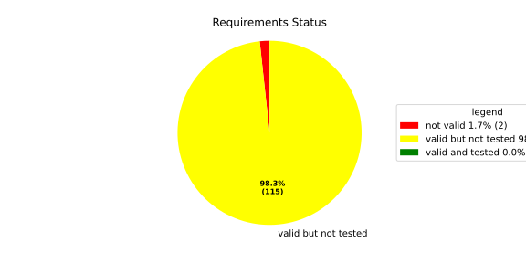
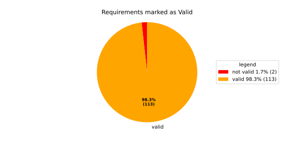
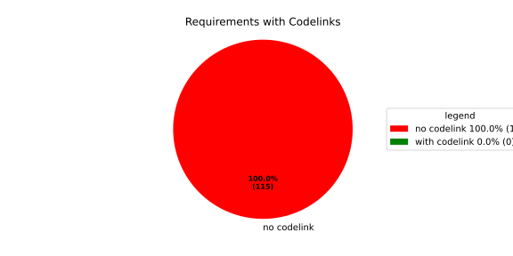

Component Requirements Statistics#
Overview#

In Detail#


No needs passed the filters
Failed Tests
Hint: This table should be empty. Before a PR can be merged all tests have to be successful.
No needs passed the filters
Skipped / Disabled Tests
No needs passed the filters
All passed Tests#
No needs passed the filters
Details About Testcases#
No needs passed the filters
No needs passed the filters
Test Log Files#
tests-report/src/launch_manager_daemon/config/flatbuffer_config_loader_UT/test.log
exec ${PAGER:-/usr/bin/less} "$0" || exit 1
Executing tests from //src/launch_manager_daemon/config:flatbuffer_config_loader_UT
-----------------------------------------------------------------------------
Running main() from gmock_main.cc
[==========] Running 52 tests from 2 test suites.
[----------] Global test environment set-up.
[----------] 49 tests from FlatbufferConfigLoaderTest
[ RUN ] FlatbufferConfigLoaderTest.LoadMinimalConfig
[ OK ] FlatbufferConfigLoaderTest.LoadMinimalConfig (0 ms)
[ RUN ] FlatbufferConfigLoaderTest.LoadSingleComponent
[ OK ] FlatbufferConfigLoaderTest.LoadSingleComponent (0 ms)
[ RUN ] FlatbufferConfigLoaderTest.LoadRunTargets
[ OK ] FlatbufferConfigLoaderTest.LoadRunTargets (0 ms)
[ RUN ] FlatbufferConfigLoaderTest.LoadFallbackRunTarget
[ OK ] FlatbufferConfigLoaderTest.LoadFallbackRunTarget (0 ms)
[ RUN ] FlatbufferConfigLoaderTest.LoadAliveSupervision
[ OK ] FlatbufferConfigLoaderTest.LoadAliveSupervision (0 ms)
[ RUN ] FlatbufferConfigLoaderTest.LoadWatchdog
[ OK ] FlatbufferConfigLoaderTest.LoadWatchdog (0 ms)
[ RUN ] FlatbufferConfigLoaderTest.LoadRestartRecoveryAction
[ OK ] FlatbufferConfigLoaderTest.LoadRestartRecoveryAction (0 ms)
[ RUN ] FlatbufferConfigLoaderTest.LoadSwitchRunTargetAction
[ OK ] FlatbufferConfigLoaderTest.LoadSwitchRunTargetAction (0 ms)
[ RUN ] FlatbufferConfigLoaderTest.LoadSandbox
[ OK ] FlatbufferConfigLoaderTest.LoadSandbox (0 ms)
[ RUN ] FlatbufferConfigLoaderTest.LoadComponentAliveSupervision
[ OK ] FlatbufferConfigLoaderTest.LoadComponentAliveSupervision (0 ms)
[ RUN ] FlatbufferConfigLoaderTest.LoadEnvironmentalVariables
[ OK ] FlatbufferConfigLoaderTest.LoadEnvironmentalVariables (0 ms)
[ RUN ] FlatbufferConfigLoaderTest.LoadMultipleComponents
[ OK ] FlatbufferConfigLoaderTest.LoadMultipleComponents (0 ms)
[ RUN ] FlatbufferConfigLoaderTest.OptionalWatchdogAbsent
[ OK ] FlatbufferConfigLoaderTest.OptionalWatchdogAbsent (0 ms)
[ RUN ] FlatbufferConfigLoaderTest.OptionalReadyConditionAbsent
[ OK ] FlatbufferConfigLoaderTest.OptionalReadyConditionAbsent (0 ms)
[ RUN ] FlatbufferConfigLoaderTest.OptionalAliveSupervisionIndicationsAbsent
[ OK ] FlatbufferConfigLoaderTest.OptionalAliveSupervisionIndicationsAbsent (0 ms)
[ RUN ] FlatbufferConfigLoaderTest.MapNativeApplicationType
[ OK ] FlatbufferConfigLoaderTest.MapNativeApplicationType (0 ms)
[ RUN ] FlatbufferConfigLoaderTest.MapReportingAndSupervisedType
[ OK ] FlatbufferConfigLoaderTest.MapReportingAndSupervisedType (0 ms)
[ RUN ] FlatbufferConfigLoaderTest.MapTerminatedProcessState
[ OK ] FlatbufferConfigLoaderTest.MapTerminatedProcessState (0 ms)
[ RUN ] FlatbufferConfigLoaderTest.LoadBufferFailsWithNoSuchFileReturnsFileNotFound
[ OK ] FlatbufferConfigLoaderTest.LoadBufferFailsWithNoSuchFileReturnsFileNotFound (0 ms)
[ RUN ] FlatbufferConfigLoaderTest.LoadBufferFailsWithPermissionDeniedReturnsInsufficientPermission
[ OK ] FlatbufferConfigLoaderTest.LoadBufferFailsWithPermissionDeniedReturnsInsufficientPermission (0 ms)
[ RUN ] FlatbufferConfigLoaderTest.LoadBufferFailsWithGenericErrorReturnsGeneralError
[ OK ] FlatbufferConfigLoaderTest.LoadBufferFailsWithGenericErrorReturnsGeneralError (0 ms)
[ RUN ] FlatbufferConfigLoaderTest.CorruptedBufferReturnsInvalidFormat
[ OK ] FlatbufferConfigLoaderTest.CorruptedBufferReturnsInvalidFormat (0 ms)
[ RUN ] FlatbufferConfigLoaderTest.WrongSchemaVersionReturnsUnsupportedVersion
[ OK ] FlatbufferConfigLoaderTest.WrongSchemaVersionReturnsUnsupportedVersion (0 ms)
[ RUN ] FlatbufferConfigLoaderTest.SandboxUidOutOfRangeReturnsInvalidFormat
src/launch_manager_daemon/config/src/flatbuffer_config_loader_UT.cpp:748: Skipped
uid_t range covers all uint32_t values on this platform
[ SKIPPED ] FlatbufferConfigLoaderTest.SandboxUidOutOfRangeReturnsInvalidFormat (0 ms)
[ RUN ] FlatbufferConfigLoaderTest.SandboxGidOutOfRangeReturnsInvalidFormat
src/launch_manager_daemon/config/src/flatbuffer_config_loader_UT.cpp:779: Skipped
gid_t range covers all uint32_t values on this platform
[ SKIPPED ] FlatbufferConfigLoaderTest.SandboxGidOutOfRangeReturnsInvalidFormat (0 ms)
[ RUN ] FlatbufferConfigLoaderTest.SandboxSupplementaryGidOutOfRangeReturnsInvalidFormat
src/launch_manager_daemon/config/src/flatbuffer_config_loader_UT.cpp:810: Skipped
gid_t range covers all uint32_t values on this platform
[ SKIPPED ] FlatbufferConfigLoaderTest.SandboxSupplementaryGidOutOfRangeReturnsInvalidFormat (0 ms)
[ RUN ] FlatbufferConfigLoaderTest.NegativeTimeValueReturnsInvalidFormat
mw::log initialization error: Error No logging configuration files could be found. occurred with context information: Failed to load configuration files. Fallback to console logging.
2026/05/29 05:26:05.2365748 2727513 000 ECU1 NONE LM log error verbose 3 Negative time value -1.000000 seconds is not supported
2026/05/29 05:26:05.2365748 2727515 000 ECU1 NONE LM log error verbose 1 Invalid value for DeploymentConfig::ready_timeout
2026/05/29 05:26:05.2365748 2727516 000 ECU1 NONE LM log error verbose 3 Invalid deployment_config for Component ' comp '
2026/05/29 05:26:05.2365748 2727516 000 ECU1 NONE LM log error verbose 3 Failed to load configuration for Component ' comp '
[ OK ] FlatbufferConfigLoaderTest.NegativeTimeValueReturnsInvalidFormat (3 ms)
[ RUN ] FlatbufferConfigLoaderTest.OverflowTimeValueReturnsInvalidFormat
2026/05/29 05:26:05.2365748 2727518 000 ECU1 NONE LM log error verbose 3 Time value 5000000.000000 seconds exceeds maximum representable milliseconds
2026/05/29 05:26:05.2365748 2727518 000 ECU1 NONE LM log error verbose 1 Invalid value for DeploymentConfig::ready_timeout
2026/05/29 05:26:05.2365748 2727519 000 ECU1 NONE LM log error verbose 3 Invalid deployment_config for Component ' comp '
2026/05/29 05:26:05.2365749 2727519 000 ECU1 NONE LM log error verbose 3 Failed to load configuration for Component ' comp '
[ OK ] FlatbufferConfigLoaderTest.OverflowTimeValueReturnsInvalidFormat (0 ms)
[ RUN ] FlatbufferConfigLoaderTest.SubMillisecondTimeValueReturnsInvalidFormat
2026/05/29 05:26:05.2365749 2727521 000 ECU1 NONE LM log error verbose 3 Sub-millisecond time value 0.000100 seconds rounds to 0ms
2026/05/29 05:26:05.2365749 2727521 000 ECU1 NONE LM log error verbose 1 Invalid value for DeploymentConfig::ready_timeout
2026/05/29 05:26:05.2365749 2727521 000 ECU1 NONE LM log error verbose 3 Invalid deployment_config for Component ' comp '
2026/05/29 05:26:05.2365749 2727522 000 ECU1 NONE LM log error verbose 3 Failed to load configuration for Component ' comp '
[ OK ] FlatbufferConfigLoaderTest.SubMillisecondTimeValueReturnsInvalidFormat (0 ms)
[ RUN ] FlatbufferConfigLoaderTest.MissingSchemaVersionReturnsInvalidFormat
2026/05/29 05:26:05.2365749 2727523 000 ECU1 NONE LM log error verbose 1 LaunchManagerConfig::schema_version is required but missing
[ OK ] FlatbufferConfigLoaderTest.MissingSchemaVersionReturnsInvalidFormat (0 ms)
[ RUN ] FlatbufferConfigLoaderTest.MissingEvaluationCycleReturnsInvalidFormat
2026/05/29 05:26:05.2365749 2727524 000 ECU1 NONE LM log error verbose 1 AliveSupervision::evaluation_cycle is required but missing
2026/05/29 05:26:05.2365749 2727524 000 ECU1 NONE LM log error verbose 1 Failed to load configuration for AliveSupervision
[ OK ] FlatbufferConfigLoaderTest.MissingEvaluationCycleReturnsInvalidFormat (0 ms)
[ RUN ] FlatbufferConfigLoaderTest.MissingFallbackTransitionTimeoutReturnsInvalidFormat
2026/05/29 05:26:05.2365749 2727525 000 ECU1 NONE LM log error verbose 1 FallbackRunTarget::transition_timeout is required but missing
2026/05/29 05:26:05.2365749 2727526 000 ECU1 NONE LM log error verbose 1 Failed to load configuration for FallbackRunTarget
[ OK ] FlatbufferConfigLoaderTest.MissingFallbackTransitionTimeoutReturnsInvalidFormat (0 ms)
[ RUN ] FlatbufferConfigLoaderTest.MissingRunTargetTransitionTimeoutReturnsInvalidFormat
2026/05/29 05:26:05.2365749 2727527 000 ECU1 NONE LM log error verbose 1 RunTarget::transition_timeout is required but missing
2026/05/29 05:26:05.2365749 2727527 000 ECU1 NONE LM log error verbose 3 Failed to load configuration for RunTarget ' Startup '
[ OK ] FlatbufferConfigLoaderTest.MissingRunTargetTransitionTimeoutReturnsInvalidFormat (0 ms)
[ RUN ] FlatbufferConfigLoaderTest.MissingReadyTimeoutReturnsInvalidFormat
2026/05/29 05:26:05.2365749 2727529 000 ECU1 NONE LM log error verbose 1 DeploymentConfig::ready_timeout is required but missing
2026/05/29 05:26:05.2365750 2727529 000 ECU1 NONE LM log error verbose 3 Invalid deployment_config for Component ' comp '
2026/05/29 05:26:05.2365750 2727529 000 ECU1 NONE LM log error verbose 3 Failed to load configuration for Component ' comp '
[ OK ] FlatbufferConfigLoaderTest.MissingReadyTimeoutReturnsInvalidFormat (0 ms)
[ RUN ] FlatbufferConfigLoaderTest.MissingShutdownTimeoutReturnsInvalidFormat
2026/05/29 05:26:05.2365750 2727531 000 ECU1 NONE LM log error verbose 1 DeploymentConfig::shutdown_timeout is required but missing
2026/05/29 05:26:05.2365750 2727531 000 ECU1 NONE LM log error verbose 3 Invalid deployment_config for Component ' comp '
2026/05/29 05:26:05.2365750 2727532 000 ECU1 NONE LM log error verbose 3 Failed to load configuration for Component ' comp '
[ OK ] FlatbufferConfigLoaderTest.MissingShutdownTimeoutReturnsInvalidFormat (0 ms)
[ RUN ] FlatbufferConfigLoaderTest.MissingApplicationTypeReturnsInvalidFormat
2026/05/29 05:26:05.2365750 2727533 000 ECU1 NONE LM log error verbose 1 ApplicationProfile::application_type is required but missing
2026/05/29 05:26:05.2365750 2727533 000 ECU1 NONE LM log error verbose 3 Invalid component_properties for Component ' comp '
2026/05/29 05:26:05.2365750 2727534 000 ECU1 NONE LM log error verbose 3 Failed to load configuration for Component ' comp '
[ OK ] FlatbufferConfigLoaderTest.MissingApplicationTypeReturnsInvalidFormat (0 ms)
[ RUN ] FlatbufferConfigLoaderTest.MissingIsSelfTerminatingReturnsInvalidFormat
2026/05/29 05:26:05.2365750 2727535 000 ECU1 NONE LM log error verbose 1 ApplicationProfile::is_self_terminating is required but missing
2026/05/29 05:26:05.2365750 2727535 000 ECU1 NONE LM log error verbose 3 Invalid component_properties for Component ' comp '
2026/05/29 05:26:05.2365750 2727536 000 ECU1 NONE LM log error verbose 3 Failed to load configuration for Component ' comp '
[ OK ] FlatbufferConfigLoaderTest.MissingIsSelfTerminatingReturnsInvalidFormat (0 ms)
[ RUN ] FlatbufferConfigLoaderTest.MissingProcessStateReturnsInvalidFormat
2026/05/29 05:26:05.2365750 2727537 000 ECU1 NONE LM log error verbose 1 ReadyCondition::process_state is required but missing
2026/05/29 05:26:05.2365750 2727537 000 ECU1 NONE LM log error verbose 3 Invalid component_properties for Component ' comp '
2026/05/29 05:26:05.2365750 2727538 000 ECU1 NONE LM log error verbose 3 Failed to load configuration for Component ' comp '
[ OK ] FlatbufferConfigLoaderTest.MissingProcessStateReturnsInvalidFormat (0 ms)
[ RUN ] FlatbufferConfigLoaderTest.MissingReportingCycleReturnsInvalidFormat
2026/05/29 05:26:05.2365751 2727539 000 ECU1 NONE LM log error verbose 1 ComponentAliveSupervision::reporting_cycle is required but missing
2026/05/29 05:26:05.2365751 2727539 000 ECU1 NONE LM log error verbose 3 Invalid component_properties for Component ' comp '
2026/05/29 05:26:05.2365751 2727540 000 ECU1 NONE LM log error verbose 3 Failed to load configuration for Component ' comp '
[ OK ] FlatbufferConfigLoaderTest.MissingReportingCycleReturnsInvalidFormat (0 ms)
[ RUN ] FlatbufferConfigLoaderTest.MissingFailedCyclesToleranceReturnsInvalidFormat
2026/05/29 05:26:05.2365751 2727541 000 ECU1 NONE LM log error verbose 1 ComponentAliveSupervision::failed_cycles_tolerance is required but missing
2026/05/29 05:26:05.2365751 2727542 000 ECU1 NONE LM log error verbose 3 Invalid component_properties for Component ' comp '
2026/05/29 05:26:05.2365751 2727542 000 ECU1 NONE LM log error verbose 3 Failed to load configuration for Component ' comp '
[ OK ] FlatbufferConfigLoaderTest.MissingFailedCyclesToleranceReturnsInvalidFormat (0 ms)
[ RUN ] FlatbufferConfigLoaderTest.MissingRestartActionFieldsReturnsInvalidFormat
2026/05/29 05:26:05.2365751 2727544 000 ECU1 NONE LM log error verbose 1 RestartAction::number_of_attempts is required but missing
2026/05/29 05:26:05.2365751 2727544 000 ECU1 NONE LM log error verbose 3 Invalid deployment_config for Component ' comp '
2026/05/29 05:26:05.2365751 2727544 000 ECU1 NONE LM log error verbose 3 Failed to load configuration for Component ' comp '
[ OK ] FlatbufferConfigLoaderTest.MissingRestartActionFieldsReturnsInvalidFormat (0 ms)
[ RUN ] FlatbufferConfigLoaderTest.MissingSandboxUidReturnsInvalidFormat
2026/05/29 05:26:05.2365751 2727546 000 ECU1 NONE LM log error verbose 1 Sandbox::uid is required but missing
2026/05/29 05:26:05.2365751 2727546 000 ECU1 NONE LM log error verbose 3 Invalid deployment_config for Component ' comp '
2026/05/29 05:26:05.2365751 2727547 000 ECU1 NONE LM log error verbose 3 Failed to load configuration for Component ' comp '
[ OK ] FlatbufferConfigLoaderTest.MissingSandboxUidReturnsInvalidFormat (0 ms)
[ RUN ] FlatbufferConfigLoaderTest.MissingSandboxGidReturnsInvalidFormat
2026/05/29 05:26:05.2365751 2727548 000 ECU1 NONE LM log error verbose 1 Sandbox::gid is required but missing
2026/05/29 05:26:05.2365751 2727549 000 ECU1 NONE LM log error verbose 3 Invalid deployment_config for Component ' comp '
2026/05/29 05:26:05.2365752 2727549 000 ECU1 NONE LM log error verbose 3 Failed to load configuration for Component ' comp '
[ OK ] FlatbufferConfigLoaderTest.MissingSandboxGidReturnsInvalidFormat (0 ms)
[ RUN ] FlatbufferConfigLoaderTest.MissingSandboxSchedulingPolicyReturnsInvalidFormat
2026/05/29 05:26:05.2365752 2727551 000 ECU1 NONE LM log error verbose 1 Sandbox::scheduling_policy is required but missing
2026/05/29 05:26:05.2365752 2727551 000 ECU1 NONE LM log error verbose 3 Invalid deployment_config for Component ' comp '
2026/05/29 05:26:05.2365752 2727551 000 ECU1 NONE LM log error verbose 3 Failed to load configuration for Component ' comp '
[ OK ] FlatbufferConfigLoaderTest.MissingSandboxSchedulingPolicyReturnsInvalidFormat (0 ms)
[ RUN ] FlatbufferConfigLoaderTest.MissingSandboxSchedulingPriorityReturnsInvalidFormat
2026/05/29 05:26:05.2365752 2727553 000 ECU1 NONE LM log error verbose 1 Sandbox::scheduling_priority is required but missing
2026/05/29 05:26:05.2365752 2727553 000 ECU1 NONE LM log error verbose 3 Invalid deployment_config for Component ' comp '
2026/05/29 05:26:05.2365752 2727553 000 ECU1 NONE LM log error verbose 3 Failed to load configuration for Component ' comp '
[ OK ] FlatbufferConfigLoaderTest.MissingSandboxSchedulingPriorityReturnsInvalidFormat (0 ms)
[ RUN ] FlatbufferConfigLoaderTest.MissingWatchdogMaxTimeoutReturnsInvalidFormat
2026/05/29 05:26:05.2365752 2727555 000 ECU1 NONE LM log error verbose 1 Watchdog::max_timeout is required but missing
2026/05/29 05:26:05.2365752 2727555 000 ECU1 NONE LM log error verbose 1 Failed to load configuration for Watchdog
[ OK ] FlatbufferConfigLoaderTest.MissingWatchdogMaxTimeoutReturnsInvalidFormat (0 ms)
[ RUN ] FlatbufferConfigLoaderTest.MissingWatchdogDeactivateOnShutdownReturnsInvalidFormat
2026/05/29 05:26:05.2365752 2727556 000 ECU1 NONE LM log error verbose 1 Watchdog::deactivate_on_shutdown is required but missing
2026/05/29 05:26:05.2365752 2727557 000 ECU1 NONE LM log error verbose 1 Failed to load configuration for Watchdog
[ OK ] FlatbufferConfigLoaderTest.MissingWatchdogDeactivateOnShutdownReturnsInvalidFormat (0 ms)
[ RUN ] FlatbufferConfigLoaderTest.MissingWatchdogRequireMagicCloseReturnsInvalidFormat
2026/05/29 05:26:05.2365752 2727558 000 ECU1 NONE LM log error verbose 1 Watchdog::require_magic_close is required but missing
2026/05/29 05:26:05.2365752 2727558 000 ECU1 NONE LM log error verbose 1 Failed to load configuration for Watchdog
[ OK ] FlatbufferConfigLoaderTest.MissingWatchdogRequireMagicCloseReturnsInvalidFormat (0 ms)
[ RUN ] FlatbufferConfigLoaderTest.UnsupportedSchedulingPolicyReturnsInvalidFormat
2026/05/29 05:26:05.2365753 2727560 000 ECU1 NONE LM log error verbose 2 Unsupported scheduling policy: 99
2026/05/29 05:26:05.2365753 2727561 000 ECU1 NONE LM log error verbose 3 Invalid deployment_config for Component ' bad_sched_comp '
2026/05/29 05:26:05.2365753 2727561 000 ECU1 NONE LM log error verbose 3 Failed to load configuration for Component ' bad_sched_comp '
[ OK ] FlatbufferConfigLoaderTest.UnsupportedSchedulingPolicyReturnsInvalidFormat (0 ms)
[----------] 49 tests from FlatbufferConfigLoaderTest (10 ms total)
[----------] 3 tests from SchedulingPolicies/SchedulingPolicyTest
[ RUN ] SchedulingPolicies/SchedulingPolicyTest.ConvertsToExpectedPosixValue/SCHED_FIFO
[ OK ] SchedulingPolicies/SchedulingPolicyTest.ConvertsToExpectedPosixValue/SCHED_FIFO (0 ms)
[ RUN ] SchedulingPolicies/SchedulingPolicyTest.ConvertsToExpectedPosixValue/SCHED_RR
[ OK ] SchedulingPolicies/SchedulingPolicyTest.ConvertsToExpectedPosixValue/SCHED_RR (0 ms)
[ RUN ] SchedulingPolicies/SchedulingPolicyTest.ConvertsToExpectedPosixValue/SCHED_OTHER
[ OK ] SchedulingPolicies/SchedulingPolicyTest.ConvertsToExpectedPosixValue/SCHED_OTHER (0 ms)
[----------] 3 tests from SchedulingPolicies/SchedulingPolicyTest (0 ms total)
[----------] Global test environment tear-down
[==========] 52 tests from 2 test suites ran. (11 ms total)
[ PASSED ] 49 tests.
[ SKIPPED ] 3 tests, listed below:
[ SKIPPED ] FlatbufferConfigLoaderTest.SandboxUidOutOfRangeReturnsInvalidFormat
[ SKIPPED ] FlatbufferConfigLoaderTest.SandboxGidOutOfRangeReturnsInvalidFormat
[ SKIPPED ] FlatbufferConfigLoaderTest.SandboxSupplementaryGidOutOfRangeReturnsInvalidFormat
tests-report/src/launch_manager_daemon/config/config_UT/test.log
exec ${PAGER:-/usr/bin/less} "$0" || exit 1
Executing tests from //src/launch_manager_daemon/config:config_UT
-----------------------------------------------------------------------------
Running main() from gmock_main.cc
[==========] Running 14 tests from 2 test suites.
[----------] Global test environment set-up.
[----------] 4 tests from EnvironmentVariableTest
[ RUN ] EnvironmentVariableTest.KeyAndValueAreAccessible
[ OK ] EnvironmentVariableTest.KeyAndValueAreAccessible (0 ms)
[ RUN ] EnvironmentVariableTest.CStrReturnsKeyEqualsValue
[ OK ] EnvironmentVariableTest.CStrReturnsKeyEqualsValue (0 ms)
[ RUN ] EnvironmentVariableTest.EmptyValue
[ OK ] EnvironmentVariableTest.EmptyValue (0 ms)
[ RUN ] EnvironmentVariableTest.ValueContainingEquals
[ OK ] EnvironmentVariableTest.ValueContainingEquals (0 ms)
[----------] 4 tests from EnvironmentVariableTest (0 ms total)
[----------] 10 tests from EnvironmentTest
[ RUN ] EnvironmentTest.DefaultConstructedIsEmpty
[ OK ] EnvironmentTest.DefaultConstructedIsEmpty (0 ms)
[ RUN ] EnvironmentTest.AddIncreasesSize
[ OK ] EnvironmentTest.AddIncreasesSize (0 ms)
[ RUN ] EnvironmentTest.EnvpReturnsNullTerminatedArray
[ OK ] EnvironmentTest.EnvpReturnsNullTerminatedArray (0 ms)
[ RUN ] EnvironmentTest.EnvpWithMultipleEntries
[ OK ] EnvironmentTest.EnvpWithMultipleEntries (0 ms)
[ RUN ] EnvironmentTest.ReserveAndAddAvoidReallocation
[ OK ] EnvironmentTest.ReserveAndAddAvoidReallocation (0 ms)
[ RUN ] EnvironmentTest.MoveConstructorPreservesEntries
[ OK ] EnvironmentTest.MoveConstructorPreservesEntries (0 ms)
[ RUN ] EnvironmentTest.MoveAssignmentPreservesEntries
[ OK ] EnvironmentTest.MoveAssignmentPreservesEntries (0 ms)
[ RUN ] EnvironmentTest.SsoLengthStringSurvivesReallocation
[ OK ] EnvironmentTest.SsoLengthStringSurvivesReallocation (2 ms)
[ RUN ] EnvironmentTest.EmptyEnvironmentEnvpIsNullTerminated
[ OK ] EnvironmentTest.EmptyEnvironmentEnvpIsNullTerminated (0 ms)
[ RUN ] EnvironmentTest.RangeBasedForLoopWorks
[ OK ] EnvironmentTest.RangeBasedForLoopWorks (0 ms)
[----------] 10 tests from EnvironmentTest (2 ms total)
[----------] Global test environment tear-down
[==========] 14 tests from 2 test suites ran. (3 ms total)
[ PASSED ] 14 tests.
tests-report/src/launch_manager_daemon/health_monitor_lib/Notification_UT/test.log
exec ${PAGER:-/usr/bin/less} "$0" || exit 1
Executing tests from //src/launch_manager_daemon/health_monitor_lib:Notification_UT
-----------------------------------------------------------------------------
Running main() from gmock_main.cc
[==========] Running 5 tests from 2 test suites.
[----------] Global test environment set-up.
[----------] 4 tests from NotificationWithConfigTest
[ RUN ] NotificationWithConfigTest.CanGetNotificationName
mw::log initialization error: Error No logging configuration files could be found. occurred with context information: Failed to load configuration files. Fallback to console logging.
[ OK ] NotificationWithConfigTest.CanGetNotificationName (2 ms)
[ RUN ] NotificationWithConfigTest.SendsRequestAndNeverTimesOut
[ OK ] NotificationWithConfigTest.SendsRequestAndNeverTimesOut (0 ms)
[ RUN ] NotificationWithConfigTest.TimesOutWhenSendingRequestFails
2026/05/29 05:26:05.2365877 2728804 000 ECU1 NONE Rcvy log error verbose 2 Notification (TestNotification) Failed to enqueue recovery request (ring buffer full)
[ OK ] NotificationWithConfigTest.TimesOutWhenSendingRequestFails (0 ms)
[ RUN ] NotificationWithConfigTest.ProxyInitializationFails
2026/05/29 05:26:05.2365877 2728807 000 ECU1 NONE Rcvy log error verbose 3 Notification (TestNotification) Invalid ProcessGroupState identifier: InvalidIdentifier
[ OK ] NotificationWithConfigTest.ProxyInitializationFails (0 ms)
[----------] 4 tests from NotificationWithConfigTest (3 ms total)
[----------] 1 test from NotificationWithoutConfigTest
[ RUN ] NotificationWithoutConfigTest.WatchdogNotificationGoesDirectlyToTimeout
[ OK ] NotificationWithoutConfigTest.WatchdogNotificationGoesDirectlyToTimeout (0 ms)
[----------] 1 test from NotificationWithoutConfigTest (0 ms total)
[----------] Global test environment tear-down
[==========] 5 tests from 2 test suites ran. (4 ms total)
[ PASSED ] 5 tests.
tests-report/src/launch_manager_daemon/common/identifier_hash_UT/test.log
exec ${PAGER:-/usr/bin/less} "$0" || exit 1
Executing tests from //src/launch_manager_daemon/common:identifier_hash_UT
-----------------------------------------------------------------------------
Running main() from gmock_main.cc
[==========] Running 7 tests from 1 test suite.
[----------] Global test environment set-up.
[----------] 7 tests from IdentifierHashTest
[ RUN ] IdentifierHashTest.IdentifierHash_with_string_view_created
[ OK ] IdentifierHashTest.IdentifierHash_with_string_view_created (0 ms)
[ RUN ] IdentifierHashTest.IdentifierHash_with_string_created
[ OK ] IdentifierHashTest.IdentifierHash_with_string_created (0 ms)
[ RUN ] IdentifierHashTest.IdentifierHash_default_created
[ OK ] IdentifierHashTest.IdentifierHash_default_created (0 ms)
[ RUN ] IdentifierHashTest.IdentifierHash_invalid_hash_no_string_representation
[ OK ] IdentifierHashTest.IdentifierHash_invalid_hash_no_string_representation (0 ms)
[ RUN ] IdentifierHashTest.IdentifierHash_no_dangling_pointer_after_source_string_dies
[ OK ] IdentifierHashTest.IdentifierHash_no_dangling_pointer_after_source_string_dies (0 ms)
[ RUN ] IdentifierHashTest.IdentifierHash_EqualityOperators
[ OK ] IdentifierHashTest.IdentifierHash_EqualityOperators (0 ms)
[ RUN ] IdentifierHashTest.IdentifierHash_LessThanOperator
[ OK ] IdentifierHashTest.IdentifierHash_LessThanOperator (0 ms)
[----------] 7 tests from IdentifierHashTest (0 ms total)
[----------] Global test environment tear-down
[==========] 7 tests from 1 test suite ran. (0 ms total)
[ PASSED ] 7 tests.
tests-report/src/launch_manager_daemon/common/concurrency/mpmc_concurrent_queue_tsan_test/test.log
exec ${PAGER:-/usr/bin/less} "$0" || exit 1
Executing tests from //src/launch_manager_daemon/common/concurrency:mpmc_concurrent_queue_tsan_test
-----------------------------------------------------------------------------
Running main() from gmock_main.cc
[==========] Running 15 tests from 5 test suites.
[----------] Global test environment set-up.
[----------] 5 tests from MPMCConcurrentQueueTest_Basic
[ RUN ] MPMCConcurrentQueueTest_Basic.PushAndPopSingleItem
[ OK ] MPMCConcurrentQueueTest_Basic.PushAndPopSingleItem (0 ms)
[ RUN ] MPMCConcurrentQueueTest_Basic.PushAndPopPreservesOrder
[ OK ] MPMCConcurrentQueueTest_Basic.PushAndPopPreservesOrder (0 ms)
[ RUN ] MPMCConcurrentQueueTest_Basic.LvaluePushCopiesItem
[ OK ] MPMCConcurrentQueueTest_Basic.LvaluePushCopiesItem (0 ms)
[ RUN ] MPMCConcurrentQueueTest_Basic.RvaluePushWorksWithMoveOnlyType
[ OK ] MPMCConcurrentQueueTest_Basic.RvaluePushWorksWithMoveOnlyType (0 ms)
[ RUN ] MPMCConcurrentQueueTest_Basic.PopReturnsNulloptOnSemaphoreWaitFailure
[ OK ] MPMCConcurrentQueueTest_Basic.PopReturnsNulloptOnSemaphoreWaitFailure (20 ms)
[----------] 5 tests from MPMCConcurrentQueueTest_Basic (21 ms total)
[----------] 2 tests from MPMCConcurrentQueueTest_Timeout
[ RUN ] MPMCConcurrentQueueTest_Timeout.PushWithTimeoutSucceedsWhenSlotAvailable
[ OK ] MPMCConcurrentQueueTest_Timeout.PushWithTimeoutSucceedsWhenSlotAvailable (0 ms)
[ RUN ] MPMCConcurrentQueueTest_Timeout.PushWithTimeoutReturnsFalseWhenFull
[ OK ] MPMCConcurrentQueueTest_Timeout.PushWithTimeoutReturnsFalseWhenFull (21 ms)
[----------] 2 tests from MPMCConcurrentQueueTest_Timeout (21 ms total)
[----------] 3 tests from MPMCConcurrentQueueTest_Stop
[ RUN ] MPMCConcurrentQueueTest_Stop.PushReturnsFalseAfterStop
[ OK ] MPMCConcurrentQueueTest_Stop.PushReturnsFalseAfterStop (0 ms)
[ RUN ] MPMCConcurrentQueueTest_Stop.PopReturnsNulloptWhenStoppedAndEmpty
[ OK ] MPMCConcurrentQueueTest_Stop.PopReturnsNulloptWhenStoppedAndEmpty (0 ms)
[ RUN ] MPMCConcurrentQueueTest_Stop.ItemsAreDroppedAfterStop
[ OK ] MPMCConcurrentQueueTest_Stop.ItemsAreDroppedAfterStop (0 ms)
[----------] 3 tests from MPMCConcurrentQueueTest_Stop (0 ms total)
[----------] 4 tests from MPMCConcurrentQueueTest_Blocking
[ RUN ] MPMCConcurrentQueueTest_Blocking.PopBlocksUntilItemAvailable
[ OK ] MPMCConcurrentQueueTest_Blocking.PopBlocksUntilItemAvailable (0 ms)
[ RUN ] MPMCConcurrentQueueTest_Blocking.PushBlocksWhenFull
[ OK ] MPMCConcurrentQueueTest_Blocking.PushBlocksWhenFull (0 ms)
[ RUN ] MPMCConcurrentQueueTest_Blocking.StopUnblocksBlockedConsumer
[ OK ] MPMCConcurrentQueueTest_Blocking.StopUnblocksBlockedConsumer (0 ms)
[ RUN ] MPMCConcurrentQueueTest_Blocking.StopUnblocksBlockedProducer
[ OK ] MPMCConcurrentQueueTest_Blocking.StopUnblocksBlockedProducer (3 ms)
[----------] 4 tests from MPMCConcurrentQueueTest_Blocking (4 ms total)
[----------] 1 test from MPMCConcurrentQueueTest_MPMC
[ RUN ] MPMCConcurrentQueueTest_MPMC.AllItemsDelivered
[ OK ] MPMCConcurrentQueueTest_MPMC.AllItemsDelivered (3 ms)
[----------] 1 test from MPMCConcurrentQueueTest_MPMC (3 ms total)
[----------] Global test environment tear-down
[==========] 15 tests from 5 test suites ran. (52 ms total)
[ PASSED ] 15 tests.
tests-report/src/launch_manager_daemon/common/concurrency/mpmc_concurrent_queue_test/test.log
exec ${PAGER:-/usr/bin/less} "$0" || exit 1
Executing tests from //src/launch_manager_daemon/common/concurrency:mpmc_concurrent_queue_test
-----------------------------------------------------------------------------
Running main() from gmock_main.cc
[==========] Running 15 tests from 5 test suites.
[----------] Global test environment set-up.
[----------] 5 tests from MPMCConcurrentQueueTest_Basic
[ RUN ] MPMCConcurrentQueueTest_Basic.PushAndPopSingleItem
[ OK ] MPMCConcurrentQueueTest_Basic.PushAndPopSingleItem (0 ms)
[ RUN ] MPMCConcurrentQueueTest_Basic.PushAndPopPreservesOrder
[ OK ] MPMCConcurrentQueueTest_Basic.PushAndPopPreservesOrder (0 ms)
[ RUN ] MPMCConcurrentQueueTest_Basic.LvaluePushCopiesItem
[ OK ] MPMCConcurrentQueueTest_Basic.LvaluePushCopiesItem (0 ms)
[ RUN ] MPMCConcurrentQueueTest_Basic.RvaluePushWorksWithMoveOnlyType
[ OK ] MPMCConcurrentQueueTest_Basic.RvaluePushWorksWithMoveOnlyType (0 ms)
[ RUN ] MPMCConcurrentQueueTest_Basic.PopReturnsNulloptOnSemaphoreWaitFailure
[ OK ] MPMCConcurrentQueueTest_Basic.PopReturnsNulloptOnSemaphoreWaitFailure (21 ms)
[----------] 5 tests from MPMCConcurrentQueueTest_Basic (21 ms total)
[----------] 2 tests from MPMCConcurrentQueueTest_Timeout
[ RUN ] MPMCConcurrentQueueTest_Timeout.PushWithTimeoutSucceedsWhenSlotAvailable
[ OK ] MPMCConcurrentQueueTest_Timeout.PushWithTimeoutSucceedsWhenSlotAvailable (0 ms)
[ RUN ] MPMCConcurrentQueueTest_Timeout.PushWithTimeoutReturnsFalseWhenFull
[ OK ] MPMCConcurrentQueueTest_Timeout.PushWithTimeoutReturnsFalseWhenFull (20 ms)
[----------] 2 tests from MPMCConcurrentQueueTest_Timeout (20 ms total)
[----------] 3 tests from MPMCConcurrentQueueTest_Stop
[ RUN ] MPMCConcurrentQueueTest_Stop.PushReturnsFalseAfterStop
[ OK ] MPMCConcurrentQueueTest_Stop.PushReturnsFalseAfterStop (0 ms)
[ RUN ] MPMCConcurrentQueueTest_Stop.PopReturnsNulloptWhenStoppedAndEmpty
[ OK ] MPMCConcurrentQueueTest_Stop.PopReturnsNulloptWhenStoppedAndEmpty (0 ms)
[ RUN ] MPMCConcurrentQueueTest_Stop.ItemsAreDroppedAfterStop
[ OK ] MPMCConcurrentQueueTest_Stop.ItemsAreDroppedAfterStop (0 ms)
[----------] 3 tests from MPMCConcurrentQueueTest_Stop (0 ms total)
[----------] 4 tests from MPMCConcurrentQueueTest_Blocking
[ RUN ] MPMCConcurrentQueueTest_Blocking.PopBlocksUntilItemAvailable
[ OK ] MPMCConcurrentQueueTest_Blocking.PopBlocksUntilItemAvailable (0 ms)
[ RUN ] MPMCConcurrentQueueTest_Blocking.PushBlocksWhenFull
[ OK ] MPMCConcurrentQueueTest_Blocking.PushBlocksWhenFull (0 ms)
[ RUN ] MPMCConcurrentQueueTest_Blocking.StopUnblocksBlockedConsumer
[ OK ] MPMCConcurrentQueueTest_Blocking.StopUnblocksBlockedConsumer (0 ms)
[ RUN ] MPMCConcurrentQueueTest_Blocking.StopUnblocksBlockedProducer
[ OK ] MPMCConcurrentQueueTest_Blocking.StopUnblocksBlockedProducer (0 ms)
[----------] 4 tests from MPMCConcurrentQueueTest_Blocking (0 ms total)
[----------] 1 test from MPMCConcurrentQueueTest_MPMC
[ RUN ] MPMCConcurrentQueueTest_MPMC.AllItemsDelivered
[ OK ] MPMCConcurrentQueueTest_MPMC.AllItemsDelivered (3 ms)
[----------] 1 test from MPMCConcurrentQueueTest_MPMC (3 ms total)
[----------] Global test environment tear-down
[==========] 15 tests from 5 test suites ran. (46 ms total)
[ PASSED ] 15 tests.
tests-report/src/launch_manager_daemon/process_state_client_lib/processstateclient_UT/test.log
exec ${PAGER:-/usr/bin/less} "$0" || exit 1
Executing tests from //src/launch_manager_daemon/process_state_client_lib:processstateclient_UT
-----------------------------------------------------------------------------
Running main() from gmock_main.cc
[==========] Running 4 tests from 1 test suite.
[----------] Global test environment set-up.
[----------] 4 tests from ProcessStateClient_UT
[ RUN ] ProcessStateClient_UT.ProcessStateClient_ConstructReceiver_Succeeds
[ OK ] ProcessStateClient_UT.ProcessStateClient_ConstructReceiver_Succeeds (0 ms)
[ RUN ] ProcessStateClient_UT.ProcessStateClient_QueueOneProcess_Succeeds
[ OK ] ProcessStateClient_UT.ProcessStateClient_QueueOneProcess_Succeeds (0 ms)
[ RUN ] ProcessStateClient_UT.ProcessStateClient_QueueMaxNumberOfProcesses_Succeeds
[ OK ] ProcessStateClient_UT.ProcessStateClient_QueueMaxNumberOfProcesses_Succeeds (12 ms)
[ RUN ] ProcessStateClient_UT.ProcessStateClient_QueueOneProcessTooMany_Fails
mw::log initialization error: Error No logging configuration files could be found. occurred with context information: Failed to load configuration files. Fallback to console logging.
2026/05/29 05:26:04.2364543 2715467 000 ECU1 NONE LM log error verbose 1 Failed to queue posix process
2026/05/29 05:26:04.2364544 2715469 000 ECU1 NONE LM log error verbose 1 ProcessStateReceiver::getNextChangedPosixProcess: Overflow occurred, will be reported as kCommunicationError
[ OK ] ProcessStateClient_UT.ProcessStateClient_QueueOneProcessTooMany_Fails (6 ms)
[----------] 4 tests from ProcessStateClient_UT (20 ms total)
[----------] Global test environment tear-down
[==========] 4 tests from 1 test suite ran. (21 ms total)
[ PASSED ] 4 tests.
tests-report/src/launch_manager_daemon/recovery_client_lib/recovery_client_UT/test.log
exec ${PAGER:-/usr/bin/less} "$0" || exit 1
Executing tests from //src/launch_manager_daemon/recovery_client_lib:recovery_client_UT
-----------------------------------------------------------------------------
Running main() from gmock_main.cc
[==========] Running 5 tests from 1 test suite.
[----------] Global test environment set-up.
[----------] 5 tests from RecoveryClientTest
[ RUN ] RecoveryClientTest.SendSingleRequest
[ OK ] RecoveryClientTest.SendSingleRequest (0 ms)
[ RUN ] RecoveryClientTest.GetNextRequest
[ OK ] RecoveryClientTest.GetNextRequest (0 ms)
[ RUN ] RecoveryClientTest.GetNextRequestEmpty
[ OK ] RecoveryClientTest.GetNextRequestEmpty (0 ms)
[ RUN ] RecoveryClientTest.RingBufferFull
[ OK ] RecoveryClientTest.RingBufferFull (0 ms)
[ RUN ] RecoveryClientTest.FIFOOrdering
[ OK ] RecoveryClientTest.FIFOOrdering (0 ms)
[----------] 5 tests from RecoveryClientTest (0 ms total)
[----------] Global test environment tear-down
[==========] 5 tests from 1 test suite ran. (0 ms total)
[ PASSED ] 5 tests.
tests-report/src/health_monitoring_lib/tests/test.log
exec ${PAGER:-/usr/bin/less} "$0" || exit 1
Executing tests from //src/health_monitoring_lib:tests
-----------------------------------------------------------------------------
running 232 tests
test common::tests::duration_to_int_valid ... ok
test common::tests::duration_to_int_too_large - should panic ... ok
test common::tests::time_offset_valid ... ok
test common::tests::time_offset_wrong_order ... ok
test common::tests::time_offset_diff_too_large - should panic ... ok
test common::tests::time_range_new_wrong_order - should panic ... ok
test deadline::common::tests::acquire_and_release_deadline ... ok
test deadline::common::tests::concurrent_acquire ... ok
test deadline::common::tests::new_and_fields ... ok
test deadline::deadline_monitor::tests::deadline_failed_on_first_run_and_then_restarted_is_evaluated_as_error ... ok
test common::tests::time_range_from_interval_valid ... ok
test common::tests::time_range_new_valid ... ok
test common::tests::time_range_from_interval_lower_too_large - should panic ... ok
test deadline::deadline_monitor::tests::deadline_outside_time_range_is_error_when_dropped_after_evaluate ... ok
test deadline::deadline_monitor::tests::start_stop_deadline_outside_ranges_is_error_when_dropped_before_evaluate ... ok
test deadline::deadline_monitor::tests::start_stop_deadline_outside_ranges_is_evaluated_as_error ... ok
test deadline::deadline_state::tests::as_u64_and_new ... ok
test deadline::deadline_state::tests::deadline_state_default_and_snapshot ... ok
test deadline::deadline_state::tests::deadline_state_update_none_returns_err ... ok
test deadline::deadline_monitor::tests::get_deadline_unknown_tag ... ok
test deadline::deadline_state::tests::deadline_state_update_success ... ok
test deadline::deadline_state::tests::set_and_get_timestamp_ms ... ok
test deadline::deadline_state::tests::set_running ... ok
test deadline::deadline_state::tests::default_state ... ok
test deadline::deadline_state::tests::set_underrun ... ok
test deadline::ffi::tests::deadline_monitor_builder_add_deadline_invalid_range ... ok
test deadline::ffi::tests::deadline_destroy_null_deadline ... ok
test deadline::ffi::tests::deadline_monitor_builder_add_deadline_null_builder ... ok
test deadline::ffi::tests::deadline_monitor_builder_add_deadline_null_deadline_tag ... ok
test deadline::ffi::tests::deadline_monitor_builder_add_deadline_succeeds ... ok
test deadline::ffi::tests::deadline_monitor_builder_create_succeeds ... ok
test deadline::ffi::tests::deadline_monitor_builder_create_null_builder ... ok
test deadline::ffi::tests::deadline_monitor_destroy_null_monitor ... ok
test deadline::ffi::tests::deadline_monitor_builder_destroy_null_builder ... ok
test deadline::ffi::tests::deadline_monitor_get_deadline_null_deadline_handle ... ok
test deadline::ffi::tests::deadline_monitor_get_deadline_null_monitor ... ok
test deadline::ffi::tests::deadline_monitor_get_deadline_null_deadline_tag ... ok
test deadline::ffi::tests::deadline_monitor_get_deadline_unknown_deadline ... ok
test deadline::ffi::tests::deadline_start_already_started ... ok
test deadline::ffi::tests::deadline_monitor_get_deadline_succeeds ... ok
test deadline::ffi::tests::deadline_start_null_deadline ... ok
test deadline::ffi::tests::deadline_start_succeeds ... ok
test deadline::ffi::tests::deadline_stop_succeeds ... ok
test ffi::tests::health_monitor_builder_add_deadline_monitor_null_deadline_monitor_builder ... ok
test ffi::tests::health_monitor_builder_add_deadline_monitor_null_hmon_builder ... ok
test ffi::tests::health_monitor_builder_add_deadline_monitor_null_monitor_tag ... ok
test ffi::tests::health_monitor_builder_add_deadline_monitor_succeeds ... ok
test ffi::tests::health_monitor_builder_add_heartbeat_monitor_null_heartbeat_monitor_builder ... ok
test ffi::tests::health_monitor_builder_add_heartbeat_monitor_null_hmon_builder ... ok
test ffi::tests::health_monitor_builder_add_heartbeat_monitor_null_monitor_tag ... ok
test ffi::tests::health_monitor_builder_add_heartbeat_monitor_succeeds ... ok
test ffi::tests::health_monitor_builder_add_logic_monitor_null_hmon_builder ... ok
test ffi::tests::health_monitor_builder_add_logic_monitor_null_logic_monitor_builder ... ok
test ffi::tests::health_monitor_builder_add_logic_monitor_null_monitor_tag ... ok
test ffi::tests::health_monitor_builder_add_logic_monitor_succeeds ... ok
test ffi::tests::health_monitor_builder_build_invalid_cycle_intervals ... ok
test ffi::tests::health_monitor_builder_build_no_monitors ... ok
test ffi::tests::health_monitor_builder_build_null_builder_handle ... ok
test ffi::tests::health_monitor_builder_build_null_monitor_handle ... ok
test deadline::ffi::tests::deadline_stop_null_deadline ... ok
test ffi::tests::health_monitor_builder_build_succeeds ... ok
test ffi::tests::health_monitor_builder_build_thread_parameters ... ok
test ffi::tests::health_monitor_builder_build_valid_cycle_intervals_succeeds ... ok
test ffi::tests::health_monitor_builder_create_null_handle ... ok
test ffi::tests::health_monitor_builder_create_succeeds ... ok
test ffi::tests::health_monitor_builder_destroy_null_handle ... ok
test ffi::tests::health_monitor_destroy_null_hmon ... ok
test ffi::tests::health_monitor_get_deadline_monitor_already_taken ... ok
test ffi::tests::health_monitor_get_deadline_monitor_null_deadline_monitor ... ok
test ffi::tests::health_monitor_get_deadline_monitor_null_hmon ... ok
test ffi::tests::health_monitor_get_deadline_monitor_null_monitor_tag ... ok
test ffi::tests::health_monitor_get_deadline_monitor_succeeds ... ok
test ffi::tests::health_monitor_get_heartbeat_monitor_already_taken ... ok
test ffi::tests::health_monitor_get_heartbeat_monitor_null_hmon ... ok
test ffi::tests::health_monitor_get_heartbeat_monitor_null_heartbeat_monitor ... ok
test ffi::tests::health_monitor_get_heartbeat_monitor_null_monitor_tag ... ok
test ffi::tests::health_monitor_get_heartbeat_monitor_succeeds ... ok
test ffi::tests::health_monitor_get_logic_monitor_null_hmon ... ok
test ffi::tests::health_monitor_get_logic_monitor_already_taken ... ok
test ffi::tests::health_monitor_get_logic_monitor_null_logic_monitor ... ok
test ffi::tests::health_monitor_get_logic_monitor_null_monitor_tag ... ok
test ffi::tests::health_monitor_get_logic_monitor_succeeds ... ok
test ffi::tests::health_monitor_start_monitor_not_taken ... ok
test ffi::tests::health_monitor_start_null_hmon ... ok
test health_monitor::tests::health_monitor_builder_build_invalid_cycles ... ok
[2026/05/29 05:26:05.0282771][6948][HMON][INFO] Monitoring thread started.
test health_monitor::tests::health_monitor_builder_build_no_monitors ... ok
test health_monitor::tests::health_monitor_builder_build_succeeds ... ok
test health_monitor::tests::health_monitor_builder_new_succeeds ... ok
test health_monitor::tests::health_monitor_get_deadline_monitor_available ... ok
test health_monitor::tests::health_monitor_get_deadline_monitor_invalid_state ... ok
test health_monitor::tests::health_monitor_get_deadline_monitor_taken ... ok
test health_monitor::tests::health_monitor_get_deadline_monitor_unknown ... ok
test health_monitor::tests::health_monitor_get_heartbeat_monitor_available ... ok
test health_monitor::tests::health_monitor_get_heartbeat_monitor_invalid_state ... ok
test health_monitor::tests::health_monitor_get_heartbeat_monitor_taken ... ok
test health_monitor::tests::health_monitor_get_heartbeat_monitor_unknown ... ok
test health_monitor::tests::health_monitor_get_logic_monitor_available ... ok
test health_monitor::tests::health_monitor_get_logic_monitor_invalid_state ... ok
test health_monitor::tests::health_monitor_get_logic_monitor_taken ... ok
test health_monitor::tests::health_monitor_get_logic_monitor_unknown ... ok
test health_monitor::tests::health_monitor_start_monitors_not_taken - should panic ... ok
[2026/05/29 05:26:05.0312632][6948][HMON][INFO] Monitoring thread started.
[2026/05/29 05:26:05.0312984][6948][HMON][INFO] Monitoring thread exiting.
test health_monitor::tests::health_monitor_start_succeeds ... ok
test heartbeat::ffi::tests::heartbeat_monitor_builder_create_invalid_range ... ok
test heartbeat::ffi::tests::heartbeat_monitor_builder_create_null_builder ... ok
test heartbeat::ffi::tests::heartbeat_monitor_builder_create_succeeds ... ok
test heartbeat::ffi::tests::heartbeat_monitor_builder_destroy_null_builder ... ok
test heartbeat::ffi::tests::heartbeat_monitor_destroy_null_monitor ... ok
test heartbeat::ffi::tests::heartbeat_monitor_heartbeat_null_monitor ... ok
test heartbeat::ffi::tests::heartbeat_monitor_heartbeat_succeeds ... ok
test deadline::deadline_monitor::tests::monitor_with_multiple_running_deadlines ... ok
test heartbeat::heartbeat_monitor::tests::heartbeat_monitor_beat_early_evaluate_early ... ok
[2026/05/29 05:26:05.1283963][6948][HMON][INFO] Monitoring thread exiting.
test ffi::tests::health_monitor_start_succeeds ... ok
test heartbeat::heartbeat_monitor::tests::heartbeat_monitor_beat_early_evaluate_in_range ... ok
test heartbeat::heartbeat_monitor::tests::heartbeat_monitor_beat_in_range_evaluate_in_range ... ok
test heartbeat::heartbeat_monitor::tests::heartbeat_monitor_beat_early_evaluate_late ... ok
test heartbeat::heartbeat_monitor::tests::heartbeat_monitor_builder_build_invalid_internal_processing_cycle ... ok
test heartbeat::heartbeat_monitor::tests::heartbeat_monitor_builder_build_ok ... ok
test heartbeat::heartbeat_monitor::tests::heartbeat_monitor_beat_in_range_evaluate_late ... ok
test heartbeat::heartbeat_monitor::tests::heartbeat_monitor_beat_late_evaluate_late ... ok
test heartbeat::heartbeat_monitor::tests::heartbeat_monitor_cycle_early ... ok
test heartbeat::heartbeat_monitor::tests::heartbeat_monitor_multiple_beats_early_evaluate_early ... ok
test heartbeat::heartbeat_monitor::tests::heartbeat_monitor_cycle_in_range ... ok
test heartbeat::heartbeat_monitor::tests::heartbeat_monitor_multiple_beats_early_evaluate_in_range ... ok
test heartbeat::heartbeat_monitor::tests::heartbeat_monitor_multiple_beats_in_range_evaluate_in_range ... ok
test heartbeat::heartbeat_monitor::tests::heartbeat_monitor_multiple_beats_early_evaluate_late ... ok
test heartbeat::heartbeat_monitor::tests::heartbeat_monitor_cycle_late ... ok
test heartbeat::heartbeat_monitor::tests::heartbeat_monitor_no_beat_evaluate_early ... ok
test heartbeat::heartbeat_monitor::tests::heartbeat_monitor_no_beat_evaluate_in_range ... ok
test heartbeat::heartbeat_monitor::tests::heartbeat_monitor_multiple_beats_in_range_evaluate_late ... ok
test heartbeat::heartbeat_monitor::tests::heartbeat_monitor_multiple_beats_late_evaluate_late ... ok
test heartbeat::heartbeat_state::tests::snapshot_counter_increment ... ok
test heartbeat::heartbeat_state::tests::snapshot_default ... ok
test heartbeat::heartbeat_state::tests::snapshot_from_u64_max ... ok
test heartbeat::heartbeat_state::tests::snapshot_from_u64_valid ... ok
test heartbeat::heartbeat_state::tests::snapshot_from_u64_zero ... ok
test heartbeat::heartbeat_state::tests::snapshot_new_succeeds ... ok
test heartbeat::heartbeat_state::tests::snapshot_set_heartbeat_timestamp_out_of_range - should panic ... ok
test heartbeat::heartbeat_state::tests::snapshot_set_heartbeat_timestamp_valid ... ok
test heartbeat::heartbeat_state::tests::state_default ... ok
test heartbeat::heartbeat_state::tests::state_new ... ok
test heartbeat::heartbeat_state::tests::state_reset ... ok
test heartbeat::heartbeat_state::tests::state_snapshot ... ok
test heartbeat::heartbeat_state::tests::state_update_none ... ok
test heartbeat::heartbeat_state::tests::state_update_some ... ok
test logic::ffi::tests::logic_monitor_builder_add_state_null_allowed_states_many_elements ... ok
test logic::ffi::tests::logic_monitor_builder_add_state_null_allowed_states_zero_elements ... ok
test logic::ffi::tests::logic_monitor_builder_add_state_null_builder ... ok
test logic::ffi::tests::logic_monitor_builder_add_state_null_tag ... ok
test logic::ffi::tests::logic_monitor_builder_add_state_succeeds ... ok
test logic::ffi::tests::logic_monitor_builder_create_null_builder ... ok
test logic::ffi::tests::logic_monitor_builder_create_null_initial_state ... ok
test logic::ffi::tests::logic_monitor_builder_create_succeeds ... ok
test logic::ffi::tests::logic_monitor_builder_destroy_null_builder ... ok
test logic::ffi::tests::logic_monitor_destroy_null_monitor ... ok
test logic::ffi::tests::logic_monitor_state_fails ... ok
test logic::ffi::tests::logic_monitor_state_null_monitor ... ok
test logic::ffi::tests::logic_monitor_state_null_state ... ok
test logic::ffi::tests::logic_monitor_state_succeeds ... ok
test logic::ffi::tests::logic_monitor_transition_fails ... ok
test logic::ffi::tests::logic_monitor_transition_null_monitor ... ok
test logic::ffi::tests::logic_monitor_transition_null_target_state ... ok
test logic::ffi::tests::logic_monitor_transition_succeeds ... ok
test logic::logic_monitor::tests::logic_monitor_builder_build_no_states ... ok
test logic::logic_monitor::tests::logic_monitor_builder_build_succeeds ... ok
test logic::logic_monitor::tests::logic_monitor_builder_build_undefined_initial_state ... ok
test logic::logic_monitor::tests::logic_monitor_builder_build_undefined_target ... ok
test logic::logic_monitor::tests::logic_monitor_builder_new_succeeds ... ok
test logic::logic_monitor::tests::logic_monitor_evaluate_invalid_state ... ok
test logic::logic_monitor::tests::logic_monitor_evaluate_invalid_transition ... ok
test logic::logic_monitor::tests::logic_monitor_evaluate_succeeds ... ok
test logic::logic_monitor::tests::logic_monitor_state_indeterminate_current_state ... ok
test logic::logic_monitor::tests::logic_monitor_state_succeeds ... ok
test logic::logic_monitor::tests::logic_monitor_transition_indeterminate_current_state ... ok
test logic::logic_monitor::tests::logic_monitor_transition_invalid_transition ... ok
test logic::logic_monitor::tests::logic_monitor_transition_succeeds ... ok
test logic::logic_monitor::tests::logic_monitor_transition_unknown_node ... ok
test logic::logic_state::tests::snapshot_from_u64_max ... ok
test logic::logic_state::tests::snapshot_from_u64_valid ... ok
test logic::logic_state::tests::snapshot_from_u64_zero ... ok
test logic::logic_state::tests::snapshot_new_succeeds ... ok
test logic::logic_state::tests::snapshot_set_current_state_index_valid ... ok
test logic::logic_state::tests::snapshot_set_heartbeat_timestamp_out_of_range - should panic ... ok
test logic::logic_state::tests::snapshot_set_monitor_status_valid ... ok
test logic::logic_state::tests::state_new ... ok
test logic::logic_state::tests::state_snapshot ... ok
test logic::logic_state::tests::state_swap ... ok
test tag::tests::deadline_tag_debug ... ok
test tag::tests::deadline_tag_from_str ... ok
test tag::tests::deadline_tag_from_string ... ok
test tag::tests::deadline_tag_new ... ok
test tag::tests::deadline_tag_score_debug ... ok
test tag::tests::monitor_tag_debug ... ok
test tag::tests::monitor_tag_from_str ... ok
test tag::tests::monitor_tag_from_string ... ok
test tag::tests::monitor_tag_new ... ok
test tag::tests::monitor_tag_score_debug ... ok
test tag::tests::state_tag_debug ... ok
test tag::tests::state_tag_from_str ... ok
test tag::tests::state_tag_from_string ... ok
test tag::tests::state_tag_new ... ok
test tag::tests::state_tag_score_debug ... ok
test tag::tests::tag_debug ... ok
test tag::tests::tag_hash_is_eq ... ok
test tag::tests::tag_hash_is_ne ... ok
test tag::tests::tag_new ... ok
test tag::tests::tag_partial_eq_is_eq ... ok
test tag::tests::tag_partial_eq_is_ne ... ok
test tag::tests::tag_score_debug ... ok
test tag::tests::test_from_str ... ok
test tag::tests::test_from_string ... ok
test thread_ffi::tests::scheduler_policy_priority_max_null_priority ... ok
test thread_ffi::tests::scheduler_policy_priority_max_succeeds ... ok
test thread_ffi::tests::scheduler_policy_priority_min_null_priority ... ok
test thread_ffi::tests::scheduler_policy_priority_min_succeeds ... ok
test thread_ffi::tests::thread_parameters_affinity_null_affinity_many_elements ... ok
test thread_ffi::tests::thread_parameters_affinity_null_affinity_zero_elements ... ok
test thread_ffi::tests::thread_parameters_affinity_null_handle ... ok
test thread_ffi::tests::thread_parameters_affinity_succeeds ... ok
test thread_ffi::tests::thread_parameters_create_succeeds ... ok
test thread_ffi::tests::thread_parameters_destroy_null_handle ... ok
test thread_ffi::tests::thread_parameters_scheduler_parameters_invalid_priority ... ok
test thread_ffi::tests::thread_parameters_scheduler_parameters_null_handle ... ok
test thread_ffi::tests::thread_parameters_scheduler_parameters_succeeds ... ok
test thread_ffi::tests::thread_parameters_stack_size_null_handle ... ok
test thread_ffi::tests::thread_parameters_stack_size_succeeds ... ok
test worker::tests::monitoring_logic_report_alive_on_each_call_when_no_error ... ok
test deadline::deadline_monitor::tests::start_stop_deadline_within_range_works ... ok
test worker::tests::monitoring_logic_report_error_when_deadline_failed ... ok
[2026/05/29 05:26:06.0037565][6948][HMON][INFO] Monitoring thread started.
test heartbeat::heartbeat_monitor::tests::heartbeat_monitor_no_beat_evaluate_late ... ok
[2026/05/29 05:26:06.0648063][6948][HMON][WARN] Deadline (DeadlineTag(deadline_fast)) missed! Expected: 50, now: 61
[2026/05/29 05:26:06.0648396][6948][HMON][WARN] Deadline monitor with tag MonitorTag(deadline_monitor) reported error: TooLate.
[2026/05/29 05:26:06.0648498][6948][HMON][WARN] One or more monitors reported errors, skipping AliveAPI notification.
[2026/05/29 05:26:06.0648565][6948][HMON][INFO] Monitoring logic failed, stopping thread.
[2026/05/29 05:26:06.0648626][6948][HMON][INFO] Monitoring thread exiting.
test worker::tests::unique_thread_runner_monitoring_works ... ok
test worker::tests::monitoring_logic_report_alive_respect_cycle ... ok
test heartbeat::heartbeat_monitor::tests::heartbeat_monitor_timestamp_offset ... ok
test result: ok. 232 passed; 0 failed; 0 ignored; 0 measured; 0 filtered out; finished in 1.31s
tests-report/src/health_monitoring_lib/cpp_tests/test.log
exec ${PAGER:-/usr/bin/less} "$0" || exit 1
Executing tests from //src/health_monitoring_lib:cpp_tests
-----------------------------------------------------------------------------
Running main() from gmock_main.cc
[==========] Running 1 test from 1 test suite.
[----------] Global test environment set-up.
[----------] 1 test from HealthMonitorTest
[ RUN ] HealthMonitorTest.TestName
[2026/05/29 05:26:05.8016940][src/health_monitoring_lib/rust/deadline/deadline_monitor.rs:217][7205][HMON][ERROR] Deadline DeadlineTag(deadline_1) stopped too early by 100 ms
[2026/05/29 05:26:05.8021434][src/health_monitoring_lib/rust/worker.rs:121][7205][HMON][INFO] Monitoring thread started.
[2026/05/29 05:26:05.8021606][src/health_monitoring_lib/rust/worker.rs:139][7205][HMON][INFO] Monitoring thread exiting.
[ OK ] HealthMonitorTest.TestName (0 ms)
[----------] 1 test from HealthMonitorTest (0 ms total)
[----------] Global test environment tear-down
[==========] 1 test from 1 test suite ran. (1 ms total)
[ PASSED ] 1 test.
tests-report/src/health_monitoring_lib/loom_tests/test.log
exec ${PAGER:-/usr/bin/less} "$0" || exit 1
Executing tests from //src/health_monitoring_lib:loom_tests
-----------------------------------------------------------------------------
running 3 tests
test heartbeat::heartbeat_monitor::loom_tests::heartbeat_monitor_heartbeat_evaluate_too_early ... ok
test heartbeat::heartbeat_monitor::loom_tests::heartbeat_monitor_heartbeat_evaluate_in_range ... ok
test heartbeat::heartbeat_monitor::loom_tests::heartbeat_monitor_heartbeat_evaluate_too_late ... ok
test result: ok. 3 passed; 0 failed; 0 ignored; 0 measured; 0 filtered out; finished in 0.73s
tests-report/tests/integration/smoke/smoke/test.log
exec ${PAGER:-/usr/bin/less} "$0" || exit 1
Executing tests from //tests/integration/smoke:smoke
-----------------------------------------------------------------------------
============================= test session starts ==============================
platform linux -- Python 3.12.12, pytest-9.0.3, pluggy-1.5.0
rootdir: /home/runner/.bazel/sandbox/processwrapper-sandbox/902/execroot/_main/bazel-out/k8-fastbuild/bin/tests/integration/smoke/smoke.runfiles/score_itf+
configfile: pytest.ini
collected 1 item
../score_itf+::test_smoke
-------------------------------- live log setup --------------------------------
[2026-05-29 05:26:09.082] [INFO] [score.itf.plugins.docker] Executing custom image bootstrap command: tests/utils/environments/x86_64-linux/x86_64-linux.sh
[2026-05-29 05:26:09.837] [DEBUG] [docker.utils.config] Trying paths: ['/home/runner/.docker/config.json', '/home/runner/.dockercfg']
[2026-05-29 05:26:09.837] [DEBUG] [docker.utils.config] Found file at path: /home/runner/.docker/config.json
[2026-05-29 05:26:09.837] [DEBUG] [docker.auth] Found 'auths' section
[2026-05-29 05:26:09.837] [DEBUG] [docker.auth] Found entry (registry='https://index.docker.io/v1/', username='githubactions')
[2026-05-29 05:26:09.848] [DEBUG] [urllib3.connectionpool] http://localhost:None "GET /version HTTP/1.1" 200 823
[2026-05-29 05:26:09.957] [DEBUG] [urllib3.connectionpool] http://localhost:None "POST /v1.48/containers/create HTTP/1.1" 201 88
[2026-05-29 05:26:09.962] [DEBUG] [urllib3.connectionpool] http://localhost:None "GET /v1.48/containers/7e2204aec07da14b21887745523f4b5b037a27716ce0679e7291ceea5e1e6ebe/json HTTP/1.1" 200 None
[2026-05-29 05:26:10.265] [DEBUG] [urllib3.connectionpool] http://localhost:None "POST /v1.48/containers/7e2204aec07da14b21887745523f4b5b037a27716ce0679e7291ceea5e1e6ebe/start HTTP/1.1" 204 0
[2026-05-29 05:26:10.265] [DEBUG] [docker.utils.config] Trying paths: ['/home/runner/.docker/config.json', '/home/runner/.dockercfg']
[2026-05-29 05:26:10.267] [DEBUG] [docker.utils.config] Found file at path: /home/runner/.docker/config.json
[2026-05-29 05:26:10.267] [DEBUG] [docker.auth] Found 'auths' section
[2026-05-29 05:26:10.268] [DEBUG] [docker.auth] Found entry (registry='https://index.docker.io/v1/', username='githubactions')
[2026-05-29 05:26:10.282] [DEBUG] [urllib3.connectionpool] http://localhost:None "GET /version HTTP/1.1" 200 823
[2026-05-29 05:26:10.284] [DEBUG] [urllib3.connectionpool] http://localhost:None "POST /v1.48/containers/7e2204aec07da14b21887745523f4b5b037a27716ce0679e7291ceea5e1e6ebe/exec HTTP/1.1" 201 74
[2026-05-29 05:26:10.287] [DEBUG] [urllib3.connectionpool] http://localhost:None "POST /v1.48/exec/52ba79bd9109a30fcb6e26912d4629946ef745c8b82fcd0f7631fd564079f417/start HTTP/1.1" 101 0
[2026-05-29 05:26:10.357] [DEBUG] [urllib3.connectionpool] http://localhost:None "GET /v1.48/exec/52ba79bd9109a30fcb6e26912d4629946ef745c8b82fcd0f7631fd564079f417/json HTTP/1.1" 200 390
[2026-05-29 05:26:10.439] [DEBUG] [urllib3.connectionpool] http://localhost:None "PUT /v1.48/containers/7e2204aec07da14b21887745523f4b5b037a27716ce0679e7291ceea5e1e6ebe/archive?path=%2Ftmp HTTP/1.1" 200 0
[2026-05-29 05:26:10.442] [DEBUG] [urllib3.connectionpool] http://localhost:None "POST /v1.48/containers/7e2204aec07da14b21887745523f4b5b037a27716ce0679e7291ceea5e1e6ebe/exec HTTP/1.1" 201 74
[2026-05-29 05:26:10.446] [DEBUG] [urllib3.connectionpool] http://localhost:None "POST /v1.48/exec/d914cb56275cac63c110865f376d0e0626747a6d6cd702df4eb208359ae1d4db/start HTTP/1.1" 101 0
[2026-05-29 05:26:10.521] [DEBUG] [urllib3.connectionpool] http://localhost:None "GET /v1.48/exec/d914cb56275cac63c110865f376d0e0626747a6d6cd702df4eb208359ae1d4db/json HTTP/1.1" 200 416
[2026-05-29 05:26:10.522] [INFO] [tests.utils.testing_utils.setup_test] Test case setup finished
-------------------------------- live log call ---------------------------------
[2026-05-29 05:26:10.524] [DEBUG] [urllib3.connectionpool] http://localhost:None "POST /v1.48/containers/7e2204aec07da14b21887745523f4b5b037a27716ce0679e7291ceea5e1e6ebe/exec HTTP/1.1" 201 74
[2026-05-29 05:26:10.527] [DEBUG] [urllib3.connectionpool] http://localhost:None "POST /v1.48/exec/ad779c65e3cc02216587473d4e1f0f96624f081c8025484cc43c1362c8f69e49/start HTTP/1.1" 101 0
[2026-05-29 05:26:10.592] [DEBUG] [urllib3.connectionpool] http://localhost:None "GET /v1.48/exec/ad779c65e3cc02216587473d4e1f0f96624f081c8025484cc43c1362c8f69e49/json HTTP/1.1" 200 404
[2026-05-29 05:26:10.595] [DEBUG] [urllib3.connectionpool] http://localhost:None "POST /v1.48/containers/7e2204aec07da14b21887745523f4b5b037a27716ce0679e7291ceea5e1e6ebe/exec HTTP/1.1" 201 74
[2026-05-29 05:26:10.598] [DEBUG] [urllib3.connectionpool] http://localhost:None "POST /v1.48/exec/86b35f1b2be02ba66cc9746924b3bdedf39b60eea98f6ff0d2ba8e65ca8208b5/start HTTP/1.1" 101 0
[2026-05-29 05:26:10.662] [INFO] [launch_manager] mw::log initialization error: Error No logging configuration files could be found. occurred with context information: Failed to load configuration files. Fallback to console logging.
[2026-05-29 05:26:10.670] [INFO] [launch_manager] 2026/05/29 05:26:10.2370664 2776672 000 ECU1 NONE Fcty log warn verbose 2 Factory for FlatCfg MachineConfig: No watchdog configured
[2026-05-29 05:26:10.672] [DEBUG] [urllib3.connectionpool] http://localhost:None "GET /v1.48/exec/86b35f1b2be02ba66cc9746924b3bdedf39b60eea98f6ff0d2ba8e65ca8208b5/json HTTP/1.1" 200 442
[2026-05-29 05:26:10.674] [DEBUG] [urllib3.connectionpool] http://localhost:None "POST /v1.48/containers/7e2204aec07da14b21887745523f4b5b037a27716ce0679e7291ceea5e1e6ebe/exec HTTP/1.1" 201 74
[2026-05-29 05:26:10.678] [INFO] [launch_manager] [==========] Running 1 test from 1 test suite.
[2026-05-29 05:26:10.678] [INFO] [launch_manager] [----------] Global test environment set-up.
[2026-05-29 05:26:10.678] [INFO] [launch_manager] [----------] 1 test from Smoke
[2026-05-29 05:26:10.678] [INFO] [launch_manager] [ RUN ] Smoke.Daemon
[2026-05-29 05:26:10.678] [INFO] [launch_manager] [ STEP ] Control daemon report kRunning
[2026-05-29 05:26:10.680] [DEBUG] [urllib3.connectionpool] http://localhost:None "POST /v1.48/exec/0ad5872a102fa3b841575a7dc2f11c3d080e8fbfb7ec60dec764e1e7141459d2/start HTTP/1.1" 101 0
[2026-05-29 05:26:10.681] [INFO] [launch_manager] [ END STEP ] Control daemon report kRunning
[2026-05-29 05:26:10.745] [DEBUG] [urllib3.connectionpool] http://localhost:None "GET /v1.48/exec/0ad5872a102fa3b841575a7dc2f11c3d080e8fbfb7ec60dec764e1e7141459d2/json HTTP/1.1" 200 404
[2026-05-29 05:26:10.745] [DEBUG] [tests.utils.testing_utils.run_until_file_deployed] Waiting for /tmp/tests/test_end
[2026-05-29 05:26:11.247] [DEBUG] [urllib3.connectionpool] http://localhost:None "GET /v1.48/exec/86b35f1b2be02ba66cc9746924b3bdedf39b60eea98f6ff0d2ba8e65ca8208b5/json HTTP/1.1" 200 442
[2026-05-29 05:26:11.249] [DEBUG] [urllib3.connectionpool] http://localhost:None "POST /v1.48/containers/7e2204aec07da14b21887745523f4b5b037a27716ce0679e7291ceea5e1e6ebe/exec HTTP/1.1" 201 74
[2026-05-29 05:26:11.250] [DEBUG] [urllib3.connectionpool] http://localhost:None "POST /v1.48/exec/16a5479a4183c0b638825677fee1a014750ee36bde28f80fd3db143d4c48cffd/start HTTP/1.1" 101 0
[2026-05-29 05:26:11.298] [DEBUG] [urllib3.connectionpool] http://localhost:None "GET /v1.48/exec/16a5479a4183c0b638825677fee1a014750ee36bde28f80fd3db143d4c48cffd/json HTTP/1.1" 200 404
[2026-05-29 05:26:11.299] [DEBUG] [tests.utils.testing_utils.run_until_file_deployed] Waiting for /tmp/tests/test_end
[2026-05-29 05:26:11.679] [INFO] [launch_manager] [ STEP ] Activate RunTarget Running
[2026-05-29 05:26:11.679] [INFO] [launch_manager] mw::log initialization error: Error No logging configuration files could be found. occurred with context information: Failed to load configuration files. Fallback to console logging.
[2026-05-29 05:26:11.682] [INFO] [launch_manager] [==========] Running 1 test from 1 test suite.
[2026-05-29 05:26:11.682] [INFO] [launch_manager] [----------] Global test environment set-up.
[2026-05-29 05:26:11.682] [INFO] [launch_manager] [----------] 1 test from Smoke
[2026-05-29 05:26:11.682] [INFO] [launch_manager] [ RUN ] Smoke.Process
[2026-05-29 05:26:11.684] [INFO] [launch_manager] [ OK ] Smoke.Process (2 ms)
[2026-05-29 05:26:11.684] [INFO] [launch_manager] [----------] 1 test from Smoke (2 ms total)
[2026-05-29 05:26:11.684] [INFO] [launch_manager] [----------] Global test environment tear-down
[2026-05-29 05:26:11.685] [INFO] [launch_manager] [==========] 1 test from 1 test suite ran. (2 ms total)
[2026-05-29 05:26:11.685] [INFO] [launch_manager] [ PASSED ] 1 test.
[2026-05-29 05:26:11.777] [INFO] [launch_manager] [ END STEP ] Activate RunTarget Running
[2026-05-29 05:26:11.777] [INFO] [launch_manager] [ STEP ] Activate RunTarget Startup
[2026-05-29 05:26:11.801] [DEBUG] [urllib3.connectionpool] http://localhost:None "GET /v1.48/exec/86b35f1b2be02ba66cc9746924b3bdedf39b60eea98f6ff0d2ba8e65ca8208b5/json HTTP/1.1" 200 442
[2026-05-29 05:26:11.802] [DEBUG] [urllib3.connectionpool] http://localhost:None "POST /v1.48/containers/7e2204aec07da14b21887745523f4b5b037a27716ce0679e7291ceea5e1e6ebe/exec HTTP/1.1" 201 74
[2026-05-29 05:26:11.813] [DEBUG] [urllib3.connectionpool] http://localhost:None "POST /v1.48/exec/2a619e1702adf43ffd002ab643a61f68d8f72ad4261c48f00dbee66c95178ae1/start HTTP/1.1" 101 0
[2026-05-29 05:26:11.866] [DEBUG] [urllib3.connectionpool] http://localhost:None "GET /v1.48/exec/2a619e1702adf43ffd002ab643a61f68d8f72ad4261c48f00dbee66c95178ae1/json HTTP/1.1" 200 404
[2026-05-29 05:26:11.866] [DEBUG] [tests.utils.testing_utils.run_until_file_deployed] Waiting for /tmp/tests/test_end
[2026-05-29 05:26:11.877] [INFO] [launch_manager] [ END STEP ] Activate RunTarget Startup
[2026-05-29 05:26:11.877] [INFO] [launch_manager] [ STEP ] Activate RunTarget Off
[2026-05-29 05:26:11.878] [INFO] [launch_manager] [ END STEP ] Activate RunTarget Off
[2026-05-29 05:26:11.978] [INFO] [launch_manager] [ OK ] Smoke.Daemon (1302 ms)
[2026-05-29 05:26:11.978] [INFO] [launch_manager] [----------] 1 test from Smoke (1302 ms total)
[2026-05-29 05:26:11.978] [INFO] [launch_manager] [----------] Global test environment tear-down
[2026-05-29 05:26:11.979] [INFO] [launch_manager] [==========] 1 test from 1 test suite ran. (1302 ms total)
[2026-05-29 05:26:11.979] [INFO] [launch_manager] [ PASSED ] 1 test.
[2026-05-29 05:26:12.368] [DEBUG] [urllib3.connectionpool] http://localhost:None "GET /v1.48/exec/86b35f1b2be02ba66cc9746924b3bdedf39b60eea98f6ff0d2ba8e65ca8208b5/json HTTP/1.1" 200 442
[2026-05-29 05:26:12.369] [DEBUG] [urllib3.connectionpool] http://localhost:None "POST /v1.48/containers/7e2204aec07da14b21887745523f4b5b037a27716ce0679e7291ceea5e1e6ebe/exec HTTP/1.1" 201 74
[2026-05-29 05:26:12.371] [DEBUG] [urllib3.connectionpool] http://localhost:None "POST /v1.48/exec/553a39a27dabe8eadc96d0832c302359cf4df5ba9495a33b3e94e74725953e6f/start HTTP/1.1" 101 0
[2026-05-29 05:26:12.427] [DEBUG] [urllib3.connectionpool] http://localhost:None "GET /v1.48/exec/553a39a27dabe8eadc96d0832c302359cf4df5ba9495a33b3e94e74725953e6f/json HTTP/1.1" 200 404
[2026-05-29 05:26:12.428] [DEBUG] [urllib3.connectionpool] http://localhost:None "POST /v1.48/containers/7e2204aec07da14b21887745523f4b5b037a27716ce0679e7291ceea5e1e6ebe/exec HTTP/1.1" 201 74
[2026-05-29 05:26:12.431] [DEBUG] [urllib3.connectionpool] http://localhost:None "POST /v1.48/exec/0ddbecac6d8745c12788e2a52f4f8c8d7711945beda36cac7a4526248967fda9/start HTTP/1.1" 101 0
[2026-05-29 05:26:12.471] [DEBUG] [urllib3.connectionpool] http://localhost:None "GET /v1.48/exec/0ddbecac6d8745c12788e2a52f4f8c8d7711945beda36cac7a4526248967fda9/json HTTP/1.1" 200 389
[2026-05-29 05:26:12.974] [DEBUG] [urllib3.connectionpool] http://localhost:None "GET /v1.48/exec/86b35f1b2be02ba66cc9746924b3bdedf39b60eea98f6ff0d2ba8e65ca8208b5/json HTTP/1.1" 200 440
[2026-05-29 05:26:12.976] [DEBUG] [urllib3.connectionpool] http://localhost:None "POST /v1.48/containers/7e2204aec07da14b21887745523f4b5b037a27716ce0679e7291ceea5e1e6ebe/exec HTTP/1.1" 201 74
[2026-05-29 05:26:12.984] [DEBUG] [urllib3.connectionpool] http://localhost:None "POST /v1.48/exec/cee0795c05b9cd1e3a8fbcd71ac18a96bfafc0bad50aa57e3851c607e6be0dc1/start HTTP/1.1" 101 0
[2026-05-29 05:26:13.040] [DEBUG] [urllib3.connectionpool] http://localhost:None "GET /v1.48/exec/cee0795c05b9cd1e3a8fbcd71ac18a96bfafc0bad50aa57e3851c607e6be0dc1/json HTTP/1.1" 200 402
[2026-05-29 05:26:13.043] [DEBUG] [urllib3.connectionpool] http://localhost:None "GET /v1.48/containers/7e2204aec07da14b21887745523f4b5b037a27716ce0679e7291ceea5e1e6ebe/archive?path=%2Ftmp%2Ftests%2Fsmoke%2Fcontrol_daemon_mock.xml HTTP/1.1" 200 None
[2026-05-29 05:26:13.047] [DEBUG] [urllib3.connectionpool] http://localhost:None "POST /v1.48/containers/7e2204aec07da14b21887745523f4b5b037a27716ce0679e7291ceea5e1e6ebe/exec HTTP/1.1" 201 74
[2026-05-29 05:26:13.051] [DEBUG] [urllib3.connectionpool] http://localhost:None "POST /v1.48/exec/6a9d9b5d34d3360af39b35f23c437efe6eb9ad3837bc2c0d312f732ba3a2433a/start HTTP/1.1" 101 0
[2026-05-29 05:26:13.099] [DEBUG] [urllib3.connectionpool] http://localhost:None "GET /v1.48/exec/6a9d9b5d34d3360af39b35f23c437efe6eb9ad3837bc2c0d312f732ba3a2433a/json HTTP/1.1" 200 420
[2026-05-29 05:26:13.102] [DEBUG] [urllib3.connectionpool] http://localhost:None "GET /v1.48/containers/7e2204aec07da14b21887745523f4b5b037a27716ce0679e7291ceea5e1e6ebe/archive?path=%2Ftmp%2Ftests%2Fsmoke%2Fgtest_process.xml HTTP/1.1" 200 None
[2026-05-29 05:26:13.104] [DEBUG] [urllib3.connectionpool] http://localhost:None "POST /v1.48/containers/7e2204aec07da14b21887745523f4b5b037a27716ce0679e7291ceea5e1e6ebe/exec HTTP/1.1" 201 74
[2026-05-29 05:26:13.106] [DEBUG] [urllib3.connectionpool] http://localhost:None "POST /v1.48/exec/167813dcc82e7fc812d8273e71becdf8f02a5d20ee5bebb74e5eef80fbec11fb/start HTTP/1.1" 101 0
[2026-05-29 05:26:13.158] [DEBUG] [urllib3.connectionpool] http://localhost:None "GET /v1.48/exec/167813dcc82e7fc812d8273e71becdf8f02a5d20ee5bebb74e5eef80fbec11fb/json HTTP/1.1" 200 414
PASSED [100%]
------------------------------ live log teardown -------------------------------
[2026-05-29 05:26:13.270] [DEBUG] [urllib3.connectionpool] http://localhost:None "POST /v1.48/containers/7e2204aec07da14b21887745523f4b5b037a27716ce0679e7291ceea5e1e6ebe/stop?t=1 HTTP/1.1" 204 0
[2026-05-29 05:26:13.287] [DEBUG] [urllib3.connectionpool] http://localhost:None "DELETE /v1.48/containers/7e2204aec07da14b21887745523f4b5b037a27716ce0679e7291ceea5e1e6ebe?v=False&link=False&force=True HTTP/1.1" 204 0
- generated xml file: /home/runner/.bazel/sandbox/processwrapper-sandbox/902/execroot/_main/bazel-out/k8-fastbuild/testlogs/tests/integration/smoke/smoke/test.xml -
============================== 1 passed in 4.23s ===============================
tests-report/tests/integration/process_launch_args/process_launch_args/test.log
exec ${PAGER:-/usr/bin/less} "$0" || exit 1
Executing tests from //tests/integration/process_launch_args:process_launch_args
-----------------------------------------------------------------------------
============================= test session starts ==============================
platform linux -- Python 3.12.12, pytest-9.0.3, pluggy-1.5.0
rootdir: /home/runner/.bazel/sandbox/processwrapper-sandbox/903/execroot/_main/bazel-out/k8-fastbuild/bin/tests/integration/process_launch_args/process_launch_args.runfiles/score_itf+
configfile: pytest.ini
collected 1 item
../score_itf+::test_process_launch_args
-------------------------------- live log setup --------------------------------
[2026-05-29 05:26:12.891] [INFO] [score.itf.plugins.docker] Executing custom image bootstrap command: tests/utils/environments/x86_64-linux/x86_64-linux.sh
[2026-05-29 05:26:13.025] [DEBUG] [docker.utils.config] Trying paths: ['/home/runner/.docker/config.json', '/home/runner/.dockercfg']
[2026-05-29 05:26:13.026] [DEBUG] [docker.utils.config] Found file at path: /home/runner/.docker/config.json
[2026-05-29 05:26:13.026] [DEBUG] [docker.auth] Found 'auths' section
[2026-05-29 05:26:13.026] [DEBUG] [docker.auth] Found entry (registry='https://index.docker.io/v1/', username='githubactions')
[2026-05-29 05:26:13.037] [DEBUG] [urllib3.connectionpool] http://localhost:None "GET /version HTTP/1.1" 200 823
[2026-05-29 05:26:13.071] [DEBUG] [urllib3.connectionpool] http://localhost:None "POST /v1.48/containers/create HTTP/1.1" 201 88
[2026-05-29 05:26:13.073] [DEBUG] [urllib3.connectionpool] http://localhost:None "GET /v1.48/containers/1d048ffceb4d33c30259981fcd0ebbe6f1e4ac15817d9dc32777d425e006f9d1/json HTTP/1.1" 200 None
[2026-05-29 05:26:13.209] [DEBUG] [urllib3.connectionpool] http://localhost:None "POST /v1.48/containers/1d048ffceb4d33c30259981fcd0ebbe6f1e4ac15817d9dc32777d425e006f9d1/start HTTP/1.1" 204 0
[2026-05-29 05:26:13.210] [DEBUG] [docker.utils.config] Trying paths: ['/home/runner/.docker/config.json', '/home/runner/.dockercfg']
[2026-05-29 05:26:13.210] [DEBUG] [docker.utils.config] Found file at path: /home/runner/.docker/config.json
[2026-05-29 05:26:13.210] [DEBUG] [docker.auth] Found 'auths' section
[2026-05-29 05:26:13.210] [DEBUG] [docker.auth] Found entry (registry='https://index.docker.io/v1/', username='githubactions')
[2026-05-29 05:26:13.219] [DEBUG] [urllib3.connectionpool] http://localhost:None "GET /version HTTP/1.1" 200 823
[2026-05-29 05:26:13.222] [DEBUG] [urllib3.connectionpool] http://localhost:None "POST /v1.48/containers/1d048ffceb4d33c30259981fcd0ebbe6f1e4ac15817d9dc32777d425e006f9d1/exec HTTP/1.1" 201 74
[2026-05-29 05:26:13.224] [DEBUG] [urllib3.connectionpool] http://localhost:None "POST /v1.48/exec/7b0969afd667952dcfc1a74c9c0c7f3f06c2181fe8ded6b56f83cf3867e0e1ef/start HTTP/1.1" 101 0
[2026-05-29 05:26:13.287] [DEBUG] [urllib3.connectionpool] http://localhost:None "GET /v1.48/exec/7b0969afd667952dcfc1a74c9c0c7f3f06c2181fe8ded6b56f83cf3867e0e1ef/json HTTP/1.1" 200 390
[2026-05-29 05:26:13.316] [DEBUG] [urllib3.connectionpool] http://localhost:None "PUT /v1.48/containers/1d048ffceb4d33c30259981fcd0ebbe6f1e4ac15817d9dc32777d425e006f9d1/archive?path=%2Ftmp HTTP/1.1" 200 0
[2026-05-29 05:26:13.318] [DEBUG] [urllib3.connectionpool] http://localhost:None "POST /v1.48/containers/1d048ffceb4d33c30259981fcd0ebbe6f1e4ac15817d9dc32777d425e006f9d1/exec HTTP/1.1" 201 74
[2026-05-29 05:26:13.319] [DEBUG] [urllib3.connectionpool] http://localhost:None "POST /v1.48/exec/ad13b1ffa5ef7bd430ae57950d5152380cdc618437539def74c2fa0ca95c7699/start HTTP/1.1" 101 0
[2026-05-29 05:26:13.383] [DEBUG] [urllib3.connectionpool] http://localhost:None "GET /v1.48/exec/ad13b1ffa5ef7bd430ae57950d5152380cdc618437539def74c2fa0ca95c7699/json HTTP/1.1" 200 430
[2026-05-29 05:26:13.384] [INFO] [tests.utils.testing_utils.setup_test] Test case setup finished
-------------------------------- live log call ---------------------------------
[2026-05-29 05:26:13.386] [DEBUG] [urllib3.connectionpool] http://localhost:None "POST /v1.48/containers/1d048ffceb4d33c30259981fcd0ebbe6f1e4ac15817d9dc32777d425e006f9d1/exec HTTP/1.1" 201 74
[2026-05-29 05:26:13.387] [DEBUG] [urllib3.connectionpool] http://localhost:None "POST /v1.48/exec/f84998854ef7bbc4b1f8e89d129b3b63f08449f9a320cb6986ae729bc501c349/start HTTP/1.1" 101 0
[2026-05-29 05:26:13.433] [DEBUG] [urllib3.connectionpool] http://localhost:None "GET /v1.48/exec/f84998854ef7bbc4b1f8e89d129b3b63f08449f9a320cb6986ae729bc501c349/json HTTP/1.1" 200 404
[2026-05-29 05:26:13.435] [DEBUG] [urllib3.connectionpool] http://localhost:None "POST /v1.48/containers/1d048ffceb4d33c30259981fcd0ebbe6f1e4ac15817d9dc32777d425e006f9d1/exec HTTP/1.1" 201 74
[2026-05-29 05:26:13.437] [DEBUG] [urllib3.connectionpool] http://localhost:None "POST /v1.48/exec/035150e902203857db46ca5500775049ef3bac0f624615aefe0fc5df20280036/start HTTP/1.1" 101 0
[2026-05-29 05:26:13.484] [INFO] [launch_manager] mw::log initialization error: Error No logging configuration files could be found. occurred with context information: Failed to load configuration files. Fallback to console logging.
[2026-05-29 05:26:13.494] [DEBUG] [urllib3.connectionpool] http://localhost:None "GET /v1.48/exec/035150e902203857db46ca5500775049ef3bac0f624615aefe0fc5df20280036/json HTTP/1.1" 200 456
[2026-05-29 05:26:13.496] [INFO] [launch_manager] 2026/05/29 05:26:13.2373486 2804894 000 ECU1 NONE Fcty log warn verbose 2 Factory for FlatCfg MachineConfig: No watchdog configured
[2026-05-29 05:26:13.496] [INFO] [launch_manager] [==========] Running 1 test from 1 test suite.
[2026-05-29 05:26:13.496] [INFO] [launch_manager] [----------] Global test environment set-up.
[2026-05-29 05:26:13.496] [INFO] [launch_manager] [----------] 1 test from ProcessLaunchArgs
[2026-05-29 05:26:13.496] [INFO] [launch_manager] [ RUN ] ProcessLaunchArgs.ProcessInitial
[2026-05-29 05:26:13.496] [INFO] [launch_manager] [ STEP ] Report kRunning
[2026-05-29 05:26:13.497] [INFO] [launch_manager] [ END STEP ] Report kRunning
[2026-05-29 05:26:13.497] [INFO] [launch_manager] [ STEP ] Check args
[2026-05-29 05:26:13.497] [INFO] [launch_manager] [ END STEP ] Check args
[2026-05-29 05:26:13.497] [INFO] [launch_manager] [ OK ] ProcessLaunchArgs.ProcessInitial (2 ms)
[2026-05-29 05:26:13.497] [INFO] [launch_manager] [----------] 1 test from ProcessLaunchArgs (2 ms total)
[2026-05-29 05:26:13.497] [INFO] [launch_manager] [----------] Global test environment tear-down
[2026-05-29 05:26:13.497] [INFO] [launch_manager] [==========] 1 test from 1 test suite ran. (2 ms total)
[2026-05-29 05:26:13.497] [INFO] [launch_manager] [ PASSED ] 1 test.
[2026-05-29 05:26:13.498] [DEBUG] [urllib3.connectionpool] http://localhost:None "POST /v1.48/containers/1d048ffceb4d33c30259981fcd0ebbe6f1e4ac15817d9dc32777d425e006f9d1/exec HTTP/1.1" 201 74
[2026-05-29 05:26:13.510] [DEBUG] [urllib3.connectionpool] http://localhost:None "POST /v1.48/exec/499f4f9aa8c8efaa46b9d5bf345c2ae274a78f3fb095ff7be6c48a7412b9eda0/start HTTP/1.1" 101 0
[2026-05-29 05:26:13.554] [DEBUG] [urllib3.connectionpool] http://localhost:None "GET /v1.48/exec/499f4f9aa8c8efaa46b9d5bf345c2ae274a78f3fb095ff7be6c48a7412b9eda0/json HTTP/1.1" 200 404
[2026-05-29 05:26:13.555] [DEBUG] [urllib3.connectionpool] http://localhost:None "POST /v1.48/containers/1d048ffceb4d33c30259981fcd0ebbe6f1e4ac15817d9dc32777d425e006f9d1/exec HTTP/1.1" 201 74
[2026-05-29 05:26:13.557] [DEBUG] [urllib3.connectionpool] http://localhost:None "POST /v1.48/exec/043bce70e8e270f3ebe0d2017d3ea85456854095037f8f803cf897ebf3610054/start HTTP/1.1" 101 0
[2026-05-29 05:26:13.608] [DEBUG] [urllib3.connectionpool] http://localhost:None "GET /v1.48/exec/043bce70e8e270f3ebe0d2017d3ea85456854095037f8f803cf897ebf3610054/json HTTP/1.1" 200 389
[2026-05-29 05:26:14.111] [DEBUG] [urllib3.connectionpool] http://localhost:None "GET /v1.48/exec/035150e902203857db46ca5500775049ef3bac0f624615aefe0fc5df20280036/json HTTP/1.1" 200 454
[2026-05-29 05:26:14.113] [DEBUG] [urllib3.connectionpool] http://localhost:None "POST /v1.48/containers/1d048ffceb4d33c30259981fcd0ebbe6f1e4ac15817d9dc32777d425e006f9d1/exec HTTP/1.1" 201 74
[2026-05-29 05:26:14.114] [DEBUG] [urllib3.connectionpool] http://localhost:None "POST /v1.48/exec/7dfa83c6e0db2c4f06633eb9a370cd0af20cfcc8d39f0a5f9ff2b066f93392d7/start HTTP/1.1" 101 0
[2026-05-29 05:26:14.167] [DEBUG] [urllib3.connectionpool] http://localhost:None "GET /v1.48/exec/7dfa83c6e0db2c4f06633eb9a370cd0af20cfcc8d39f0a5f9ff2b066f93392d7/json HTTP/1.1" 200 416
[2026-05-29 05:26:14.170] [DEBUG] [urllib3.connectionpool] http://localhost:None "GET /v1.48/containers/1d048ffceb4d33c30259981fcd0ebbe6f1e4ac15817d9dc32777d425e006f9d1/archive?path=%2Ftmp%2Ftests%2Fprocess_launch_args%2Fprocess_initial.xml HTTP/1.1" 200 None
[2026-05-29 05:26:14.174] [DEBUG] [urllib3.connectionpool] http://localhost:None "POST /v1.48/containers/1d048ffceb4d33c30259981fcd0ebbe6f1e4ac15817d9dc32777d425e006f9d1/exec HTTP/1.1" 201 74
[2026-05-29 05:26:14.176] [DEBUG] [urllib3.connectionpool] http://localhost:None "POST /v1.48/exec/eb69832925ec3ed3f2bab319f1136c0aea5f3179a944f254b06add4d19f6c229/start HTTP/1.1" 101 0
[2026-05-29 05:26:14.223] [DEBUG] [urllib3.connectionpool] http://localhost:None "GET /v1.48/exec/eb69832925ec3ed3f2bab319f1136c0aea5f3179a944f254b06add4d19f6c229/json HTTP/1.1" 200 430
PASSED [100%]
------------------------------ live log teardown -------------------------------
[2026-05-29 05:26:14.326] [DEBUG] [urllib3.connectionpool] http://localhost:None "POST /v1.48/containers/1d048ffceb4d33c30259981fcd0ebbe6f1e4ac15817d9dc32777d425e006f9d1/stop?t=1 HTTP/1.1" 204 0
[2026-05-29 05:26:14.337] [DEBUG] [urllib3.connectionpool] http://localhost:None "DELETE /v1.48/containers/1d048ffceb4d33c30259981fcd0ebbe6f1e4ac15817d9dc32777d425e006f9d1?v=False&link=False&force=True HTTP/1.1" 204 0
- generated xml file: /home/runner/.bazel/sandbox/processwrapper-sandbox/903/execroot/_main/bazel-out/k8-fastbuild/testlogs/tests/integration/process_launch_args/process_launch_args/test.xml -
============================== 1 passed in 1.47s ===============================
tests-report/tests/integration/crash_on_startup/crash_on_startup/test.log
exec ${PAGER:-/usr/bin/less} "$0" || exit 1
Executing tests from //tests/integration/crash_on_startup:crash_on_startup
-----------------------------------------------------------------------------
============================= test session starts ==============================
platform linux -- Python 3.12.12, pytest-9.0.3, pluggy-1.5.0
rootdir: /home/runner/.bazel/sandbox/processwrapper-sandbox/904/execroot/_main/bazel-out/k8-fastbuild/bin/tests/integration/crash_on_startup/crash_on_startup.runfiles/score_itf+
configfile: pytest.ini
collected 1 item
../score_itf+::test_crash_on_startup
-------------------------------- live log setup --------------------------------
[2026-05-29 05:26:14.675] [INFO] [score.itf.plugins.docker] Executing custom image bootstrap command: tests/utils/environments/x86_64-linux/x86_64-linux.sh
[2026-05-29 05:26:14.869] [DEBUG] [docker.utils.config] Trying paths: ['/home/runner/.docker/config.json', '/home/runner/.dockercfg']
[2026-05-29 05:26:14.869] [DEBUG] [docker.utils.config] Found file at path: /home/runner/.docker/config.json
[2026-05-29 05:26:14.869] [DEBUG] [docker.auth] Found 'auths' section
[2026-05-29 05:26:14.869] [DEBUG] [docker.auth] Found entry (registry='https://index.docker.io/v1/', username='githubactions')
[2026-05-29 05:26:14.879] [DEBUG] [urllib3.connectionpool] http://localhost:None "GET /version HTTP/1.1" 200 823
[2026-05-29 05:26:14.921] [DEBUG] [urllib3.connectionpool] http://localhost:None "POST /v1.48/containers/create HTTP/1.1" 201 88
[2026-05-29 05:26:14.923] [DEBUG] [urllib3.connectionpool] http://localhost:None "GET /v1.48/containers/d23b4a63870fcc55d8bfbfa09170e2a595ade6110c6878a3a9658d5f34450d6c/json HTTP/1.1" 200 None
[2026-05-29 05:26:15.128] [DEBUG] [urllib3.connectionpool] http://localhost:None "POST /v1.48/containers/d23b4a63870fcc55d8bfbfa09170e2a595ade6110c6878a3a9658d5f34450d6c/start HTTP/1.1" 204 0
[2026-05-29 05:26:15.129] [DEBUG] [docker.utils.config] Trying paths: ['/home/runner/.docker/config.json', '/home/runner/.dockercfg']
[2026-05-29 05:26:15.129] [DEBUG] [docker.utils.config] Found file at path: /home/runner/.docker/config.json
[2026-05-29 05:26:15.129] [DEBUG] [docker.auth] Found 'auths' section
[2026-05-29 05:26:15.129] [DEBUG] [docker.auth] Found entry (registry='https://index.docker.io/v1/', username='githubactions')
[2026-05-29 05:26:15.138] [DEBUG] [urllib3.connectionpool] http://localhost:None "GET /version HTTP/1.1" 200 823
[2026-05-29 05:26:15.141] [DEBUG] [urllib3.connectionpool] http://localhost:None "POST /v1.48/containers/d23b4a63870fcc55d8bfbfa09170e2a595ade6110c6878a3a9658d5f34450d6c/exec HTTP/1.1" 201 74
[2026-05-29 05:26:15.142] [DEBUG] [urllib3.connectionpool] http://localhost:None "POST /v1.48/exec/2fb2d620e82967954317a4f4b0a1061be1517712ffefa0dc93747600c12c12d8/start HTTP/1.1" 101 0
[2026-05-29 05:26:15.207] [DEBUG] [urllib3.connectionpool] http://localhost:None "GET /v1.48/exec/2fb2d620e82967954317a4f4b0a1061be1517712ffefa0dc93747600c12c12d8/json HTTP/1.1" 200 390
[2026-05-29 05:26:15.273] [DEBUG] [urllib3.connectionpool] http://localhost:None "PUT /v1.48/containers/d23b4a63870fcc55d8bfbfa09170e2a595ade6110c6878a3a9658d5f34450d6c/archive?path=%2Ftmp HTTP/1.1" 200 0
[2026-05-29 05:26:15.275] [DEBUG] [urllib3.connectionpool] http://localhost:None "POST /v1.48/containers/d23b4a63870fcc55d8bfbfa09170e2a595ade6110c6878a3a9658d5f34450d6c/exec HTTP/1.1" 201 74
[2026-05-29 05:26:15.277] [DEBUG] [urllib3.connectionpool] http://localhost:None "POST /v1.48/exec/4ce935e65203397eb5e2c9097ca763271217773de8f12352667a86e086b8cb72/start HTTP/1.1" 101 0
[2026-05-29 05:26:15.353] [DEBUG] [urllib3.connectionpool] http://localhost:None "GET /v1.48/exec/4ce935e65203397eb5e2c9097ca763271217773de8f12352667a86e086b8cb72/json HTTP/1.1" 200 427
[2026-05-29 05:26:15.353] [INFO] [tests.utils.testing_utils.setup_test] Test case setup finished
-------------------------------- live log call ---------------------------------
[2026-05-29 05:26:15.355] [DEBUG] [urllib3.connectionpool] http://localhost:None "POST /v1.48/containers/d23b4a63870fcc55d8bfbfa09170e2a595ade6110c6878a3a9658d5f34450d6c/exec HTTP/1.1" 201 74
[2026-05-29 05:26:15.356] [DEBUG] [urllib3.connectionpool] http://localhost:None "POST /v1.48/exec/db1ba54a5ac3474894481759340acd299aa646c7feea414563f2bdd7e9d2408b/start HTTP/1.1" 101 0
[2026-05-29 05:26:15.397] [DEBUG] [urllib3.connectionpool] http://localhost:None "GET /v1.48/exec/db1ba54a5ac3474894481759340acd299aa646c7feea414563f2bdd7e9d2408b/json HTTP/1.1" 200 404
[2026-05-29 05:26:15.399] [DEBUG] [urllib3.connectionpool] http://localhost:None "POST /v1.48/containers/d23b4a63870fcc55d8bfbfa09170e2a595ade6110c6878a3a9658d5f34450d6c/exec HTTP/1.1" 201 74
[2026-05-29 05:26:15.400] [DEBUG] [urllib3.connectionpool] http://localhost:None "POST /v1.48/exec/11218bfa5600e1fc192a5164e4be91d3d77860b3c0337fe58d2056aef5f2ebfc/start HTTP/1.1" 101 0
[2026-05-29 05:26:15.442] [INFO] [launch_manager] mw::log initialization error: Error No logging configuration files could be found. occurred with context information: Failed to load configuration files. Fallback to console logging.
[2026-05-29 05:26:15.443] [DEBUG] [urllib3.connectionpool] http://localhost:None "GET /v1.48/exec/11218bfa5600e1fc192a5164e4be91d3d77860b3c0337fe58d2056aef5f2ebfc/json HTTP/1.1" 200 453
[2026-05-29 05:26:15.444] [INFO] [launch_manager] 2026/05/29 05:26:15.2375443 2824463 000 ECU1 NONE Fcty log warn verbose 2 Factory for FlatCfg MachineConfig: No watchdog configured
[2026-05-29 05:26:15.444] [DEBUG] [urllib3.connectionpool] http://localhost:None "POST /v1.48/containers/d23b4a63870fcc55d8bfbfa09170e2a595ade6110c6878a3a9658d5f34450d6c/exec HTTP/1.1" 201 74
[2026-05-29 05:26:15.446] [DEBUG] [urllib3.connectionpool] http://localhost:None "POST /v1.48/exec/5e4387bc776f81d43a0bdcd4a41116ef36777f139d68e7dd0e7084ff764d20d3/start HTTP/1.1" 101 0
[2026-05-29 05:26:15.447] [INFO] [launch_manager] [==========] Running 1 test from 1 test suite.
[2026-05-29 05:26:15.447] [INFO] [launch_manager] [----------] Global test environment set-up.
[2026-05-29 05:26:15.447] [INFO] [launch_manager] [----------] 1 test from CrashOnStartup
[2026-05-29 05:26:15.447] [INFO] [launch_manager] [ RUN ] CrashOnStartup.ControlClientMock
[2026-05-29 05:26:15.447] [INFO] [launch_manager] [ STEP ] Report kRunning
[2026-05-29 05:26:15.450] [INFO] [launch_manager] [ END STEP ] Report kRunning
[2026-05-29 05:26:15.486] [DEBUG] [urllib3.connectionpool] http://localhost:None "GET /v1.48/exec/5e4387bc776f81d43a0bdcd4a41116ef36777f139d68e7dd0e7084ff764d20d3/json HTTP/1.1" 200 405
[2026-05-29 05:26:15.487] [DEBUG] [tests.utils.testing_utils.run_until_file_deployed] Waiting for /tmp/tests/test_end
[2026-05-29 05:26:15.988] [DEBUG] [urllib3.connectionpool] http://localhost:None "GET /v1.48/exec/11218bfa5600e1fc192a5164e4be91d3d77860b3c0337fe58d2056aef5f2ebfc/json HTTP/1.1" 200 453
[2026-05-29 05:26:15.989] [DEBUG] [urllib3.connectionpool] http://localhost:None "POST /v1.48/containers/d23b4a63870fcc55d8bfbfa09170e2a595ade6110c6878a3a9658d5f34450d6c/exec HTTP/1.1" 201 74
[2026-05-29 05:26:15.991] [DEBUG] [urllib3.connectionpool] http://localhost:None "POST /v1.48/exec/59375ad708fbe8d53c9e00cabebd6352a29f93ce7564c2cdf5525ced317c504a/start HTTP/1.1" 101 0
[2026-05-29 05:26:16.038] [DEBUG] [urllib3.connectionpool] http://localhost:None "GET /v1.48/exec/59375ad708fbe8d53c9e00cabebd6352a29f93ce7564c2cdf5525ced317c504a/json HTTP/1.1" 200 405
[2026-05-29 05:26:16.039] [DEBUG] [tests.utils.testing_utils.run_until_file_deployed] Waiting for /tmp/tests/test_end
[2026-05-29 05:26:16.450] [INFO] [launch_manager] [ STEP ] Launch process crashing on startup twice
[2026-05-29 05:26:16.450] [INFO] [launch_manager] mw::log initialization error: Error No logging configuration files could be found. occurred with context information: Failed to load configuration files. Fallback to console logging.
[2026-05-29 05:26:16.453] [INFO] [launch_manager] Process crashing on startup...
[2026-05-29 05:26:16.520] [INFO] [launch_manager] 2026/05/29 05:26:16.2376520 2835231 000 ECU1 NONE LM log warn verbose 7 unexpected termination of process 1 pid 82 ( process_crashing_on_startup_twice )
[2026-05-29 05:26:16.540] [DEBUG] [urllib3.connectionpool] http://localhost:None "GET /v1.48/exec/11218bfa5600e1fc192a5164e4be91d3d77860b3c0337fe58d2056aef5f2ebfc/json HTTP/1.1" 200 453
[2026-05-29 05:26:16.541] [DEBUG] [urllib3.connectionpool] http://localhost:None "POST /v1.48/containers/d23b4a63870fcc55d8bfbfa09170e2a595ade6110c6878a3a9658d5f34450d6c/exec HTTP/1.1" 201 74
[2026-05-29 05:26:16.543] [DEBUG] [urllib3.connectionpool] http://localhost:None "POST /v1.48/exec/a622b6e41d91e88e4cada8bb6e99427a4fcc69c9120ecc55a45b9d3d774560e2/start HTTP/1.1" 101 0
[2026-05-29 05:26:16.584] [DEBUG] [urllib3.connectionpool] http://localhost:None "GET /v1.48/exec/a622b6e41d91e88e4cada8bb6e99427a4fcc69c9120ecc55a45b9d3d774560e2/json HTTP/1.1" 200 405
[2026-05-29 05:26:16.585] [DEBUG] [tests.utils.testing_utils.run_until_file_deployed] Waiting for /tmp/tests/test_end
[2026-05-29 05:26:16.625] [INFO] [launch_manager] 2026/05/29 05:26:16.2376624 2836277 000 ECU1 NONE LM log warn verbose 5 Got kRunning timeout for process 1 ( process_crashing_on_startup_twice )
[2026-05-29 05:26:16.626] [INFO] [launch_manager] Process crashing on startup...
[2026-05-29 05:26:16.705] [INFO] [launch_manager] 2026/05/29 05:26:16.2376705 2837082 000 ECU1 NONE LM log warn verbose 7 unexpected termination of process 1 pid 89 ( process_crashing_on_startup_twice )
[2026-05-29 05:26:16.813] [INFO] [launch_manager] 2026/05/29 05:26:16.2376812 2838152 000 ECU1 NONE LM log warn verbose 5 Got kRunning timeout for process 1 ( process_crashing_on_startup_twice )
[2026-05-29 05:26:16.815] [INFO] [launch_manager] Process starting successfully...
[2026-05-29 05:26:16.815] [INFO] [launch_manager] [==========] Running 1 test from 1 test suite.
[2026-05-29 05:26:16.815] [INFO] [launch_manager] [----------] Global test environment set-up.
[2026-05-29 05:26:16.815] [INFO] [launch_manager] [----------] 1 test from CrashOnStartup
[2026-05-29 05:26:16.815] [INFO] [launch_manager] [ RUN ] CrashOnStartup.ProcessCrashingOnStartupTwice
[2026-05-29 05:26:16.815] [INFO] [launch_manager] [ STEP ] Report kRunning
[2026-05-29 05:26:16.817] [INFO] [launch_manager] [ END STEP ] Report kRunning
[2026-05-29 05:26:16.818] [INFO] [launch_manager] [ OK ] CrashOnStartup.ProcessCrashingOnStartupTwice (2 ms)
[2026-05-29 05:26:16.818] [INFO] [launch_manager] [----------] 1 test from CrashOnStartup (2 ms total)
[2026-05-29 05:26:16.818] [INFO] [launch_manager] [----------] Global test environment tear-down
[2026-05-29 05:26:16.818] [INFO] [launch_manager] [==========] 1 test from 1 test suite ran. (2 ms total)
[2026-05-29 05:26:16.818] [INFO] [launch_manager] [ PASSED ] 1 test.
[2026-05-29 05:26:16.849] [INFO] [launch_manager] [ END STEP ] Launch process crashing on startup twice
[2026-05-29 05:26:16.849] [INFO] [launch_manager] [ STEP ] Verify fallback run target was not activated, i.e. process eventually started successfully
[2026-05-29 05:26:16.849] [INFO] [launch_manager] [ END STEP ] Verify fallback run target was not activated, i.e. process eventually started successfully
[2026-05-29 05:26:16.849] [INFO] [launch_manager] [ STEP ] Attempt to launch process crashing on startup always
[2026-05-29 05:26:16.854] [INFO] [launch_manager] Process crashing on startup (always)...
[2026-05-29 05:26:16.953] [INFO] [launch_manager] 2026/05/29 05:26:16.2376951 2839540 000 ECU1 NONE LM log warn verbose 7 unexpected termination of process 2 pid 91 ( process_crashing_on_startup_always )
[2026-05-29 05:26:17.059] [INFO] [launch_manager] 2026/05/29 05:26:17.2377059 2840626 000 ECU1 NONE LM log warn verbose 5
[2026-05-29 05:26:17.060] [INFO] [launch_manager] Got kRunning timeout for process 2 ( process_crashing_on_startup_always )
[2026-05-29 05:26:17.062] [INFO] [launch_manager] Process crashing on startup (always)...
[2026-05-29 05:26:17.087] [DEBUG] [urllib3.connectionpool] http://localhost:None "GET /v1.48/exec/11218bfa5600e1fc192a5164e4be91d3d77860b3c0337fe58d2056aef5f2ebfc/json HTTP/1.1" 200 453
[2026-05-29 05:26:17.089] [DEBUG] [urllib3.connectionpool] http://localhost:None "POST /v1.48/containers/d23b4a63870fcc55d8bfbfa09170e2a595ade6110c6878a3a9658d5f34450d6c/exec HTTP/1.1" 201 74
[2026-05-29 05:26:17.094] [DEBUG] [urllib3.connectionpool] http://localhost:None "POST /v1.48/exec/31f3ba0f934f6de193f890868ad0dbef2d2a36488afc47a9351c5015e6e83211/start HTTP/1.1" 101 0
[2026-05-29 05:26:17.147] [DEBUG] [urllib3.connectionpool] http://localhost:None "GET /v1.48/exec/31f3ba0f934f6de193f890868ad0dbef2d2a36488afc47a9351c5015e6e83211/json HTTP/1.1" 200 405
[2026-05-29 05:26:17.147] [DEBUG] [tests.utils.testing_utils.run_until_file_deployed] Waiting for /tmp/tests/test_end
[2026-05-29 05:26:17.179] [INFO] [launch_manager] 2026/05/29 05:26:17.2377179 2841819 000 ECU1 NONE LM log warn verbose 7
[2026-05-29 05:26:17.179] [INFO] [launch_manager] unexpected termination of process 2 pid 92 ( process_crashing_on_startup_always )
[2026-05-29 05:26:17.284] [INFO] [launch_manager] 2026/05/29 05:26:17.2377284 2842872 000 ECU1 NONE LM log warn verbose 5 Got kRunning timeout for process 2 ( process_crashing_on_startup_always )
[2026-05-29 05:26:17.286] [INFO] [launch_manager] Process crashing on startup (always)...
[2026-05-29 05:26:17.401] [INFO] [launch_manager] 2026/05/29 05:26:17.2377400 2844038 000 ECU1 NONE LM log warn verbose 7 unexpected termination of process 2 pid 99 ( process_crashing_on_startup_always )
[2026-05-29 05:26:17.505] [INFO] [launch_manager] 2026/05/29 05:26:17.2377505 2845084 000 ECU1 NONE LM log warn verbose 5 Got kRunning timeout for process 2 ( process_crashing_on_startup_always )
[2026-05-29 05:26:17.507] [INFO] [launch_manager] 2026/05/29 05:26:17.2377506 2845097 000 ECU1 NONE LM log warn verbose 3 Problem discovered in PG MainPG Activating Recovery state.
[2026-05-29 05:26:17.558] [INFO] [launch_manager] [ END STEP ] Attempt to launch process crashing on startup always
[2026-05-29 05:26:17.651] [DEBUG] [urllib3.connectionpool] http://localhost:None "GET /v1.48/exec/11218bfa5600e1fc192a5164e4be91d3d77860b3c0337fe58d2056aef5f2ebfc/json HTTP/1.1" 200 453
[2026-05-29 05:26:17.654] [DEBUG] [urllib3.connectionpool] http://localhost:None "POST /v1.48/containers/d23b4a63870fcc55d8bfbfa09170e2a595ade6110c6878a3a9658d5f34450d6c/exec HTTP/1.1" 201 74
[2026-05-29 05:26:17.657] [DEBUG] [urllib3.connectionpool] http://localhost:None "POST /v1.48/exec/ccb28b473e08d3f2768a9174eed9a7f4cc16994872672e5233c74b5142c4bd8b/start HTTP/1.1" 101 0
[2026-05-29 05:26:17.744] [DEBUG] [urllib3.connectionpool] http://localhost:None "GET /v1.48/exec/ccb28b473e08d3f2768a9174eed9a7f4cc16994872672e5233c74b5142c4bd8b/json HTTP/1.1" 200 405
[2026-05-29 05:26:17.744] [DEBUG] [tests.utils.testing_utils.run_until_file_deployed] Waiting for /tmp/tests/test_end
[2026-05-29 05:26:18.246] [DEBUG] [urllib3.connectionpool] http://localhost:None "GET /v1.48/exec/11218bfa5600e1fc192a5164e4be91d3d77860b3c0337fe58d2056aef5f2ebfc/json HTTP/1.1" 200 453
[2026-05-29 05:26:18.248] [DEBUG] [urllib3.connectionpool] http://localhost:None "POST /v1.48/containers/d23b4a63870fcc55d8bfbfa09170e2a595ade6110c6878a3a9658d5f34450d6c/exec HTTP/1.1" 201 74
[2026-05-29 05:26:18.252] [DEBUG] [urllib3.connectionpool] http://localhost:None "POST /v1.48/exec/27c0f18f7ad1eb29f408477c31bba1b49eae5572a2a9584dde53bd2daace0137/start HTTP/1.1" 101 0
[2026-05-29 05:26:18.304] [DEBUG] [urllib3.connectionpool] http://localhost:None "GET /v1.48/exec/27c0f18f7ad1eb29f408477c31bba1b49eae5572a2a9584dde53bd2daace0137/json HTTP/1.1" 200 405
[2026-05-29 05:26:18.305] [DEBUG] [tests.utils.testing_utils.run_until_file_deployed] Waiting for /tmp/tests/test_end
[2026-05-29 05:26:18.550] [INFO] [launch_manager] [ STEP ] Verify fallback run target was activated
[2026-05-29 05:26:18.550] [INFO] [launch_manager] [ END STEP ] Verify fallback run target was activated
[2026-05-29 05:26:18.550] [INFO] [launch_manager] [ STEP ] Activate RunTarget Off
[2026-05-29 05:26:18.552] [INFO] [launch_manager] [ END STEP ] Activate RunTarget Off
[2026-05-29 05:26:18.554] [INFO] [launch_manager] [ OK ] CrashOnStartup.ControlClientMock (3108 ms)
[2026-05-29 05:26:18.555] [INFO] [launch_manager] [----------] 1 test from CrashOnStartup (3108 ms total)
[2026-05-29 05:26:18.555] [INFO] [launch_manager] [----------] Global test environment tear-down
[2026-05-29 05:26:18.555] [INFO] [launch_manager] [==========] 1 test from 1 test suite ran. (3108 ms total)
[2026-05-29 05:26:18.555] [INFO] [launch_manager] [ PASSED ] 1 test.
[2026-05-29 05:26:18.806] [DEBUG] [urllib3.connectionpool] http://localhost:None "GET /v1.48/exec/11218bfa5600e1fc192a5164e4be91d3d77860b3c0337fe58d2056aef5f2ebfc/json HTTP/1.1" 200 453
[2026-05-29 05:26:18.808] [DEBUG] [urllib3.connectionpool] http://localhost:None "POST /v1.48/containers/d23b4a63870fcc55d8bfbfa09170e2a595ade6110c6878a3a9658d5f34450d6c/exec HTTP/1.1" 201 74
[2026-05-29 05:26:18.811] [DEBUG] [urllib3.connectionpool] http://localhost:None "POST /v1.48/exec/8a8972773bdad3eae3df6aaf14210f2e1b9f12010062cae103a791bf1023c5de/start HTTP/1.1" 101 0
[2026-05-29 05:26:18.868] [DEBUG] [urllib3.connectionpool] http://localhost:None "GET /v1.48/exec/8a8972773bdad3eae3df6aaf14210f2e1b9f12010062cae103a791bf1023c5de/json HTTP/1.1" 200 405
[2026-05-29 05:26:18.869] [DEBUG] [urllib3.connectionpool] http://localhost:None "POST /v1.48/containers/d23b4a63870fcc55d8bfbfa09170e2a595ade6110c6878a3a9658d5f34450d6c/exec HTTP/1.1" 201 74
[2026-05-29 05:26:18.871] [DEBUG] [urllib3.connectionpool] http://localhost:None "POST /v1.48/exec/e5731a691e978d43efa6993f64bca925fd6356f8c340a810060e832a636cd5f6/start HTTP/1.1" 101 0
[2026-05-29 05:26:18.939] [DEBUG] [urllib3.connectionpool] http://localhost:None "GET /v1.48/exec/e5731a691e978d43efa6993f64bca925fd6356f8c340a810060e832a636cd5f6/json HTTP/1.1" 200 390
[2026-05-29 05:26:19.441] [DEBUG] [urllib3.connectionpool] http://localhost:None "GET /v1.48/exec/11218bfa5600e1fc192a5164e4be91d3d77860b3c0337fe58d2056aef5f2ebfc/json HTTP/1.1" 200 451
[2026-05-29 05:26:19.442] [DEBUG] [urllib3.connectionpool] http://localhost:None "POST /v1.48/containers/d23b4a63870fcc55d8bfbfa09170e2a595ade6110c6878a3a9658d5f34450d6c/exec HTTP/1.1" 201 74
[2026-05-29 05:26:19.444] [DEBUG] [urllib3.connectionpool] http://localhost:None "POST /v1.48/exec/4cbbf4facbcf3ca483c41f60b5295878ec44ff35181a58a3d0577539cd6cb82c/start HTTP/1.1" 101 0
[2026-05-29 05:26:19.510] [DEBUG] [urllib3.connectionpool] http://localhost:None "GET /v1.48/exec/4cbbf4facbcf3ca483c41f60b5295878ec44ff35181a58a3d0577539cd6cb82c/json HTTP/1.1" 200 414
[2026-05-29 05:26:19.514] [DEBUG] [urllib3.connectionpool] http://localhost:None "GET /v1.48/containers/d23b4a63870fcc55d8bfbfa09170e2a595ade6110c6878a3a9658d5f34450d6c/archive?path=%2Ftmp%2Ftests%2Fcrash_on_startup%2Fcontrol_client_mock.xml HTTP/1.1" 200 None
[2026-05-29 05:26:19.519] [DEBUG] [urllib3.connectionpool] http://localhost:None "POST /v1.48/containers/d23b4a63870fcc55d8bfbfa09170e2a595ade6110c6878a3a9658d5f34450d6c/exec HTTP/1.1" 201 74
[2026-05-29 05:26:19.521] [DEBUG] [urllib3.connectionpool] http://localhost:None "POST /v1.48/exec/2a0a6fa7bc5a101819df4a9067932b8a6cb9e2700229bb440545905148618e2b/start HTTP/1.1" 101 0
[2026-05-29 05:26:19.573] [DEBUG] [urllib3.connectionpool] http://localhost:None "GET /v1.48/exec/2a0a6fa7bc5a101819df4a9067932b8a6cb9e2700229bb440545905148618e2b/json HTTP/1.1" 200 432
[2026-05-29 05:26:19.577] [DEBUG] [urllib3.connectionpool] http://localhost:None "GET /v1.48/containers/d23b4a63870fcc55d8bfbfa09170e2a595ade6110c6878a3a9658d5f34450d6c/archive?path=%2Ftmp%2Ftests%2Fcrash_on_startup%2Fprocess_crashing_on_startup_twice.xml HTTP/1.1" 200 None
[2026-05-29 05:26:19.579] [DEBUG] [urllib3.connectionpool] http://localhost:None "POST /v1.48/containers/d23b4a63870fcc55d8bfbfa09170e2a595ade6110c6878a3a9658d5f34450d6c/exec HTTP/1.1" 201 74
[2026-05-29 05:26:19.584] [DEBUG] [urllib3.connectionpool] http://localhost:None "POST /v1.48/exec/bcac7ef14053bd684db739cc2a6b8620a77c40670a20c8ad6435521e94baf937/start HTTP/1.1" 101 0
[2026-05-29 05:26:19.632] [DEBUG] [urllib3.connectionpool] http://localhost:None "GET /v1.48/exec/bcac7ef14053bd684db739cc2a6b8620a77c40670a20c8ad6435521e94baf937/json HTTP/1.1" 200 446
PASSED [100%]
------------------------------ live log teardown -------------------------------
[2026-05-29 05:26:19.736] [DEBUG] [urllib3.connectionpool] http://localhost:None "POST /v1.48/containers/d23b4a63870fcc55d8bfbfa09170e2a595ade6110c6878a3a9658d5f34450d6c/stop?t=1 HTTP/1.1" 204 0
[2026-05-29 05:26:19.753] [DEBUG] [urllib3.connectionpool] http://localhost:None "DELETE /v1.48/containers/d23b4a63870fcc55d8bfbfa09170e2a595ade6110c6878a3a9658d5f34450d6c?v=False&link=False&force=True HTTP/1.1" 204 0
- generated xml file: /home/runner/.bazel/sandbox/processwrapper-sandbox/904/execroot/_main/bazel-out/k8-fastbuild/testlogs/tests/integration/crash_on_startup/crash_on_startup/test.xml -
============================== 1 passed in 5.11s ===============================
tests-report/tests/integration/process_crash_monitoring/process_crash_monitoring/test.log
exec ${PAGER:-/usr/bin/less} "$0" || exit 1
Executing tests from //tests/integration/process_crash_monitoring:process_crash_monitoring
-----------------------------------------------------------------------------
============================= test session starts ==============================
platform linux -- Python 3.12.12, pytest-9.0.3, pluggy-1.5.0
rootdir: /home/runner/.bazel/sandbox/processwrapper-sandbox/883/execroot/_main/bazel-out/k8-fastbuild/bin/tests/integration/process_crash_monitoring/process_crash_monitoring.runfiles/score_itf+
configfile: pytest.ini
collected 1 item
../score_itf+::test_process_crash_monitoring
-------------------------------- live log setup --------------------------------
[2026-05-29 05:26:05.702] [INFO] [score.itf.plugins.docker] Executing custom image bootstrap command: tests/utils/environments/x86_64-linux/x86_64-linux.sh
[2026-05-29 05:26:07.682] [DEBUG] [docker.utils.config] Trying paths: ['/home/runner/.docker/config.json', '/home/runner/.dockercfg']
[2026-05-29 05:26:07.682] [DEBUG] [docker.utils.config] Found file at path: /home/runner/.docker/config.json
[2026-05-29 05:26:07.682] [DEBUG] [docker.auth] Found 'auths' section
[2026-05-29 05:26:07.683] [DEBUG] [docker.auth] Found entry (registry='https://index.docker.io/v1/', username='githubactions')
[2026-05-29 05:26:07.701] [DEBUG] [urllib3.connectionpool] http://localhost:None "GET /version HTTP/1.1" 200 823
[2026-05-29 05:26:09.952] [DEBUG] [urllib3.connectionpool] http://localhost:None "POST /v1.48/containers/create HTTP/1.1" 201 88
[2026-05-29 05:26:09.955] [DEBUG] [urllib3.connectionpool] http://localhost:None "GET /v1.48/containers/4f5ab3eb2b46e5e96ebc83443607b61dc2b30dc0c2bff0b94be1b6370b7011ac/json HTTP/1.1" 200 None
[2026-05-29 05:26:10.251] [DEBUG] [urllib3.connectionpool] http://localhost:None "POST /v1.48/containers/4f5ab3eb2b46e5e96ebc83443607b61dc2b30dc0c2bff0b94be1b6370b7011ac/start HTTP/1.1" 204 0
[2026-05-29 05:26:10.253] [DEBUG] [docker.utils.config] Trying paths: ['/home/runner/.docker/config.json', '/home/runner/.dockercfg']
[2026-05-29 05:26:10.253] [DEBUG] [docker.utils.config] Found file at path: /home/runner/.docker/config.json
[2026-05-29 05:26:10.253] [DEBUG] [docker.auth] Found 'auths' section
[2026-05-29 05:26:10.253] [DEBUG] [docker.auth] Found entry (registry='https://index.docker.io/v1/', username='githubactions')
[2026-05-29 05:26:10.269] [DEBUG] [urllib3.connectionpool] http://localhost:None "GET /version HTTP/1.1" 200 823
[2026-05-29 05:26:10.275] [DEBUG] [urllib3.connectionpool] http://localhost:None "POST /v1.48/containers/4f5ab3eb2b46e5e96ebc83443607b61dc2b30dc0c2bff0b94be1b6370b7011ac/exec HTTP/1.1" 201 74
[2026-05-29 05:26:10.279] [DEBUG] [urllib3.connectionpool] http://localhost:None "POST /v1.48/exec/df1340d72275c4a860e50275ebeb90c9a0c17f7577287df9d8776d7d8c8a042f/start HTTP/1.1" 101 0
[2026-05-29 05:26:10.338] [DEBUG] [urllib3.connectionpool] http://localhost:None "GET /v1.48/exec/df1340d72275c4a860e50275ebeb90c9a0c17f7577287df9d8776d7d8c8a042f/json HTTP/1.1" 200 390
[2026-05-29 05:26:10.400] [DEBUG] [urllib3.connectionpool] http://localhost:None "PUT /v1.48/containers/4f5ab3eb2b46e5e96ebc83443607b61dc2b30dc0c2bff0b94be1b6370b7011ac/archive?path=%2Ftmp HTTP/1.1" 200 0
[2026-05-29 05:26:10.402] [DEBUG] [urllib3.connectionpool] http://localhost:None "POST /v1.48/containers/4f5ab3eb2b46e5e96ebc83443607b61dc2b30dc0c2bff0b94be1b6370b7011ac/exec HTTP/1.1" 201 74
[2026-05-29 05:26:10.405] [DEBUG] [urllib3.connectionpool] http://localhost:None "POST /v1.48/exec/008dfee9d888bef93933df802ade653875eaf9ffdfef8316a772b04f28330f4e/start HTTP/1.1" 101 0
[2026-05-29 05:26:10.495] [DEBUG] [urllib3.connectionpool] http://localhost:None "GET /v1.48/exec/008dfee9d888bef93933df802ade653875eaf9ffdfef8316a772b04f28330f4e/json HTTP/1.1" 200 435
[2026-05-29 05:26:10.495] [INFO] [tests.utils.testing_utils.setup_test] Test case setup finished
-------------------------------- live log call ---------------------------------
[2026-05-29 05:26:10.502] [DEBUG] [urllib3.connectionpool] http://localhost:None "POST /v1.48/containers/4f5ab3eb2b46e5e96ebc83443607b61dc2b30dc0c2bff0b94be1b6370b7011ac/exec HTTP/1.1" 201 74
[2026-05-29 05:26:10.504] [DEBUG] [urllib3.connectionpool] http://localhost:None "POST /v1.48/exec/88a9bb43dac4ec7d9f26d95db93a0bb9f5f9bbae3c2028510662e8ff25dc3df8/start HTTP/1.1" 101 0
[2026-05-29 05:26:10.575] [DEBUG] [urllib3.connectionpool] http://localhost:None "GET /v1.48/exec/88a9bb43dac4ec7d9f26d95db93a0bb9f5f9bbae3c2028510662e8ff25dc3df8/json HTTP/1.1" 200 404
[2026-05-29 05:26:10.577] [DEBUG] [urllib3.connectionpool] http://localhost:None "POST /v1.48/containers/4f5ab3eb2b46e5e96ebc83443607b61dc2b30dc0c2bff0b94be1b6370b7011ac/exec HTTP/1.1" 201 74
[2026-05-29 05:26:10.579] [DEBUG] [urllib3.connectionpool] http://localhost:None "POST /v1.48/exec/6599e3b5ac67bff2711fb41083204da3357f4411230523280662cb8f40e4784c/start HTTP/1.1" 101 0
[2026-05-29 05:26:10.637] [INFO] [launch_manager] mw::log initialization error: Error No logging configuration files could be found. occurred with context information: Failed to load configuration files. Fallback to console logging.
[2026-05-29 05:26:10.637] [INFO] [launch_manager] 2026/05/29 05:26:10.2370635 2776381 000 ECU1 NONE Fcty log warn verbose 2 Factory for FlatCfg MachineConfig: No watchdog configured
[2026-05-29 05:26:10.638] [INFO] [launch_manager] [==========] Running 1 test from 1 test suite.
[2026-05-29 05:26:10.639] [INFO] [launch_manager] [----------] Global test environment set-up.
[2026-05-29 05:26:10.640] [INFO] [launch_manager] [----------] 1 test from ProcessCrashMonitoring
[2026-05-29 05:26:10.640] [INFO] [launch_manager] [ RUN ] ProcessCrashMonitoring.ControlClientMock
[2026-05-29 05:26:10.640] [INFO] [launch_manager] [ STEP ] Report kRunning
[2026-05-29 05:26:10.641] [DEBUG] [urllib3.connectionpool] http://localhost:None "GET /v1.48/exec/6599e3b5ac67bff2711fb41083204da3357f4411230523280662cb8f40e4784c/json HTTP/1.1" 200 461
[2026-05-29 05:26:10.643] [DEBUG] [urllib3.connectionpool] http://localhost:None "POST /v1.48/containers/4f5ab3eb2b46e5e96ebc83443607b61dc2b30dc0c2bff0b94be1b6370b7011ac/exec HTTP/1.1" 201 74
[2026-05-29 05:26:10.646] [INFO] [launch_manager] [ END STEP ] Report kRunning
[2026-05-29 05:26:10.646] [DEBUG] [urllib3.connectionpool] http://localhost:None "POST /v1.48/exec/49bb235c223936241bc9eeb4d24af38f2e0dd27b36dbefc7f7ba5a060e6950f6/start HTTP/1.1" 101 0
[2026-05-29 05:26:10.722] [DEBUG] [urllib3.connectionpool] http://localhost:None "GET /v1.48/exec/49bb235c223936241bc9eeb4d24af38f2e0dd27b36dbefc7f7ba5a060e6950f6/json HTTP/1.1" 200 404
[2026-05-29 05:26:10.725] [DEBUG] [tests.utils.testing_utils.run_until_file_deployed] Waiting for /tmp/tests/test_end
[2026-05-29 05:26:11.226] [DEBUG] [urllib3.connectionpool] http://localhost:None "GET /v1.48/exec/6599e3b5ac67bff2711fb41083204da3357f4411230523280662cb8f40e4784c/json HTTP/1.1" 200 461
[2026-05-29 05:26:11.227] [DEBUG] [urllib3.connectionpool] http://localhost:None "POST /v1.48/containers/4f5ab3eb2b46e5e96ebc83443607b61dc2b30dc0c2bff0b94be1b6370b7011ac/exec HTTP/1.1" 201 74
[2026-05-29 05:26:11.228] [DEBUG] [urllib3.connectionpool] http://localhost:None "POST /v1.48/exec/58341ca53c08af4f2769f1adfda0a19474cb0274ccff71eee24ccb6f8fd59c8b/start HTTP/1.1" 101 0
[2026-05-29 05:26:11.274] [DEBUG] [urllib3.connectionpool] http://localhost:None "GET /v1.48/exec/58341ca53c08af4f2769f1adfda0a19474cb0274ccff71eee24ccb6f8fd59c8b/json HTTP/1.1" 200 404
[2026-05-29 05:26:11.275] [DEBUG] [tests.utils.testing_utils.run_until_file_deployed] Waiting for /tmp/tests/test_end
[2026-05-29 05:26:11.641] [INFO] [launch_manager] [ STEP ] Start crashing process
[2026-05-29 05:26:11.641] [INFO] [launch_manager] mw::log initialization error: Error No logging configuration files could be found. occurred with context information: Failed to load configuration files. Fallback to console logging.
[2026-05-29 05:26:11.643] [INFO] [launch_manager] [==========] Running 1 test from 1 test suite.
[2026-05-29 05:26:11.643] [INFO] [launch_manager] [----------] Global test environment set-up.
[2026-05-29 05:26:11.643] [INFO] [launch_manager] [----------] 1 test from ProcessCrashMonitoring
[2026-05-29 05:26:11.643] [INFO] [launch_manager] [ RUN ] ProcessCrashMonitoring.CrashingProcess
[2026-05-29 05:26:11.643] [INFO] [launch_manager] [ STEP ] Report kRunning
[2026-05-29 05:26:11.645] [INFO] [launch_manager] [ END STEP ] Report kRunning
[2026-05-29 05:26:11.645] [INFO] [launch_manager] [ OK ] ProcessCrashMonitoring.CrashingProcess (2 ms)
[2026-05-29 05:26:11.645] [INFO] [launch_manager] [----------] 1 test from ProcessCrashMonitoring (2 ms total)
[2026-05-29 05:26:11.645] [INFO] [launch_manager] [----------] Global test environment tear-down
[2026-05-29 05:26:11.645] [INFO] [launch_manager] [==========] 1 test from 1 test suite ran. (2 ms total)
[2026-05-29 05:26:11.646] [INFO] [launch_manager] [ PASSED ] 1 test.
[2026-05-29 05:26:11.741] [INFO] [launch_manager] [ END STEP ] Start crashing process
[2026-05-29 05:26:11.776] [DEBUG] [urllib3.connectionpool] http://localhost:None "GET /v1.48/exec/6599e3b5ac67bff2711fb41083204da3357f4411230523280662cb8f40e4784c/json HTTP/1.1" 200 461
[2026-05-29 05:26:11.777] [DEBUG] [urllib3.connectionpool] http://localhost:None "POST /v1.48/containers/4f5ab3eb2b46e5e96ebc83443607b61dc2b30dc0c2bff0b94be1b6370b7011ac/exec HTTP/1.1" 201 74
[2026-05-29 05:26:11.779] [DEBUG] [urllib3.connectionpool] http://localhost:None "POST /v1.48/exec/f763300113cf786b5c40fd384eae44bae3e84e14496853b8719ec7aad60da5c6/start HTTP/1.1" 101 0
[2026-05-29 05:26:11.835] [DEBUG] [urllib3.connectionpool] http://localhost:None "GET /v1.48/exec/f763300113cf786b5c40fd384eae44bae3e84e14496853b8719ec7aad60da5c6/json HTTP/1.1" 200 404
[2026-05-29 05:26:11.837] [DEBUG] [tests.utils.testing_utils.run_until_file_deployed] Waiting for /tmp/tests/test_end
[2026-05-29 05:26:12.338] [DEBUG] [urllib3.connectionpool] http://localhost:None "GET /v1.48/exec/6599e3b5ac67bff2711fb41083204da3357f4411230523280662cb8f40e4784c/json HTTP/1.1" 200 461
[2026-05-29 05:26:12.340] [DEBUG] [urllib3.connectionpool] http://localhost:None "POST /v1.48/containers/4f5ab3eb2b46e5e96ebc83443607b61dc2b30dc0c2bff0b94be1b6370b7011ac/exec HTTP/1.1" 201 74
[2026-05-29 05:26:12.341] [DEBUG] [urllib3.connectionpool] http://localhost:None "POST /v1.48/exec/a040db1d5b12ab856fe270228d3f7bb7e048aa85309890406dd604c54111c74b/start HTTP/1.1" 101 0
[2026-05-29 05:26:12.389] [DEBUG] [urllib3.connectionpool] http://localhost:None "GET /v1.48/exec/a040db1d5b12ab856fe270228d3f7bb7e048aa85309890406dd604c54111c74b/json HTTP/1.1" 200 404
[2026-05-29 05:26:12.389] [DEBUG] [tests.utils.testing_utils.run_until_file_deployed] Waiting for /tmp/tests/test_end
[2026-05-29 05:26:12.646] [INFO] [launch_manager] Process crashing...
[2026-05-29 05:26:12.739] [INFO] [launch_manager] 2026/05/29 05:26:12.2372739 2797420 000 ECU1 NONE LM log warn verbose 7 unexpected termination of process 1 pid 80 ( component_crashing_on_runtime )
[2026-05-29 05:26:12.802] [INFO] [launch_manager] 2026/05/29 05:26:12.2372802 2798050 000 ECU1 NONE LM log warn verbose 3 Problem discovered in PG MainPG Activating Recovery state.
[2026-05-29 05:26:12.890] [DEBUG] [urllib3.connectionpool] http://localhost:None "GET /v1.48/exec/6599e3b5ac67bff2711fb41083204da3357f4411230523280662cb8f40e4784c/json HTTP/1.1" 200 461
[2026-05-29 05:26:12.892] [DEBUG] [urllib3.connectionpool] http://localhost:None "POST /v1.48/containers/4f5ab3eb2b46e5e96ebc83443607b61dc2b30dc0c2bff0b94be1b6370b7011ac/exec HTTP/1.1" 201 74
[2026-05-29 05:26:12.893] [DEBUG] [urllib3.connectionpool] http://localhost:None "POST /v1.48/exec/a5e33744e23a07eb0dcaa3ee4821341f8b6a641faee4889cbe3a8ad9b1f83559/start HTTP/1.1" 101 0
[2026-05-29 05:26:12.943] [DEBUG] [urllib3.connectionpool] http://localhost:None "GET /v1.48/exec/a5e33744e23a07eb0dcaa3ee4821341f8b6a641faee4889cbe3a8ad9b1f83559/json HTTP/1.1" 200 404
[2026-05-29 05:26:12.946] [DEBUG] [tests.utils.testing_utils.run_until_file_deployed] Waiting for /tmp/tests/test_end
[2026-05-29 05:26:13.449] [DEBUG] [urllib3.connectionpool] http://localhost:None "GET /v1.48/exec/6599e3b5ac67bff2711fb41083204da3357f4411230523280662cb8f40e4784c/json HTTP/1.1" 200 461
[2026-05-29 05:26:13.452] [DEBUG] [urllib3.connectionpool] http://localhost:None "POST /v1.48/containers/4f5ab3eb2b46e5e96ebc83443607b61dc2b30dc0c2bff0b94be1b6370b7011ac/exec HTTP/1.1" 201 74
[2026-05-29 05:26:13.453] [DEBUG] [urllib3.connectionpool] http://localhost:None "POST /v1.48/exec/f053043e17abb6a29a643a170d816fe57996e74384310a6a4a66fa7ffc7525b4/start HTTP/1.1" 101 0
[2026-05-29 05:26:13.523] [DEBUG] [urllib3.connectionpool] http://localhost:None "GET /v1.48/exec/f053043e17abb6a29a643a170d816fe57996e74384310a6a4a66fa7ffc7525b4/json HTTP/1.1" 200 404
[2026-05-29 05:26:13.523] [DEBUG] [tests.utils.testing_utils.run_until_file_deployed] Waiting for /tmp/tests/test_end
[2026-05-29 05:26:13.741] [INFO] [launch_manager] [ STEP ] Verify state changed to fallback run target
[2026-05-29 05:26:13.741] [INFO] [launch_manager] [ END STEP ] Verify state changed to fallback run target
[2026-05-29 05:26:13.741] [INFO] [launch_manager] [ STEP ] Activate RunTarget Off
[2026-05-29 05:26:13.743] [INFO] [launch_manager] [ END STEP ] Activate RunTarget Off
[2026-05-29 05:26:13.843] [INFO] [launch_manager] [ OK ] ProcessCrashMonitoring.ControlClientMock (3205 ms)
[2026-05-29 05:26:13.843] [INFO] [launch_manager] [----------] 1 test from ProcessCrashMonitoring (3205 ms total)
[2026-05-29 05:26:13.843] [INFO] [launch_manager] [----------] Global test environment tear-down
[2026-05-29 05:26:13.843] [INFO] [launch_manager] [==========] 1 test from 1 test suite ran. (3205 ms total)
[2026-05-29 05:26:13.843] [INFO] [launch_manager] [ PASSED ] 1 test.
[2026-05-29 05:26:14.024] [DEBUG] [urllib3.connectionpool] http://localhost:None "GET /v1.48/exec/6599e3b5ac67bff2711fb41083204da3357f4411230523280662cb8f40e4784c/json HTTP/1.1" 200 461
[2026-05-29 05:26:14.026] [DEBUG] [urllib3.connectionpool] http://localhost:None "POST /v1.48/containers/4f5ab3eb2b46e5e96ebc83443607b61dc2b30dc0c2bff0b94be1b6370b7011ac/exec HTTP/1.1" 201 74
[2026-05-29 05:26:14.027] [DEBUG] [urllib3.connectionpool] http://localhost:None "POST /v1.48/exec/519ee639dfae485c01af6662cd7c321604e286612f86f1f5eeea44ddb009e494/start HTTP/1.1" 101 0
[2026-05-29 05:26:14.071] [DEBUG] [urllib3.connectionpool] http://localhost:None "GET /v1.48/exec/519ee639dfae485c01af6662cd7c321604e286612f86f1f5eeea44ddb009e494/json HTTP/1.1" 200 404
[2026-05-29 05:26:14.073] [DEBUG] [urllib3.connectionpool] http://localhost:None "POST /v1.48/containers/4f5ab3eb2b46e5e96ebc83443607b61dc2b30dc0c2bff0b94be1b6370b7011ac/exec HTTP/1.1" 201 74
[2026-05-29 05:26:14.076] [DEBUG] [urllib3.connectionpool] http://localhost:None "POST /v1.48/exec/bfe80ff9aa200c28846ed35136900edcf1ce743f0a05819c59b82e05076bc467/start HTTP/1.1" 101 0
[2026-05-29 05:26:14.126] [DEBUG] [urllib3.connectionpool] http://localhost:None "GET /v1.48/exec/bfe80ff9aa200c28846ed35136900edcf1ce743f0a05819c59b82e05076bc467/json HTTP/1.1" 200 389
[2026-05-29 05:26:14.628] [DEBUG] [urllib3.connectionpool] http://localhost:None "GET /v1.48/exec/6599e3b5ac67bff2711fb41083204da3357f4411230523280662cb8f40e4784c/json HTTP/1.1" 200 459
[2026-05-29 05:26:14.630] [DEBUG] [urllib3.connectionpool] http://localhost:None "POST /v1.48/containers/4f5ab3eb2b46e5e96ebc83443607b61dc2b30dc0c2bff0b94be1b6370b7011ac/exec HTTP/1.1" 201 74
[2026-05-29 05:26:14.632] [DEBUG] [urllib3.connectionpool] http://localhost:None "POST /v1.48/exec/61c6ceae279dd84eaebc3b23b7b55176f4367f2d8bfe3e9ba6c3b4865d09b00e/start HTTP/1.1" 101 0
[2026-05-29 05:26:14.682] [DEBUG] [urllib3.connectionpool] http://localhost:None "GET /v1.48/exec/61c6ceae279dd84eaebc3b23b7b55176f4367f2d8bfe3e9ba6c3b4865d09b00e/json HTTP/1.1" 200 421
[2026-05-29 05:26:14.686] [DEBUG] [urllib3.connectionpool] http://localhost:None "GET /v1.48/containers/4f5ab3eb2b46e5e96ebc83443607b61dc2b30dc0c2bff0b94be1b6370b7011ac/archive?path=%2Ftmp%2Ftests%2Fprocess_crash_monitoring%2Fcontrol_client_mock.xml HTTP/1.1" 200 None
[2026-05-29 05:26:14.691] [DEBUG] [urllib3.connectionpool] http://localhost:None "POST /v1.48/containers/4f5ab3eb2b46e5e96ebc83443607b61dc2b30dc0c2bff0b94be1b6370b7011ac/exec HTTP/1.1" 201 74
[2026-05-29 05:26:14.693] [DEBUG] [urllib3.connectionpool] http://localhost:None "POST /v1.48/exec/e71d5966ace8294fe3301dcd79e56f7be0225cb375f45a1f101f4545eacd791f/start HTTP/1.1" 101 0
[2026-05-29 05:26:14.748] [DEBUG] [urllib3.connectionpool] http://localhost:None "GET /v1.48/exec/e71d5966ace8294fe3301dcd79e56f7be0225cb375f45a1f101f4545eacd791f/json HTTP/1.1" 200 439
[2026-05-29 05:26:14.753] [DEBUG] [urllib3.connectionpool] http://localhost:None "GET /v1.48/containers/4f5ab3eb2b46e5e96ebc83443607b61dc2b30dc0c2bff0b94be1b6370b7011ac/archive?path=%2Ftmp%2Ftests%2Fprocess_crash_monitoring%2Fprocess_crashing_on_runtime.xml HTTP/1.1" 200 None
[2026-05-29 05:26:14.756] [DEBUG] [urllib3.connectionpool] http://localhost:None "POST /v1.48/containers/4f5ab3eb2b46e5e96ebc83443607b61dc2b30dc0c2bff0b94be1b6370b7011ac/exec HTTP/1.1" 201 74
[2026-05-29 05:26:14.760] [DEBUG] [urllib3.connectionpool] http://localhost:None "POST /v1.48/exec/70061ea83fe5922455c3889724c8404d19435a95cb418898396c8182120a53fd/start HTTP/1.1" 101 0
[2026-05-29 05:26:14.823] [DEBUG] [urllib3.connectionpool] http://localhost:None "GET /v1.48/exec/70061ea83fe5922455c3889724c8404d19435a95cb418898396c8182120a53fd/json HTTP/1.1" 200 447
PASSED [100%]
------------------------------ live log teardown -------------------------------
[2026-05-29 05:26:14.951] [DEBUG] [urllib3.connectionpool] http://localhost:None "POST /v1.48/containers/4f5ab3eb2b46e5e96ebc83443607b61dc2b30dc0c2bff0b94be1b6370b7011ac/stop?t=1 HTTP/1.1" 204 0
[2026-05-29 05:26:14.972] [DEBUG] [urllib3.connectionpool] http://localhost:None "DELETE /v1.48/containers/4f5ab3eb2b46e5e96ebc83443607b61dc2b30dc0c2bff0b94be1b6370b7011ac?v=False&link=False&force=True HTTP/1.1" 204 0
- generated xml file: /home/runner/.bazel/sandbox/processwrapper-sandbox/883/execroot/_main/bazel-out/k8-fastbuild/testlogs/tests/integration/process_crash_monitoring/process_crash_monitoring/test.xml -
============================== 1 passed in 9.30s ===============================
tests-report/tests/integration/switch_run_target/switch_run_target/test.log
exec ${PAGER:-/usr/bin/less} "$0" || exit 1
Executing tests from //tests/integration/switch_run_target:switch_run_target
-----------------------------------------------------------------------------
============================= test session starts ==============================
platform linux -- Python 3.12.12, pytest-9.0.3, pluggy-1.5.0
rootdir: /home/runner/.bazel/sandbox/processwrapper-sandbox/905/execroot/_main/bazel-out/k8-fastbuild/bin/tests/integration/switch_run_target/switch_run_target.runfiles/score_itf+
configfile: pytest.ini
collected 1 item
../score_itf+::test_switch_run_target
-------------------------------- live log setup --------------------------------
[2026-05-29 05:26:15.848] [INFO] [score.itf.plugins.docker] Executing custom image bootstrap command: tests/utils/environments/x86_64-linux/x86_64-linux.sh
[2026-05-29 05:26:15.935] [DEBUG] [docker.utils.config] Trying paths: ['/home/runner/.docker/config.json', '/home/runner/.dockercfg']
[2026-05-29 05:26:15.935] [DEBUG] [docker.utils.config] Found file at path: /home/runner/.docker/config.json
[2026-05-29 05:26:15.935] [DEBUG] [docker.auth] Found 'auths' section
[2026-05-29 05:26:15.935] [DEBUG] [docker.auth] Found entry (registry='https://index.docker.io/v1/', username='githubactions')
[2026-05-29 05:26:15.943] [DEBUG] [urllib3.connectionpool] http://localhost:None "GET /version HTTP/1.1" 200 823
[2026-05-29 05:26:15.974] [DEBUG] [urllib3.connectionpool] http://localhost:None "POST /v1.48/containers/create HTTP/1.1" 201 88
[2026-05-29 05:26:15.975] [DEBUG] [urllib3.connectionpool] http://localhost:None "GET /v1.48/containers/ef0dc2d4641b769469c01fef4446eb3db1eecac751d629e9aa401e24414657ac/json HTTP/1.1" 200 None
[2026-05-29 05:26:16.088] [DEBUG] [urllib3.connectionpool] http://localhost:None "POST /v1.48/containers/ef0dc2d4641b769469c01fef4446eb3db1eecac751d629e9aa401e24414657ac/start HTTP/1.1" 204 0
[2026-05-29 05:26:16.088] [DEBUG] [docker.utils.config] Trying paths: ['/home/runner/.docker/config.json', '/home/runner/.dockercfg']
[2026-05-29 05:26:16.089] [DEBUG] [docker.utils.config] Found file at path: /home/runner/.docker/config.json
[2026-05-29 05:26:16.089] [DEBUG] [docker.auth] Found 'auths' section
[2026-05-29 05:26:16.089] [DEBUG] [docker.auth] Found entry (registry='https://index.docker.io/v1/', username='githubactions')
[2026-05-29 05:26:16.095] [DEBUG] [urllib3.connectionpool] http://localhost:None "GET /version HTTP/1.1" 200 823
[2026-05-29 05:26:16.097] [DEBUG] [urllib3.connectionpool] http://localhost:None "POST /v1.48/containers/ef0dc2d4641b769469c01fef4446eb3db1eecac751d629e9aa401e24414657ac/exec HTTP/1.1" 201 74
[2026-05-29 05:26:16.098] [DEBUG] [urllib3.connectionpool] http://localhost:None "POST /v1.48/exec/1806bc6bd1237e9286299ff5c709d05dd71cf629aca5183fbfa8bc94c9e6184f/start HTTP/1.1" 101 0
[2026-05-29 05:26:16.137] [DEBUG] [urllib3.connectionpool] http://localhost:None "GET /v1.48/exec/1806bc6bd1237e9286299ff5c709d05dd71cf629aca5183fbfa8bc94c9e6184f/json HTTP/1.1" 200 391
[2026-05-29 05:26:16.187] [DEBUG] [urllib3.connectionpool] http://localhost:None "PUT /v1.48/containers/ef0dc2d4641b769469c01fef4446eb3db1eecac751d629e9aa401e24414657ac/archive?path=%2Ftmp HTTP/1.1" 200 0
[2026-05-29 05:26:16.188] [DEBUG] [urllib3.connectionpool] http://localhost:None "POST /v1.48/containers/ef0dc2d4641b769469c01fef4446eb3db1eecac751d629e9aa401e24414657ac/exec HTTP/1.1" 201 74
[2026-05-29 05:26:16.189] [DEBUG] [urllib3.connectionpool] http://localhost:None "POST /v1.48/exec/28fc387ae16e057d0195926768b3362b0b621b3ddabdda4b18d3b1612c536603/start HTTP/1.1" 101 0
[2026-05-29 05:26:16.266] [DEBUG] [urllib3.connectionpool] http://localhost:None "GET /v1.48/exec/28fc387ae16e057d0195926768b3362b0b621b3ddabdda4b18d3b1612c536603/json HTTP/1.1" 200 429
[2026-05-29 05:26:16.266] [INFO] [tests.utils.testing_utils.setup_test] Test case setup finished
-------------------------------- live log call ---------------------------------
[2026-05-29 05:26:16.268] [DEBUG] [urllib3.connectionpool] http://localhost:None "POST /v1.48/containers/ef0dc2d4641b769469c01fef4446eb3db1eecac751d629e9aa401e24414657ac/exec HTTP/1.1" 201 74
[2026-05-29 05:26:16.269] [DEBUG] [urllib3.connectionpool] http://localhost:None "POST /v1.48/exec/ec9af3e681a0887e8dbb2f3db7b725c562d239d154e55801263e4d37bcefd839/start HTTP/1.1" 101 0
[2026-05-29 05:26:16.303] [DEBUG] [urllib3.connectionpool] http://localhost:None "GET /v1.48/exec/ec9af3e681a0887e8dbb2f3db7b725c562d239d154e55801263e4d37bcefd839/json HTTP/1.1" 200 405
[2026-05-29 05:26:16.305] [DEBUG] [urllib3.connectionpool] http://localhost:None "POST /v1.48/containers/ef0dc2d4641b769469c01fef4446eb3db1eecac751d629e9aa401e24414657ac/exec HTTP/1.1" 201 74
[2026-05-29 05:26:16.306] [DEBUG] [urllib3.connectionpool] http://localhost:None "POST /v1.48/exec/7fe173b1e82706dc9f24525db9217346870b75b9ff33798d0d3cc1b55f9475f1/start HTTP/1.1" 101 0
[2026-05-29 05:26:16.344] [INFO] [launch_manager] mw::log initialization error: Error No logging configuration files could be found. occurred with context information: Failed to load configuration files. Fallback to console logging.
[2026-05-29 05:26:16.345] [INFO] [launch_manager] 2026/05/29 05:26:16.2376344 2833471 000 ECU1 NONE Fcty log warn verbose 2 Factory for FlatCfg MachineConfig: No watchdog configured
[2026-05-29 05:26:16.345] [DEBUG] [urllib3.connectionpool] http://localhost:None "GET /v1.48/exec/7fe173b1e82706dc9f24525db9217346870b75b9ff33798d0d3cc1b55f9475f1/json HTTP/1.1" 200 455
[2026-05-29 05:26:16.347] [DEBUG] [urllib3.connectionpool] http://localhost:None "POST /v1.48/containers/ef0dc2d4641b769469c01fef4446eb3db1eecac751d629e9aa401e24414657ac/exec HTTP/1.1" 201 74
[2026-05-29 05:26:16.347] [INFO] [launch_manager] [==========] Running 1 test from 1 test suite.
[2026-05-29 05:26:16.347] [INFO] [launch_manager] [----------] Global test environment set-up.
[2026-05-29 05:26:16.347] [INFO] [launch_manager] [----------] 1 test from SwitchRunTarget
[2026-05-29 05:26:16.348] [INFO] [launch_manager] [ RUN ] SwitchRunTarget.ControlClientMock
[2026-05-29 05:26:16.348] [INFO] [launch_manager] [ STEP ] Report kRunning
[2026-05-29 05:26:16.349] [DEBUG] [urllib3.connectionpool] http://localhost:None "POST /v1.48/exec/93240d274d8a2ec559403f350fb18a59d3fffc7e9362c8a08065013c02105cbc/start HTTP/1.1" 101 0
[2026-05-29 05:26:16.350] [INFO] [launch_manager] [ END STEP ] Report kRunning
[2026-05-29 05:26:16.350] [INFO] [launch_manager] [ STEP ] Activate run target A
[2026-05-29 05:26:16.350] [INFO] [launch_manager] mw::log initialization error: Error No logging configuration files could be found. occurred with context information: Failed to load configuration files. Fallback to console logging.
[2026-05-29 05:26:16.351] [INFO] [launch_manager] 2026/05/29 05:26:16.2376351 2833543 000 ECU1 NONE LM log fatal verbose 3 clock() at failed initial state transition: 29.581000 ms
[2026-05-29 05:26:16.356] [INFO] [launch_manager] [==========] Running 1 test from 1 test suite.
[2026-05-29 05:26:16.356] [INFO] [launch_manager] [----------] Global test environment set-up.
[2026-05-29 05:26:16.356] [INFO] [launch_manager] [----------] 1 test from ComponentB
[2026-05-29 05:26:16.356] [INFO] [launch_manager] [ RUN ] ComponentB.RunAndVerify
[2026-05-29 05:26:16.356] [INFO] [launch_manager] [ STEP ] Verify startup order
[2026-05-29 05:26:16.356] [INFO] [launch_manager] [ END STEP ] Verify startup order
[2026-05-29 05:26:16.356] [INFO] [launch_manager] [ STEP ] Report running
[2026-05-29 05:26:16.357] [INFO] [launch_manager] [==========] Running 1 test from 1 test suite.
[2026-05-29 05:26:16.357] [INFO] [launch_manager] [----------] Global test environment set-up.
[2026-05-29 05:26:16.357] [INFO] [launch_manager] [----------] 1 test from ComponentD
[2026-05-29 05:26:16.357] [INFO] [launch_manager] [ RUN ] ComponentD.RunAndVerify
[2026-05-29 05:26:16.357] [INFO] [launch_manager] [ STEP ] Report running
[2026-05-29 05:26:16.358] [INFO] [launch_manager] [ END STEP ] Report running
[2026-05-29 05:26:16.359] [INFO] [launch_manager] [ END STEP ] Report running
[2026-05-29 05:26:16.361] [INFO] [launch_manager] [==========] Running 1 test from 1 test suite.
[2026-05-29 05:26:16.361] [INFO] [launch_manager] [----------] Global test environment set-up.
[2026-05-29 05:26:16.361] [INFO] [launch_manager] [----------] 1 test from ComponentA
[2026-05-29 05:26:16.361] [INFO] [launch_manager] [ RUN ] ComponentA.RunAndVerify
[2026-05-29 05:26:16.361] [INFO] [launch_manager] [ STEP ] Report running
[2026-05-29 05:26:16.363] [INFO] [launch_manager] [ END STEP ] Report running
[2026-05-29 05:26:16.363] [INFO] [launch_manager] [ STEP ] Verify startup order
[2026-05-29 05:26:16.363] [INFO] [launch_manager] [ END STEP ] Verify startup order
[2026-05-29 05:26:16.389] [DEBUG] [urllib3.connectionpool] http://localhost:None "GET /v1.48/exec/93240d274d8a2ec559403f350fb18a59d3fffc7e9362c8a08065013c02105cbc/json HTTP/1.1" 200 405
[2026-05-29 05:26:16.390] [DEBUG] [tests.utils.testing_utils.run_until_file_deployed] Waiting for /tmp/tests/test_end
[2026-05-29 05:26:16.448] [INFO] [launch_manager] [ END STEP ] Activate run target A
[2026-05-29 05:26:16.448] [INFO] [launch_manager] [ STEP ] Verify running processes
[2026-05-29 05:26:16.448] [INFO] [launch_manager] [ END STEP ] Verify running processes
[2026-05-29 05:26:16.448] [INFO] [launch_manager] [ STEP ] Activate RunTarget Startup
[2026-05-29 05:26:16.448] [INFO] [launch_manager] [ STEP ] Verify termination order
[2026-05-29 05:26:16.448] [INFO] [launch_manager] [ END STEP ] Verify termination order
[2026-05-29 05:26:16.449] [INFO] [launch_manager] [ OK ] ComponentA.RunAndVerify (87 ms)
[2026-05-29 05:26:16.449] [INFO] [launch_manager] [----------] 1 test from ComponentA (87 ms total)
[2026-05-29 05:26:16.449] [INFO] [launch_manager] [----------] Global test environment tear-down
[2026-05-29 05:26:16.449] [INFO] [launch_manager] [ OK ] ComponentD.RunAndVerify (91 ms)
[2026-05-29 05:26:16.449] [INFO] [launch_manager] [----------] 1 test from ComponentD (91 ms total)
[2026-05-29 05:26:16.449] [INFO] [launch_manager] [----------] Global test environment tear-down
[2026-05-29 05:26:16.449] [INFO] [launch_manager] [==========] 1 test from 1 test suite ran. (87 ms total)
[2026-05-29 05:26:16.449] [INFO] [launch_manager] [ PASSED ] 1 test.
[2026-05-29 05:26:16.449] [INFO] [launch_manager] [==========] 1 test from 1 test suite ran. (92 ms total)
[2026-05-29 05:26:16.449] [INFO] [launch_manager] [ PASSED ] 1 test.
[2026-05-29 05:26:16.451] [INFO] [launch_manager] [ STEP ] Verify termination order
[2026-05-29 05:26:16.451] [INFO] [launch_manager] [ END STEP ] Verify termination order
[2026-05-29 05:26:16.451] [INFO] [launch_manager] [ OK ] ComponentB.RunAndVerify (94 ms)
[2026-05-29 05:26:16.451] [INFO] [launch_manager] [----------] 1 test from ComponentB (95 ms total)
[2026-05-29 05:26:16.451] [INFO] [launch_manager] [----------] Global test environment tear-down
[2026-05-29 05:26:16.451] [INFO] [launch_manager] [==========] 1 test from 1 test suite ran. (95 ms total)
[2026-05-29 05:26:16.451] [INFO] [launch_manager] [ PASSED ] 1 test.
[2026-05-29 05:26:16.548] [INFO] [launch_manager] [ END STEP ] Activate RunTarget Startup
[2026-05-29 05:26:16.548] [INFO] [launch_manager] [ STEP ] Activate RunTarget Off
[2026-05-29 05:26:16.549] [INFO] [launch_manager] [ END STEP ] Activate RunTarget Off
[2026-05-29 05:26:16.649] [INFO] [launch_manager] [ OK ] SwitchRunTarget.ControlClientMock (301 ms)
[2026-05-29 05:26:16.649] [INFO] [launch_manager] [----------] 1 test from SwitchRunTarget (301 ms total)
[2026-05-29 05:26:16.650] [INFO] [launch_manager] [----------] Global test environment tear-down
[2026-05-29 05:26:16.650] [INFO] [launch_manager] [==========] 1 test from 1 test suite ran. (301 ms total)
[2026-05-29 05:26:16.650] [INFO] [launch_manager] [ PASSED ] 1 test.
[2026-05-29 05:26:16.892] [DEBUG] [urllib3.connectionpool] http://localhost:None "GET /v1.48/exec/7fe173b1e82706dc9f24525db9217346870b75b9ff33798d0d3cc1b55f9475f1/json HTTP/1.1" 200 455
[2026-05-29 05:26:16.894] [DEBUG] [urllib3.connectionpool] http://localhost:None "POST /v1.48/containers/ef0dc2d4641b769469c01fef4446eb3db1eecac751d629e9aa401e24414657ac/exec HTTP/1.1" 201 74
[2026-05-29 05:26:16.896] [DEBUG] [urllib3.connectionpool] http://localhost:None "POST /v1.48/exec/d2f93b9b6aff00b9ea4b62c897fc9bea6ba412ca205e06810a0a9bade3094bc2/start HTTP/1.1" 101 0
[2026-05-29 05:26:16.951] [DEBUG] [urllib3.connectionpool] http://localhost:None "GET /v1.48/exec/d2f93b9b6aff00b9ea4b62c897fc9bea6ba412ca205e06810a0a9bade3094bc2/json HTTP/1.1" 200 405
[2026-05-29 05:26:16.956] [DEBUG] [urllib3.connectionpool] http://localhost:None "POST /v1.48/containers/ef0dc2d4641b769469c01fef4446eb3db1eecac751d629e9aa401e24414657ac/exec HTTP/1.1" 201 74
[2026-05-29 05:26:16.959] [DEBUG] [urllib3.connectionpool] http://localhost:None "POST /v1.48/exec/6bbf4a18056bdb21ddb33df943638a9f019233f854951bdcb187944fb83b3082/start HTTP/1.1" 101 0
[2026-05-29 05:26:17.006] [DEBUG] [urllib3.connectionpool] http://localhost:None "GET /v1.48/exec/6bbf4a18056bdb21ddb33df943638a9f019233f854951bdcb187944fb83b3082/json HTTP/1.1" 200 390
[2026-05-29 05:26:17.508] [DEBUG] [urllib3.connectionpool] http://localhost:None "GET /v1.48/exec/7fe173b1e82706dc9f24525db9217346870b75b9ff33798d0d3cc1b55f9475f1/json HTTP/1.1" 200 453
[2026-05-29 05:26:17.510] [DEBUG] [urllib3.connectionpool] http://localhost:None "POST /v1.48/containers/ef0dc2d4641b769469c01fef4446eb3db1eecac751d629e9aa401e24414657ac/exec HTTP/1.1" 201 74
[2026-05-29 05:26:17.512] [DEBUG] [urllib3.connectionpool] http://localhost:None "POST /v1.48/exec/8b8df6ae67ba6005627797c4081512cfef65fdea98b78c7fc2b3e22530d20b86/start HTTP/1.1" 101 0
[2026-05-29 05:26:17.564] [DEBUG] [urllib3.connectionpool] http://localhost:None "GET /v1.48/exec/8b8df6ae67ba6005627797c4081512cfef65fdea98b78c7fc2b3e22530d20b86/json HTTP/1.1" 200 415
[2026-05-29 05:26:17.567] [DEBUG] [urllib3.connectionpool] http://localhost:None "GET /v1.48/containers/ef0dc2d4641b769469c01fef4446eb3db1eecac751d629e9aa401e24414657ac/archive?path=%2Ftmp%2Ftests%2Fswitch_run_target%2Fcomponent_a.xml HTTP/1.1" 200 None
[2026-05-29 05:26:17.571] [DEBUG] [urllib3.connectionpool] http://localhost:None "POST /v1.48/containers/ef0dc2d4641b769469c01fef4446eb3db1eecac751d629e9aa401e24414657ac/exec HTTP/1.1" 201 74
[2026-05-29 05:26:17.573] [DEBUG] [urllib3.connectionpool] http://localhost:None "POST /v1.48/exec/5a290971fb18178ff32f310e7fad5cc0b513b2023d0fe4963e755adf729387d9/start HTTP/1.1" 101 0
[2026-05-29 05:26:17.630] [DEBUG] [urllib3.connectionpool] http://localhost:None "GET /v1.48/exec/5a290971fb18178ff32f310e7fad5cc0b513b2023d0fe4963e755adf729387d9/json HTTP/1.1" 200 425
[2026-05-29 05:26:17.634] [DEBUG] [urllib3.connectionpool] http://localhost:None "GET /v1.48/containers/ef0dc2d4641b769469c01fef4446eb3db1eecac751d629e9aa401e24414657ac/archive?path=%2Ftmp%2Ftests%2Fswitch_run_target%2Fcomponent_b.xml HTTP/1.1" 200 None
[2026-05-29 05:26:17.636] [DEBUG] [urllib3.connectionpool] http://localhost:None "POST /v1.48/containers/ef0dc2d4641b769469c01fef4446eb3db1eecac751d629e9aa401e24414657ac/exec HTTP/1.1" 201 74
[2026-05-29 05:26:17.637] [DEBUG] [urllib3.connectionpool] http://localhost:None "POST /v1.48/exec/0417a1325f0db0e682c2ce0bccdc327e23260a9131fe801d4f289a7c06313b69/start HTTP/1.1" 101 0
[2026-05-29 05:26:17.707] [DEBUG] [urllib3.connectionpool] http://localhost:None "GET /v1.48/exec/0417a1325f0db0e682c2ce0bccdc327e23260a9131fe801d4f289a7c06313b69/json HTTP/1.1" 200 425
[2026-05-29 05:26:17.712] [DEBUG] [urllib3.connectionpool] http://localhost:None "GET /v1.48/containers/ef0dc2d4641b769469c01fef4446eb3db1eecac751d629e9aa401e24414657ac/archive?path=%2Ftmp%2Ftests%2Fswitch_run_target%2Fcomponent_d.xml HTTP/1.1" 200 None
[2026-05-29 05:26:17.714] [DEBUG] [urllib3.connectionpool] http://localhost:None "POST /v1.48/containers/ef0dc2d4641b769469c01fef4446eb3db1eecac751d629e9aa401e24414657ac/exec HTTP/1.1" 201 74
[2026-05-29 05:26:17.716] [DEBUG] [urllib3.connectionpool] http://localhost:None "POST /v1.48/exec/550b6d357d4f9680e11f2c55e1ae2e1974573e8809455950ea2bc91287573964/start HTTP/1.1" 101 0
[2026-05-29 05:26:17.780] [DEBUG] [urllib3.connectionpool] http://localhost:None "GET /v1.48/exec/550b6d357d4f9680e11f2c55e1ae2e1974573e8809455950ea2bc91287573964/json HTTP/1.1" 200 425
[2026-05-29 05:26:17.784] [DEBUG] [urllib3.connectionpool] http://localhost:None "GET /v1.48/containers/ef0dc2d4641b769469c01fef4446eb3db1eecac751d629e9aa401e24414657ac/archive?path=%2Ftmp%2Ftests%2Fswitch_run_target%2Fcontrol_client_mock.xml HTTP/1.1" 200 None
[2026-05-29 05:26:17.785] [DEBUG] [urllib3.connectionpool] http://localhost:None "POST /v1.48/containers/ef0dc2d4641b769469c01fef4446eb3db1eecac751d629e9aa401e24414657ac/exec HTTP/1.1" 201 74
[2026-05-29 05:26:17.787] [DEBUG] [urllib3.connectionpool] http://localhost:None "POST /v1.48/exec/721103932f070e6726606760abcb587230acf8f95d6cef02e15e507bffdd635d/start HTTP/1.1" 101 0
[2026-05-29 05:26:17.842] [DEBUG] [urllib3.connectionpool] http://localhost:None "GET /v1.48/exec/721103932f070e6726606760abcb587230acf8f95d6cef02e15e507bffdd635d/json HTTP/1.1" 200 433
PASSED [100%]
------------------------------ live log teardown -------------------------------
[2026-05-29 05:26:17.960] [DEBUG] [urllib3.connectionpool] http://localhost:None "POST /v1.48/containers/ef0dc2d4641b769469c01fef4446eb3db1eecac751d629e9aa401e24414657ac/stop?t=1 HTTP/1.1" 204 0
[2026-05-29 05:26:17.978] [DEBUG] [urllib3.connectionpool] http://localhost:None "DELETE /v1.48/containers/ef0dc2d4641b769469c01fef4446eb3db1eecac751d629e9aa401e24414657ac?v=False&link=False&force=True HTTP/1.1" 204 0
- generated xml file: /home/runner/.bazel/sandbox/processwrapper-sandbox/905/execroot/_main/bazel-out/k8-fastbuild/testlogs/tests/integration/switch_run_target/switch_run_target/test.xml -
============================== 1 passed in 2.15s ===============================
tests-report/tests/integration/incorrect_config_non_reporting/incorrect_config_non_reporting/test.log
exec ${PAGER:-/usr/bin/less} "$0" || exit 1
Executing tests from //tests/integration/incorrect_config_non_reporting:incorrect_config_non_reporting
-----------------------------------------------------------------------------
============================= test session starts ==============================
platform linux -- Python 3.12.12, pytest-9.0.3, pluggy-1.5.0
rootdir: /home/runner/.bazel/sandbox/processwrapper-sandbox/897/execroot/_main/bazel-out/k8-fastbuild/bin/tests/integration/incorrect_config_non_reporting/incorrect_config_non_reporting.runfiles/score_itf+
configfile: pytest.ini
collected 1 item
../score_itf+::test_incorrect_config_non_reporting
-------------------------------- live log setup --------------------------------
[2026-05-29 05:26:07.919] [INFO] [score.itf.plugins.docker] Executing custom image bootstrap command: tests/utils/environments/x86_64-linux/x86_64-linux.sh
[2026-05-29 05:26:08.600] [DEBUG] [docker.utils.config] Trying paths: ['/home/runner/.docker/config.json', '/home/runner/.dockercfg']
[2026-05-29 05:26:08.600] [DEBUG] [docker.utils.config] Found file at path: /home/runner/.docker/config.json
[2026-05-29 05:26:08.600] [DEBUG] [docker.auth] Found 'auths' section
[2026-05-29 05:26:08.600] [DEBUG] [docker.auth] Found entry (registry='https://index.docker.io/v1/', username='githubactions')
[2026-05-29 05:26:08.613] [DEBUG] [urllib3.connectionpool] http://localhost:None "GET /version HTTP/1.1" 200 823
[2026-05-29 05:26:09.958] [DEBUG] [urllib3.connectionpool] http://localhost:None "POST /v1.48/containers/create HTTP/1.1" 201 88
[2026-05-29 05:26:09.961] [DEBUG] [urllib3.connectionpool] http://localhost:None "GET /v1.48/containers/493e7c4096338ace955e779d28bff2a7c646e0f5793593f1fe0fae1212aaf099/json HTTP/1.1" 200 None
[2026-05-29 05:26:10.260] [DEBUG] [urllib3.connectionpool] http://localhost:None "POST /v1.48/containers/493e7c4096338ace955e779d28bff2a7c646e0f5793593f1fe0fae1212aaf099/start HTTP/1.1" 204 0
[2026-05-29 05:26:10.260] [DEBUG] [docker.utils.config] Trying paths: ['/home/runner/.docker/config.json', '/home/runner/.dockercfg']
[2026-05-29 05:26:10.262] [DEBUG] [docker.utils.config] Found file at path: /home/runner/.docker/config.json
[2026-05-29 05:26:10.262] [DEBUG] [docker.auth] Found 'auths' section
[2026-05-29 05:26:10.262] [DEBUG] [docker.auth] Found entry (registry='https://index.docker.io/v1/', username='githubactions')
[2026-05-29 05:26:10.272] [DEBUG] [urllib3.connectionpool] http://localhost:None "GET /version HTTP/1.1" 200 823
[2026-05-29 05:26:10.276] [DEBUG] [urllib3.connectionpool] http://localhost:None "POST /v1.48/containers/493e7c4096338ace955e779d28bff2a7c646e0f5793593f1fe0fae1212aaf099/exec HTTP/1.1" 201 74
[2026-05-29 05:26:10.279] [DEBUG] [urllib3.connectionpool] http://localhost:None "POST /v1.48/exec/70d09043d65ff9bf56efeeae62a173fd666012a1f404fc712e782b852b6366ab/start HTTP/1.1" 101 0
[2026-05-29 05:26:10.375] [DEBUG] [urllib3.connectionpool] http://localhost:None "GET /v1.48/exec/70d09043d65ff9bf56efeeae62a173fd666012a1f404fc712e782b852b6366ab/json HTTP/1.1" 200 390
[2026-05-29 05:26:10.419] [DEBUG] [urllib3.connectionpool] http://localhost:None "PUT /v1.48/containers/493e7c4096338ace955e779d28bff2a7c646e0f5793593f1fe0fae1212aaf099/archive?path=%2Ftmp HTTP/1.1" 200 0
[2026-05-29 05:26:10.423] [DEBUG] [urllib3.connectionpool] http://localhost:None "POST /v1.48/containers/493e7c4096338ace955e779d28bff2a7c646e0f5793593f1fe0fae1212aaf099/exec HTTP/1.1" 201 74
[2026-05-29 05:26:10.425] [DEBUG] [urllib3.connectionpool] http://localhost:None "POST /v1.48/exec/eba3a6ebaa03f43d66de77c1dc7eee27a756c9d7bad90d0d32d520e8a33e8c59/start HTTP/1.1" 101 0
[2026-05-29 05:26:10.511] [DEBUG] [urllib3.connectionpool] http://localhost:None "GET /v1.48/exec/eba3a6ebaa03f43d66de77c1dc7eee27a756c9d7bad90d0d32d520e8a33e8c59/json HTTP/1.1" 200 424
[2026-05-29 05:26:10.512] [INFO] [tests.utils.testing_utils.setup_test] Test case setup finished
-------------------------------- live log call ---------------------------------
[2026-05-29 05:26:10.517] [DEBUG] [urllib3.connectionpool] http://localhost:None "POST /v1.48/containers/493e7c4096338ace955e779d28bff2a7c646e0f5793593f1fe0fae1212aaf099/exec HTTP/1.1" 201 74
[2026-05-29 05:26:10.520] [DEBUG] [urllib3.connectionpool] http://localhost:None "POST /v1.48/exec/4a54a4a04c8717c342c0891cdf77d26f39761cf0aa40496d78e13cdcb71634b9/start HTTP/1.1" 101 0
[2026-05-29 05:26:10.592] [DEBUG] [urllib3.connectionpool] http://localhost:None "GET /v1.48/exec/4a54a4a04c8717c342c0891cdf77d26f39761cf0aa40496d78e13cdcb71634b9/json HTTP/1.1" 200 404
[2026-05-29 05:26:10.596] [DEBUG] [urllib3.connectionpool] http://localhost:None "POST /v1.48/containers/493e7c4096338ace955e779d28bff2a7c646e0f5793593f1fe0fae1212aaf099/exec HTTP/1.1" 201 74
[2026-05-29 05:26:10.598] [DEBUG] [urllib3.connectionpool] http://localhost:None "POST /v1.48/exec/52f25fb617df93c046129403f855d7d42dbe642d71dcb0388c1d2bb17b874843/start HTTP/1.1" 101 0
[2026-05-29 05:26:10.659] [INFO] [launch_manager] mw::log initialization error: Error No logging configuration files could be found. occurred with context information: Failed to load configuration files. Fallback to console logging.
[2026-05-29 05:26:10.659] [DEBUG] [urllib3.connectionpool] http://localhost:None "GET /v1.48/exec/52f25fb617df93c046129403f855d7d42dbe642d71dcb0388c1d2bb17b874843/json HTTP/1.1" 200 467
[2026-05-29 05:26:10.661] [INFO] [launch_manager] 2026/05/29 05:26:10.2370658 2776615 000 ECU1 NONE Fcty log warn verbose 2 Factory for FlatCfg MachineConfig: No watchdog configured
[2026-05-29 05:26:10.662] [INFO] [launch_manager] [==========] Running 1 test from 1 test suite.
[2026-05-29 05:26:10.663] [INFO] [launch_manager] [----------] Global test environment set-up.
[2026-05-29 05:26:10.663] [INFO] [launch_manager] [----------] 1 test from NonReporting
[2026-05-29 05:26:10.663] [INFO] [launch_manager] [ RUN ] NonReporting.Process
[2026-05-29 05:26:10.664] [DEBUG] [urllib3.connectionpool] http://localhost:None "POST /v1.48/containers/493e7c4096338ace955e779d28bff2a7c646e0f5793593f1fe0fae1212aaf099/exec HTTP/1.1" 201 74
[2026-05-29 05:26:10.665] [INFO] [launch_manager] mw::log initialization error:
[2026-05-29 05:26:10.665] [INFO] [launch_manager] Error
[2026-05-29 05:26:10.665] [INFO] [launch_manager] No logging configuration files could be found.
[2026-05-29 05:26:10.666] [INFO] [launch_manager] occurred
[2026-05-29 05:26:10.666] [INFO] [launch_manager] with context information:
[2026-05-29 05:26:10.666] [INFO] [launch_manager] Failed to load configuration files. Fallback to console logging.
[2026-05-29 05:26:10.666] [INFO] [launch_manager] 2026/05/29 05:26:10.2370663 2776664 000 ECU1 NONE LM log error verbose 3 [Lifecycle client] FD 3 is invalid for kRunning report
[2026-05-29 05:26:10.666] [INFO] [launch_manager] [ OK ] NonReporting.Process (0 ms)
[2026-05-29 05:26:10.666] [INFO] [launch_manager] [----------] 1 test from NonReporting (0 ms total)
[2026-05-29 05:26:10.667] [INFO] [launch_manager] [----------] Global test environment tear-down
[2026-05-29 05:26:10.668] [DEBUG] [urllib3.connectionpool] http://localhost:None "POST /v1.48/exec/61b1e6ffd4b1f8fb3682ad9b757f554f7de40f3150a5669b19f72b34fb551b8b/start HTTP/1.1" 101 0
[2026-05-29 05:26:10.668] [INFO] [launch_manager] [==========] 1 test from 1 test suite ran. (0 ms total)
[2026-05-29 05:26:10.669] [INFO] [launch_manager] [ PASSED ] 1 test.
[2026-05-29 05:26:10.725] [DEBUG] [urllib3.connectionpool] http://localhost:None "GET /v1.48/exec/61b1e6ffd4b1f8fb3682ad9b757f554f7de40f3150a5669b19f72b34fb551b8b/json HTTP/1.1" 200 404
[2026-05-29 05:26:10.727] [DEBUG] [urllib3.connectionpool] http://localhost:None "POST /v1.48/containers/493e7c4096338ace955e779d28bff2a7c646e0f5793593f1fe0fae1212aaf099/exec HTTP/1.1" 201 74
[2026-05-29 05:26:10.728] [DEBUG] [urllib3.connectionpool] http://localhost:None "POST /v1.48/exec/8ec4b67cd5cd928baa12630019e1da92ad38748e5180c59dfc3ac0bef5cf66c2/start HTTP/1.1" 101 0
[2026-05-29 05:26:10.771] [DEBUG] [urllib3.connectionpool] http://localhost:None "GET /v1.48/exec/8ec4b67cd5cd928baa12630019e1da92ad38748e5180c59dfc3ac0bef5cf66c2/json HTTP/1.1" 200 389
[2026-05-29 05:26:11.274] [DEBUG] [urllib3.connectionpool] http://localhost:None "GET /v1.48/exec/52f25fb617df93c046129403f855d7d42dbe642d71dcb0388c1d2bb17b874843/json HTTP/1.1" 200 465
[2026-05-29 05:26:11.275] [DEBUG] [urllib3.connectionpool] http://localhost:None "POST /v1.48/containers/493e7c4096338ace955e779d28bff2a7c646e0f5793593f1fe0fae1212aaf099/exec HTTP/1.1" 201 74
[2026-05-29 05:26:11.277] [DEBUG] [urllib3.connectionpool] http://localhost:None "POST /v1.48/exec/22b6b845aeee111983246e6adb7d14ed4eaa372c2f49ffd4d9ea79bcb2422189/start HTTP/1.1" 101 0
[2026-05-29 05:26:11.321] [DEBUG] [urllib3.connectionpool] http://localhost:None "GET /v1.48/exec/22b6b845aeee111983246e6adb7d14ed4eaa372c2f49ffd4d9ea79bcb2422189/json HTTP/1.1" 200 427
[2026-05-29 05:26:11.324] [DEBUG] [urllib3.connectionpool] http://localhost:None "GET /v1.48/containers/493e7c4096338ace955e779d28bff2a7c646e0f5793593f1fe0fae1212aaf099/archive?path=%2Ftmp%2Ftests%2Fincorrect_config_non_reporting%2Fnon_reporting_process.xml HTTP/1.1" 200 None
[2026-05-29 05:26:11.327] [DEBUG] [urllib3.connectionpool] http://localhost:None "POST /v1.48/containers/493e7c4096338ace955e779d28bff2a7c646e0f5793593f1fe0fae1212aaf099/exec HTTP/1.1" 201 74
[2026-05-29 05:26:11.328] [DEBUG] [urllib3.connectionpool] http://localhost:None "POST /v1.48/exec/74d09e4d4ed098a9f472352776d2a38a27e772400f46e8f38984318eeaa34f3d/start HTTP/1.1" 101 0
[2026-05-29 05:26:11.364] [DEBUG] [urllib3.connectionpool] http://localhost:None "GET /v1.48/exec/74d09e4d4ed098a9f472352776d2a38a27e772400f46e8f38984318eeaa34f3d/json HTTP/1.1" 200 447
PASSED [100%]
------------------------------ live log teardown -------------------------------
[2026-05-29 05:26:11.539] [DEBUG] [urllib3.connectionpool] http://localhost:None "POST /v1.48/containers/493e7c4096338ace955e779d28bff2a7c646e0f5793593f1fe0fae1212aaf099/stop?t=1 HTTP/1.1" 204 0
[2026-05-29 05:26:11.547] [DEBUG] [urllib3.connectionpool] http://localhost:None "DELETE /v1.48/containers/493e7c4096338ace955e779d28bff2a7c646e0f5793593f1fe0fae1212aaf099?v=False&link=False&force=True HTTP/1.1" 204 0
- generated xml file: /home/runner/.bazel/sandbox/processwrapper-sandbox/897/execroot/_main/bazel-out/k8-fastbuild/testlogs/tests/integration/incorrect_config_non_reporting/incorrect_config_non_reporting/test.xml -
============================== 1 passed in 3.66s ===============================
tests-report/tests/integration/complex_monitoring/complex_monitoring/test.log
exec ${PAGER:-/usr/bin/less} "$0" || exit 1
Executing tests from //tests/integration/complex_monitoring:complex_monitoring
-----------------------------------------------------------------------------
============================= test session starts ==============================
platform linux -- Python 3.12.12, pytest-9.0.3, pluggy-1.5.0
rootdir: /home/runner/.bazel/sandbox/processwrapper-sandbox/900/execroot/_main/bazel-out/k8-fastbuild/bin/tests/integration/complex_monitoring/complex_monitoring.runfiles/score_itf+
configfile: pytest.ini
collected 1 item
../score_itf+::test_complex_monitoring
-------------------------------- live log setup --------------------------------
[2026-05-29 05:26:08.563] [INFO] [score.itf.plugins.docker] Executing custom image bootstrap command: tests/utils/environments/x86_64-linux/x86_64-linux.sh
[2026-05-29 05:26:09.693] [DEBUG] [docker.utils.config] Trying paths: ['/home/runner/.docker/config.json', '/home/runner/.dockercfg']
[2026-05-29 05:26:09.693] [DEBUG] [docker.utils.config] Found file at path: /home/runner/.docker/config.json
[2026-05-29 05:26:09.693] [DEBUG] [docker.auth] Found 'auths' section
[2026-05-29 05:26:09.693] [DEBUG] [docker.auth] Found entry (registry='https://index.docker.io/v1/', username='githubactions')
[2026-05-29 05:26:09.701] [DEBUG] [urllib3.connectionpool] http://localhost:None "GET /version HTTP/1.1" 200 823
[2026-05-29 05:26:09.957] [DEBUG] [urllib3.connectionpool] http://localhost:None "POST /v1.48/containers/create HTTP/1.1" 201 88
[2026-05-29 05:26:09.960] [DEBUG] [urllib3.connectionpool] http://localhost:None "GET /v1.48/containers/3c25fe6cdb546815faa230ba70108e110ff2ff8bf86d8f36e8233c541c27dfbc/json HTTP/1.1" 200 None
[2026-05-29 05:26:10.253] [DEBUG] [urllib3.connectionpool] http://localhost:None "POST /v1.48/containers/3c25fe6cdb546815faa230ba70108e110ff2ff8bf86d8f36e8233c541c27dfbc/start HTTP/1.1" 204 0
[2026-05-29 05:26:10.254] [DEBUG] [docker.utils.config] Trying paths: ['/home/runner/.docker/config.json', '/home/runner/.dockercfg']
[2026-05-29 05:26:10.254] [DEBUG] [docker.utils.config] Found file at path: /home/runner/.docker/config.json
[2026-05-29 05:26:10.254] [DEBUG] [docker.auth] Found 'auths' section
[2026-05-29 05:26:10.254] [DEBUG] [docker.auth] Found entry (registry='https://index.docker.io/v1/', username='githubactions')
[2026-05-29 05:26:10.273] [DEBUG] [urllib3.connectionpool] http://localhost:None "GET /version HTTP/1.1" 200 823
[2026-05-29 05:26:10.276] [DEBUG] [urllib3.connectionpool] http://localhost:None "POST /v1.48/containers/3c25fe6cdb546815faa230ba70108e110ff2ff8bf86d8f36e8233c541c27dfbc/exec HTTP/1.1" 201 74
[2026-05-29 05:26:10.280] [DEBUG] [urllib3.connectionpool] http://localhost:None "POST /v1.48/exec/3607dd0690bfce9effe5aef48505ca85e61ce50598a0b00890712534b159b0ab/start HTTP/1.1" 101 0
[2026-05-29 05:26:10.343] [DEBUG] [urllib3.connectionpool] http://localhost:None "GET /v1.48/exec/3607dd0690bfce9effe5aef48505ca85e61ce50598a0b00890712534b159b0ab/json HTTP/1.1" 200 390
[2026-05-29 05:26:10.442] [DEBUG] [urllib3.connectionpool] http://localhost:None "PUT /v1.48/containers/3c25fe6cdb546815faa230ba70108e110ff2ff8bf86d8f36e8233c541c27dfbc/archive?path=%2Ftmp HTTP/1.1" 200 0
[2026-05-29 05:26:10.446] [DEBUG] [urllib3.connectionpool] http://localhost:None "POST /v1.48/containers/3c25fe6cdb546815faa230ba70108e110ff2ff8bf86d8f36e8233c541c27dfbc/exec HTTP/1.1" 201 74
[2026-05-29 05:26:10.459] [DEBUG] [urllib3.connectionpool] http://localhost:None "POST /v1.48/exec/b4c61c4a623806224116e927e6a1ea52bb954bd3727b799b3f5f0dc46d3c984f/start HTTP/1.1" 101 0
[2026-05-29 05:26:10.545] [DEBUG] [urllib3.connectionpool] http://localhost:None "GET /v1.48/exec/b4c61c4a623806224116e927e6a1ea52bb954bd3727b799b3f5f0dc46d3c984f/json HTTP/1.1" 200 429
[2026-05-29 05:26:10.546] [INFO] [tests.utils.testing_utils.setup_test] Test case setup finished
-------------------------------- live log call ---------------------------------
[2026-05-29 05:26:10.549] [DEBUG] [urllib3.connectionpool] http://localhost:None "POST /v1.48/containers/3c25fe6cdb546815faa230ba70108e110ff2ff8bf86d8f36e8233c541c27dfbc/exec HTTP/1.1" 201 74
[2026-05-29 05:26:10.551] [DEBUG] [urllib3.connectionpool] http://localhost:None "POST /v1.48/exec/83d0152e51ed21a6ad83ded374a4fb1f056a5fe61c946d98c0b434ba437becfe/start HTTP/1.1" 101 0
[2026-05-29 05:26:10.612] [DEBUG] [urllib3.connectionpool] http://localhost:None "GET /v1.48/exec/83d0152e51ed21a6ad83ded374a4fb1f056a5fe61c946d98c0b434ba437becfe/json HTTP/1.1" 200 404
[2026-05-29 05:26:10.613] [DEBUG] [urllib3.connectionpool] http://localhost:None "POST /v1.48/containers/3c25fe6cdb546815faa230ba70108e110ff2ff8bf86d8f36e8233c541c27dfbc/exec HTTP/1.1" 201 74
[2026-05-29 05:26:10.615] [DEBUG] [urllib3.connectionpool] http://localhost:None "POST /v1.48/exec/4c1d1f040ba03c98c69f4d9929f6911a5c2c4f2cdde48756dac1aa1d3b938248/start HTTP/1.1" 101 0
[2026-05-29 05:26:10.686] [INFO] [launch_manager] mw::log initialization error: Error No logging configuration files could be found. occurred with context information: Failed to load configuration files. Fallback to console logging.
[2026-05-29 05:26:10.686] [INFO] [launch_manager] 2026/05/29 05:26:10.2370683 2776861 000 ECU1 NONE Fcty log warn verbose 2 Factory for FlatCfg MachineConfig: No watchdog configured
[2026-05-29 05:26:10.687] [DEBUG] [urllib3.connectionpool] http://localhost:None "GET /v1.48/exec/4c1d1f040ba03c98c69f4d9929f6911a5c2c4f2cdde48756dac1aa1d3b938248/json HTTP/1.1" 200 455
[2026-05-29 05:26:10.688] [DEBUG] [urllib3.connectionpool] http://localhost:None "POST /v1.48/containers/3c25fe6cdb546815faa230ba70108e110ff2ff8bf86d8f36e8233c541c27dfbc/exec HTTP/1.1" 201 74
[2026-05-29 05:26:10.692] [DEBUG] [urllib3.connectionpool] http://localhost:None "POST /v1.48/exec/e3837b61b2b639fcb69d93d3fa5dee0b16f564a5b22f35c943e9b57e55bc8db4/start HTTP/1.1" 101 0
[2026-05-29 05:26:10.694] [INFO] [launch_manager] [==========] Running 1 test from 1 test suite.
[2026-05-29 05:26:10.694] [INFO] [launch_manager] [----------] Global test environment set-up.
[2026-05-29 05:26:10.694] [INFO] [launch_manager] [----------] 1 test from ComplexMonitoring
[2026-05-29 05:26:10.694] [INFO] [launch_manager] [ RUN ] ComplexMonitoring.ControlClientMock
[2026-05-29 05:26:10.699] [INFO] [launch_manager] [ STEP ] Report kRunning
[2026-05-29 05:26:10.701] [INFO] [launch_manager] [ END STEP ] Report kRunning
[2026-05-29 05:26:10.745] [DEBUG] [urllib3.connectionpool] http://localhost:None "GET /v1.48/exec/e3837b61b2b639fcb69d93d3fa5dee0b16f564a5b22f35c943e9b57e55bc8db4/json HTTP/1.1" 200 404
[2026-05-29 05:26:10.745] [DEBUG] [tests.utils.testing_utils.run_until_file_deployed] Waiting for /tmp/tests/test_end
[2026-05-29 05:26:11.247] [DEBUG] [urllib3.connectionpool] http://localhost:None "GET /v1.48/exec/4c1d1f040ba03c98c69f4d9929f6911a5c2c4f2cdde48756dac1aa1d3b938248/json HTTP/1.1" 200 455
[2026-05-29 05:26:11.248] [DEBUG] [urllib3.connectionpool] http://localhost:None "POST /v1.48/containers/3c25fe6cdb546815faa230ba70108e110ff2ff8bf86d8f36e8233c541c27dfbc/exec HTTP/1.1" 201 74
[2026-05-29 05:26:11.250] [DEBUG] [urllib3.connectionpool] http://localhost:None "POST /v1.48/exec/3222fcedbeb038a884625c15506aca8be2d7d7cc29a348608e4787c0f3b04e14/start HTTP/1.1" 101 0
[2026-05-29 05:26:11.301] [DEBUG] [urllib3.connectionpool] http://localhost:None "GET /v1.48/exec/3222fcedbeb038a884625c15506aca8be2d7d7cc29a348608e4787c0f3b04e14/json HTTP/1.1" 200 404
[2026-05-29 05:26:11.302] [DEBUG] [tests.utils.testing_utils.run_until_file_deployed] Waiting for /tmp/tests/test_end
[2026-05-29 05:26:11.702] [INFO] [launch_manager] [ STEP ] Launch monitored process
[2026-05-29 05:26:11.702] [INFO] [launch_manager] mw::log initialization error: Error No logging configuration files could be found. occurred with context information: Failed to load configuration files. Fallback to console logging.
[2026-05-29 05:26:11.704] [INFO] [launch_manager] [==========] Running 1 test from 1 test suite.
[2026-05-29 05:26:11.705] [INFO] [launch_manager] [----------] Global test environment set-up.
[2026-05-29 05:26:11.705] [INFO] [launch_manager] [----------] 1 test from ComplexMonitoring
[2026-05-29 05:26:11.705] [INFO] [launch_manager] [ RUN ] ComplexMonitoring.ComponentComplexMonitoring
[2026-05-29 05:26:11.705] [INFO] [launch_manager] [2026/05/29 05:26:11.7049937][80][HMON][DEBUG] ScoreSupervisorAPIClient: Creating with IDENTIFIER=component_complex_monitoring
[2026-05-29 05:26:11.705] [INFO] [launch_manager] mw::log initialization error: Error No logging configuration files could be found. occurred with context information: Failed to load configuration files. Fallback to console logging.
[2026-05-29 05:26:11.705] [INFO] [launch_manager] [ STEP ] Report kRunning
[2026-05-29 05:26:11.705] [INFO] [launch_manager] [2026/05/29 05:26:11.7054025][80][HMON][INFO] Monitoring thread started.
[2026-05-29 05:26:11.707] [INFO] [launch_manager] [ END STEP ] Report kRunning
[2026-05-29 05:26:11.707] [INFO] [launch_manager] [ STEP ] Send heartbeats for 1 second
[2026-05-29 05:26:11.802] [INFO] [launch_manager] [ END STEP ] Launch monitored process
[2026-05-29 05:26:11.804] [DEBUG] [urllib3.connectionpool] http://localhost:None "GET /v1.48/exec/4c1d1f040ba03c98c69f4d9929f6911a5c2c4f2cdde48756dac1aa1d3b938248/json HTTP/1.1" 200 455
[2026-05-29 05:26:11.807] [DEBUG] [urllib3.connectionpool] http://localhost:None "POST /v1.48/containers/3c25fe6cdb546815faa230ba70108e110ff2ff8bf86d8f36e8233c541c27dfbc/exec HTTP/1.1" 201 74
[2026-05-29 05:26:11.811] [DEBUG] [urllib3.connectionpool] http://localhost:None "POST /v1.48/exec/0794f9e8bde3d31fbe3d0d24ec8e1f752429ae6ecc11f7dd7d9d12609ab2ba6b/start HTTP/1.1" 101 0
[2026-05-29 05:26:11.886] [DEBUG] [urllib3.connectionpool] http://localhost:None "GET /v1.48/exec/0794f9e8bde3d31fbe3d0d24ec8e1f752429ae6ecc11f7dd7d9d12609ab2ba6b/json HTTP/1.1" 200 404
[2026-05-29 05:26:11.886] [DEBUG] [tests.utils.testing_utils.run_until_file_deployed] Waiting for /tmp/tests/test_end
[2026-05-29 05:26:12.388] [DEBUG] [urllib3.connectionpool] http://localhost:None "GET /v1.48/exec/4c1d1f040ba03c98c69f4d9929f6911a5c2c4f2cdde48756dac1aa1d3b938248/json HTTP/1.1" 200 455
[2026-05-29 05:26:12.390] [DEBUG] [urllib3.connectionpool] http://localhost:None "POST /v1.48/containers/3c25fe6cdb546815faa230ba70108e110ff2ff8bf86d8f36e8233c541c27dfbc/exec HTTP/1.1" 201 74
[2026-05-29 05:26:12.392] [DEBUG] [urllib3.connectionpool] http://localhost:None "POST /v1.48/exec/9a611ec2da5f69ec0f75420fbfaee9ee0ede67a6ffac8e8a298699eb655e6304/start HTTP/1.1" 101 0
[2026-05-29 05:26:12.437] [DEBUG] [urllib3.connectionpool] http://localhost:None "GET /v1.48/exec/9a611ec2da5f69ec0f75420fbfaee9ee0ede67a6ffac8e8a298699eb655e6304/json HTTP/1.1" 200 404
[2026-05-29 05:26:12.438] [DEBUG] [tests.utils.testing_utils.run_until_file_deployed] Waiting for /tmp/tests/test_end
[2026-05-29 05:26:12.759] [INFO] [launch_manager] [ END STEP ] Send heartbeats for 1 second
[2026-05-29 05:26:12.807] [INFO] [launch_manager] [2026/05/29 05:26:12.8073442][80][HMON][INFO] Monitoring thread exiting.
[2026-05-29 05:26:12.807] [INFO] [launch_manager] [ OK ] ComplexMonitoring.ComponentComplexMonitoring (1102 ms)
[2026-05-29 05:26:12.807] [INFO] [launch_manager] [----------] 1 test from ComplexMonitoring (1102 ms total)
[2026-05-29 05:26:12.807] [INFO] [launch_manager] [----------] Global test environment tear-down
[2026-05-29 05:26:12.808] [INFO] [launch_manager] [==========] 1 test from 1 test suite ran. (1102 ms total)
[2026-05-29 05:26:12.808] [INFO] [launch_manager] [ PASSED ] 1 test.
[2026-05-29 05:26:12.934] [INFO] [launch_manager] 2026/05/29 05:26:12.2372933 2799366 000 ECU1 NONE Sprv log warn verbose 13 Alive Supervision ( component_complex_monitoring_alive_supervision ) switched to EXPIRED , due to 0 reported alive indication(s) (expected >= 1 ). Failed supervision cycles: 0 / 0
[2026-05-29 05:26:12.934] [INFO] [launch_manager] 2026/05/29 05:26:12.2372933 2799366 000 ECU1 NONE Sprv log warn verbose 3 Local Supervision ( component_complex_monitoring_local_supervision ) switched to EXPIRED, due to expired Alive Supervision.
[2026-05-29 05:26:12.934] [INFO] [launch_manager] 2026/05/29 05:26:12.2372933 2799367 000 ECU1 NONE Sprv log warn verbose 3 Global Supervision ( global_supervision ) switched to STOPPED due to expired supervision tolerance.
[2026-05-29 05:26:12.941] [DEBUG] [urllib3.connectionpool] http://localhost:None "GET /v1.48/exec/4c1d1f040ba03c98c69f4d9929f6911a5c2c4f2cdde48756dac1aa1d3b938248/json HTTP/1.1" 200 455
[2026-05-29 05:26:12.942] [DEBUG] [urllib3.connectionpool] http://localhost:None "POST /v1.48/containers/3c25fe6cdb546815faa230ba70108e110ff2ff8bf86d8f36e8233c541c27dfbc/exec HTTP/1.1" 201 74
[2026-05-29 05:26:12.944] [DEBUG] [urllib3.connectionpool] http://localhost:None "POST /v1.48/exec/bb0d2dd9a97b1f2cab26eaf602407624ea144d86d554faa7243aa2089a9dbe8c/start HTTP/1.1" 101 0
[2026-05-29 05:26:12.999] [DEBUG] [urllib3.connectionpool] http://localhost:None "GET /v1.48/exec/bb0d2dd9a97b1f2cab26eaf602407624ea144d86d554faa7243aa2089a9dbe8c/json HTTP/1.1" 200 404
[2026-05-29 05:26:13.002] [DEBUG] [tests.utils.testing_utils.run_until_file_deployed] Waiting for /tmp/tests/test_end
[2026-05-29 05:26:13.276] [INFO] [launch_manager] 2026/05/29 05:26:13.2373275 2802784 000 ECU1 NONE LM log warn verbose 5 Process 1 ( component_complex_monitoring ) did not respond to SIGTERM, sending SIGKILL
[2026-05-29 05:26:13.512] [DEBUG] [urllib3.connectionpool] http://localhost:None "GET /v1.48/exec/4c1d1f040ba03c98c69f4d9929f6911a5c2c4f2cdde48756dac1aa1d3b938248/json HTTP/1.1" 200 455
[2026-05-29 05:26:13.515] [DEBUG] [urllib3.connectionpool] http://localhost:None "POST /v1.48/containers/3c25fe6cdb546815faa230ba70108e110ff2ff8bf86d8f36e8233c541c27dfbc/exec HTTP/1.1" 201 74
[2026-05-29 05:26:13.517] [DEBUG] [urllib3.connectionpool] http://localhost:None "POST /v1.48/exec/dd40b3f4507d3fde6f6ad7c52f5cce2020d944285282b09b94523eee5530a146/start HTTP/1.1" 101 0
[2026-05-29 05:26:13.565] [DEBUG] [urllib3.connectionpool] http://localhost:None "GET /v1.48/exec/dd40b3f4507d3fde6f6ad7c52f5cce2020d944285282b09b94523eee5530a146/json HTTP/1.1" 200 404
[2026-05-29 05:26:13.565] [DEBUG] [tests.utils.testing_utils.run_until_file_deployed] Waiting for /tmp/tests/test_end
[2026-05-29 05:26:13.801] [INFO] [launch_manager] [ STEP ] Verify state changed to fallback run target
[2026-05-29 05:26:13.801] [INFO] [launch_manager] [ END STEP ] Verify state changed to fallback run target
[2026-05-29 05:26:13.801] [INFO] [launch_manager] [ STEP ] Activate Off run target
[2026-05-29 05:26:13.803] [INFO] [launch_manager] [ END STEP ] Activate Off run target
[2026-05-29 05:26:13.823] [INFO] [launch_manager] [ OK ] ComplexMonitoring.ControlClientMock (3128 ms)
[2026-05-29 05:26:13.823] [INFO] [launch_manager] [----------] 1 test from ComplexMonitoring (3128 ms total)
[2026-05-29 05:26:13.823] [INFO] [launch_manager] [----------] Global test environment tear-down
[2026-05-29 05:26:13.823] [INFO] [launch_manager] [==========] 1 test from 1 test suite ran. (3128 ms total)
[2026-05-29 05:26:13.823] [INFO] [launch_manager] [ PASSED ] 1 test.
[2026-05-29 05:26:14.067] [DEBUG] [urllib3.connectionpool] http://localhost:None "GET /v1.48/exec/4c1d1f040ba03c98c69f4d9929f6911a5c2c4f2cdde48756dac1aa1d3b938248/json HTTP/1.1" 200 455
[2026-05-29 05:26:14.068] [DEBUG] [urllib3.connectionpool] http://localhost:None "POST /v1.48/containers/3c25fe6cdb546815faa230ba70108e110ff2ff8bf86d8f36e8233c541c27dfbc/exec HTTP/1.1" 201 74
[2026-05-29 05:26:14.070] [DEBUG] [urllib3.connectionpool] http://localhost:None "POST /v1.48/exec/3204e7e2bd9ddee0f4e797367fb174247df9fd8d392753108b1ba50af44a7b93/start HTTP/1.1" 101 0
[2026-05-29 05:26:14.128] [DEBUG] [urllib3.connectionpool] http://localhost:None "GET /v1.48/exec/3204e7e2bd9ddee0f4e797367fb174247df9fd8d392753108b1ba50af44a7b93/json HTTP/1.1" 200 404
[2026-05-29 05:26:14.130] [DEBUG] [urllib3.connectionpool] http://localhost:None "POST /v1.48/containers/3c25fe6cdb546815faa230ba70108e110ff2ff8bf86d8f36e8233c541c27dfbc/exec HTTP/1.1" 201 74
[2026-05-29 05:26:14.133] [DEBUG] [urllib3.connectionpool] http://localhost:None "POST /v1.48/exec/ced96bcf25ef88793757887af0104f99a864585294bdfb91e05381452b9f5f8b/start HTTP/1.1" 101 0
[2026-05-29 05:26:14.184] [DEBUG] [urllib3.connectionpool] http://localhost:None "GET /v1.48/exec/ced96bcf25ef88793757887af0104f99a864585294bdfb91e05381452b9f5f8b/json HTTP/1.1" 200 389
[2026-05-29 05:26:14.687] [DEBUG] [urllib3.connectionpool] http://localhost:None "GET /v1.48/exec/4c1d1f040ba03c98c69f4d9929f6911a5c2c4f2cdde48756dac1aa1d3b938248/json HTTP/1.1" 200 453
[2026-05-29 05:26:14.688] [DEBUG] [urllib3.connectionpool] http://localhost:None "POST /v1.48/containers/3c25fe6cdb546815faa230ba70108e110ff2ff8bf86d8f36e8233c541c27dfbc/exec HTTP/1.1" 201 74
[2026-05-29 05:26:14.692] [DEBUG] [urllib3.connectionpool] http://localhost:None "POST /v1.48/exec/1fecb37c606b2839b7d5eb70d3fcc47c5bb9c72cbb6780516c6a93c91f2cb61b/start HTTP/1.1" 101 0
[2026-05-29 05:26:14.752] [DEBUG] [urllib3.connectionpool] http://localhost:None "GET /v1.48/exec/1fecb37c606b2839b7d5eb70d3fcc47c5bb9c72cbb6780516c6a93c91f2cb61b/json HTTP/1.1" 200 415
[2026-05-29 05:26:14.756] [DEBUG] [urllib3.connectionpool] http://localhost:None "GET /v1.48/containers/3c25fe6cdb546815faa230ba70108e110ff2ff8bf86d8f36e8233c541c27dfbc/archive?path=%2Ftmp%2Ftests%2Fcomplex_monitoring%2Fcomponent_complex_monitoring.xml HTTP/1.1" 200 None
[2026-05-29 05:26:14.760] [DEBUG] [urllib3.connectionpool] http://localhost:None "POST /v1.48/containers/3c25fe6cdb546815faa230ba70108e110ff2ff8bf86d8f36e8233c541c27dfbc/exec HTTP/1.1" 201 74
[2026-05-29 05:26:14.762] [DEBUG] [urllib3.connectionpool] http://localhost:None "POST /v1.48/exec/a08ceef9203485b8663b2ec5ab57d672172666a4d0f879015f51ca8b16a25225/start HTTP/1.1" 101 0
[2026-05-29 05:26:14.823] [DEBUG] [urllib3.connectionpool] http://localhost:None "GET /v1.48/exec/a08ceef9203485b8663b2ec5ab57d672172666a4d0f879015f51ca8b16a25225/json HTTP/1.1" 200 442
[2026-05-29 05:26:14.826] [DEBUG] [urllib3.connectionpool] http://localhost:None "GET /v1.48/containers/3c25fe6cdb546815faa230ba70108e110ff2ff8bf86d8f36e8233c541c27dfbc/archive?path=%2Ftmp%2Ftests%2Fcomplex_monitoring%2Fcontrol_client_mock.xml HTTP/1.1" 200 None
[2026-05-29 05:26:14.828] [DEBUG] [urllib3.connectionpool] http://localhost:None "POST /v1.48/containers/3c25fe6cdb546815faa230ba70108e110ff2ff8bf86d8f36e8233c541c27dfbc/exec HTTP/1.1" 201 74
[2026-05-29 05:26:14.830] [DEBUG] [urllib3.connectionpool] http://localhost:None "POST /v1.48/exec/fd0dfbf75350d48d304628eb11d12dba8fa8c313c7e5990f4fbd1ed857d143fb/start HTTP/1.1" 101 0
[2026-05-29 05:26:14.904] [DEBUG] [urllib3.connectionpool] http://localhost:None "GET /v1.48/exec/fd0dfbf75350d48d304628eb11d12dba8fa8c313c7e5990f4fbd1ed857d143fb/json HTTP/1.1" 200 433
PASSED [100%]
------------------------------ live log teardown -------------------------------
[2026-05-29 05:26:15.025] [DEBUG] [urllib3.connectionpool] http://localhost:None "POST /v1.48/containers/3c25fe6cdb546815faa230ba70108e110ff2ff8bf86d8f36e8233c541c27dfbc/stop?t=1 HTTP/1.1" 204 0
[2026-05-29 05:26:15.041] [DEBUG] [urllib3.connectionpool] http://localhost:None "DELETE /v1.48/containers/3c25fe6cdb546815faa230ba70108e110ff2ff8bf86d8f36e8233c541c27dfbc?v=False&link=False&force=True HTTP/1.1" 204 0
- generated xml file: /home/runner/.bazel/sandbox/processwrapper-sandbox/900/execroot/_main/bazel-out/k8-fastbuild/testlogs/tests/integration/complex_monitoring/complex_monitoring/test.xml -
============================== 1 passed in 6.51s ===============================